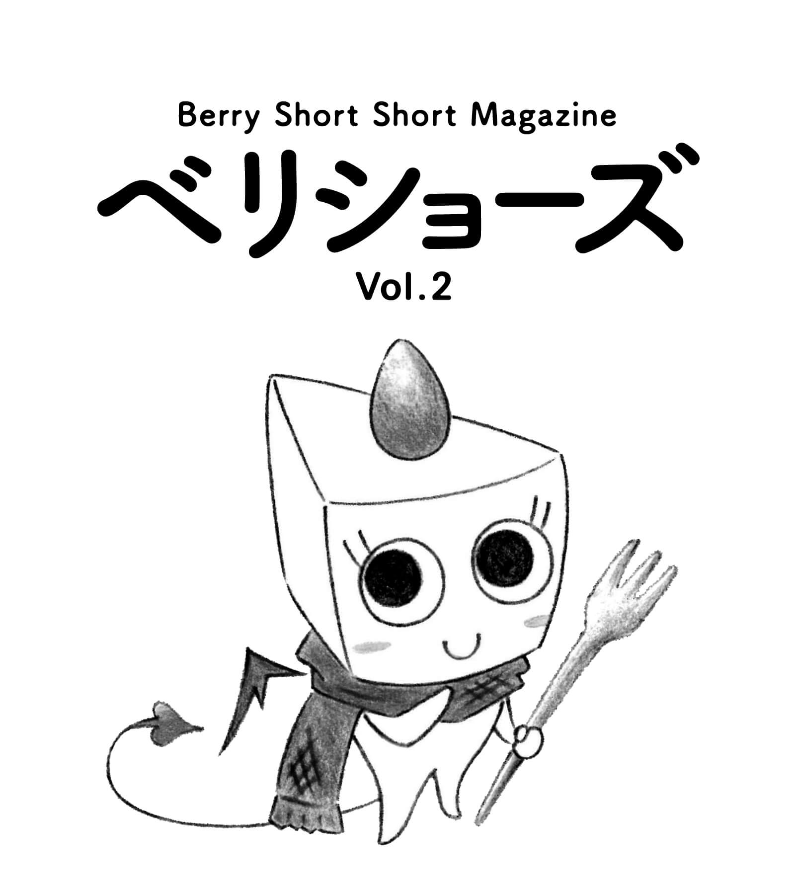
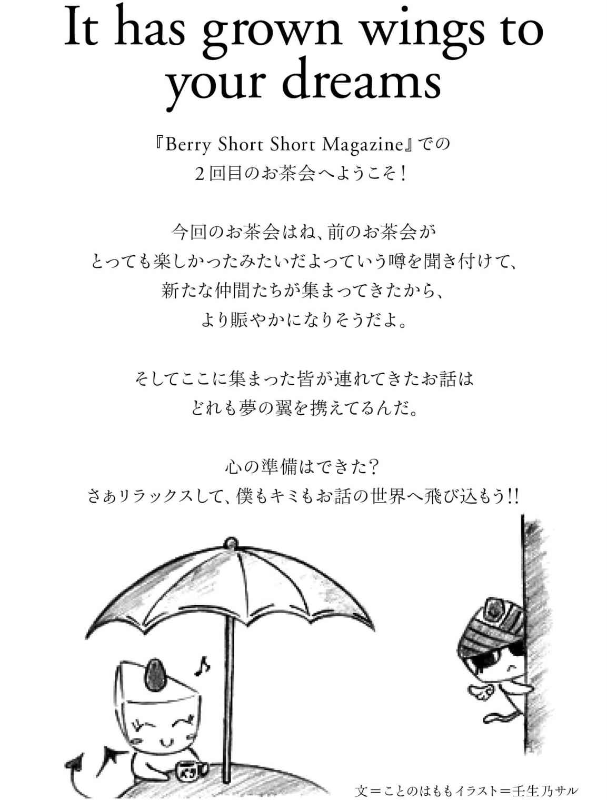
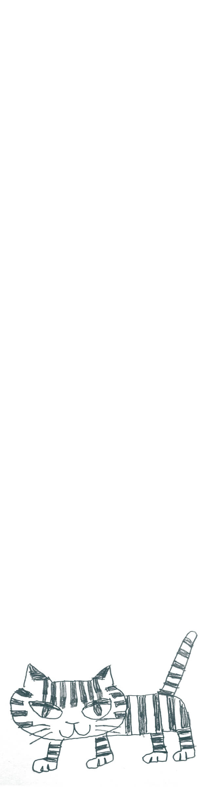
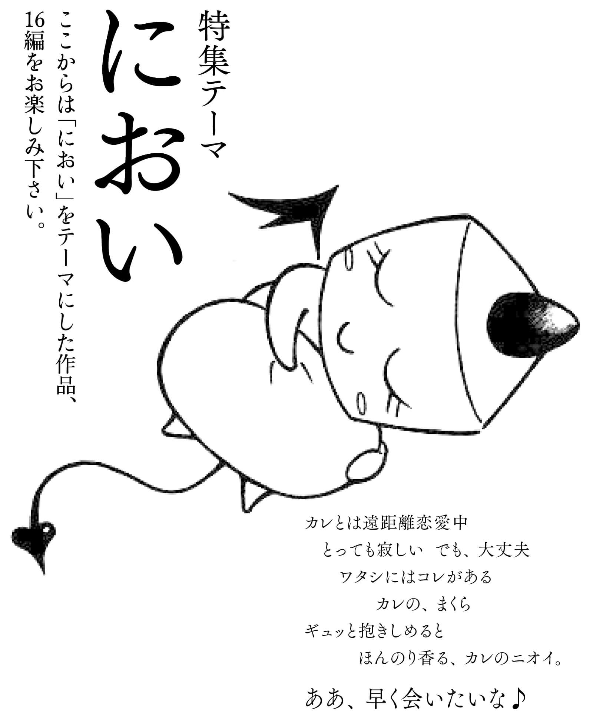
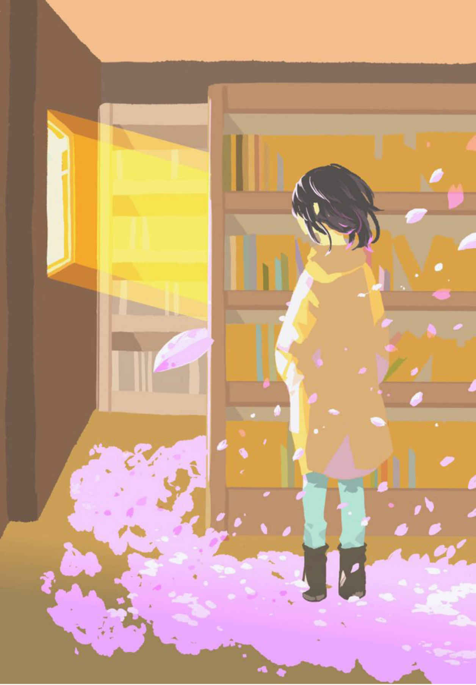
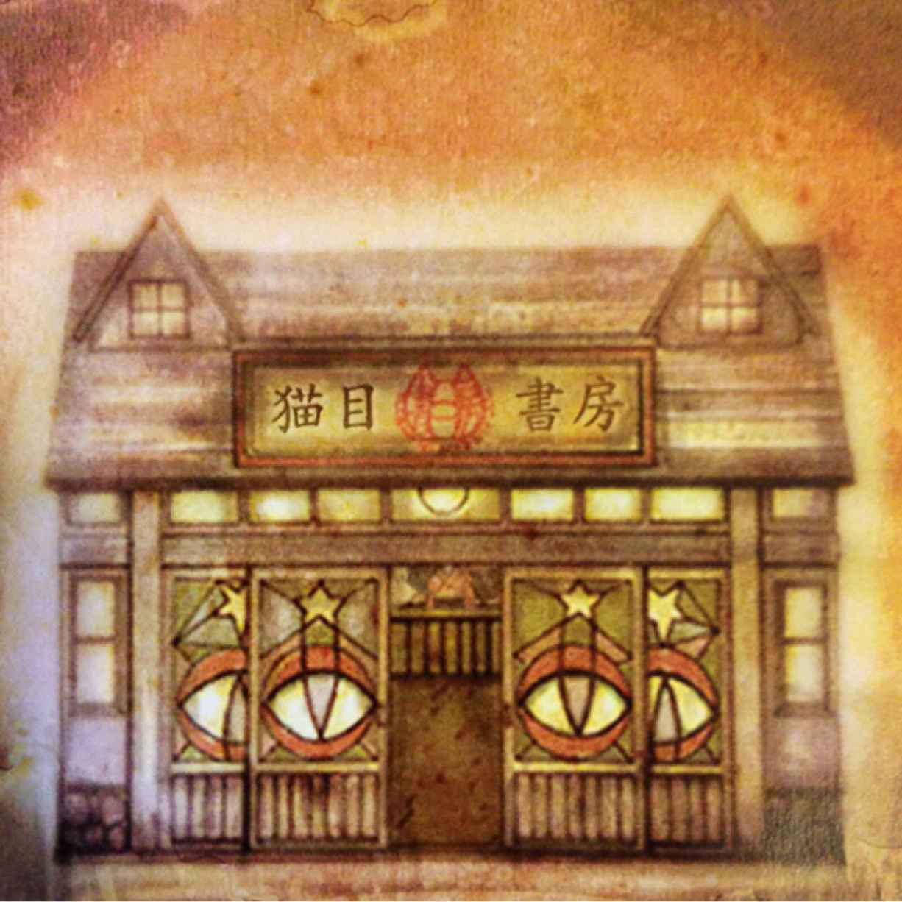
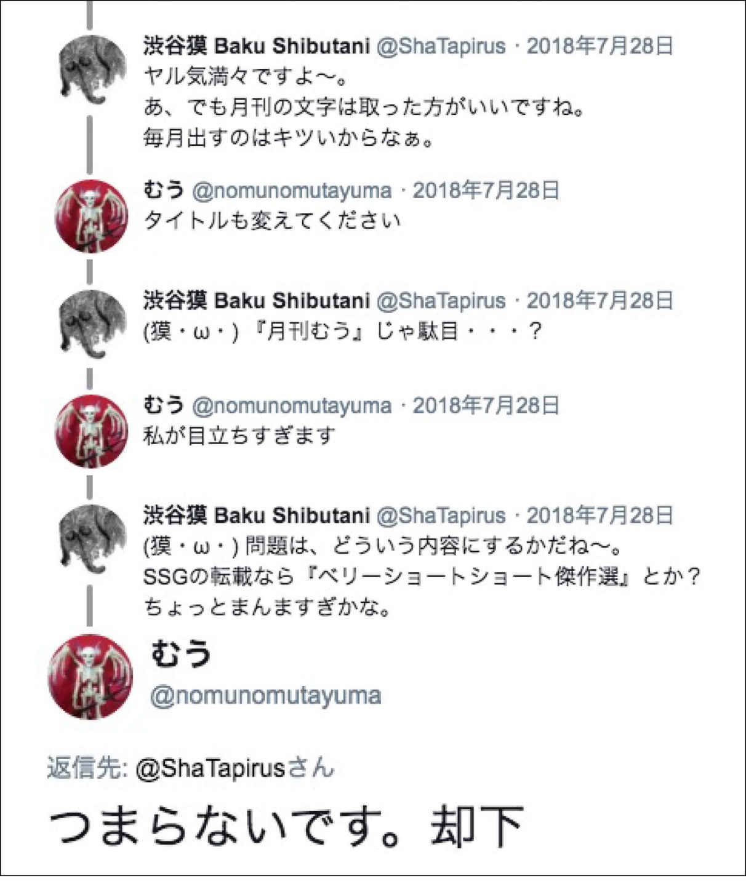
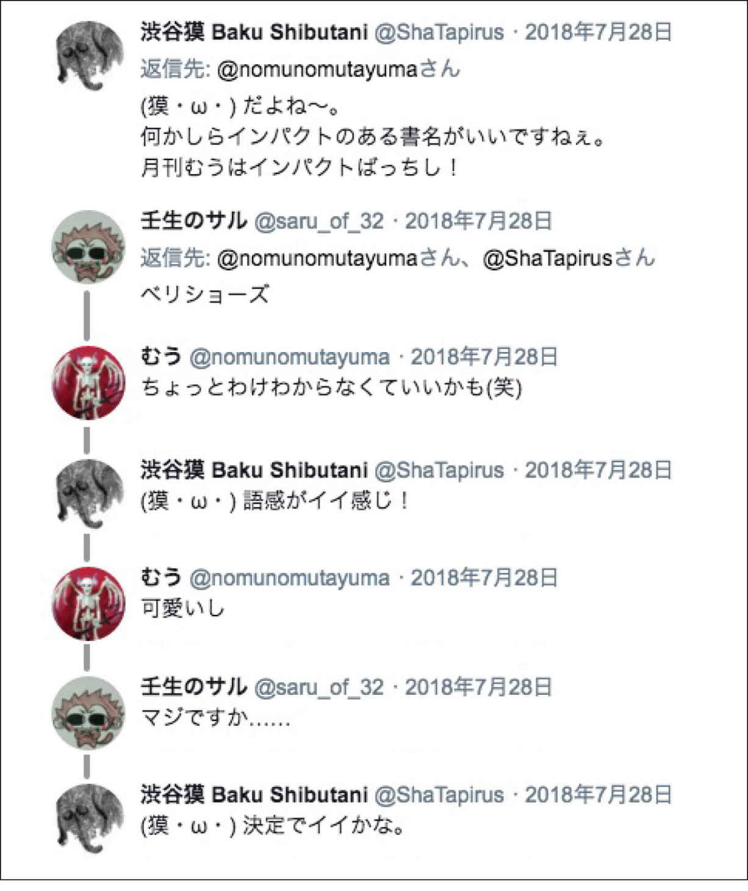
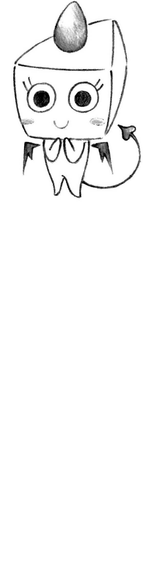
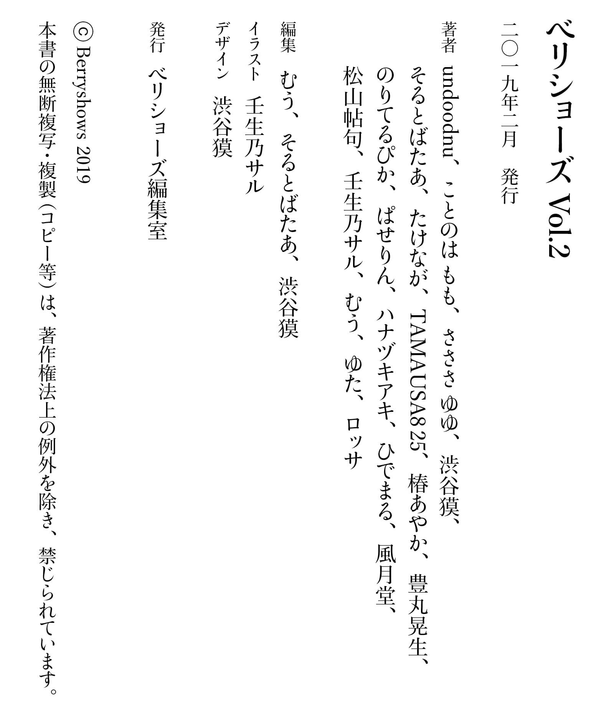

| ベリショーズ Vol.2: ベリーショートショートマガジン (ベリショーズ編集室) | |
| undoodnu ことのは もも さささ ゆゆ 渋谷獏 & そるとばたあ たけなが TAMAUSA825 椿あやか 豊丸晃生 & のりてるぴか ぱせりん ハナヅキアキ ひでまる & 風月堂 松山帖句 壬生乃サル むう ゆた ロッサ | |
| Berryshows (2019) | |

It has grown wings to your dreams
溺れるイチゴとママの声──────のりてるぴか
sweet lollipop────────── 壬生乃サル
※本書は、前半を「自由」テーマの小説20
編、後半を「におい」テーマの小説16
編で構成しています。

三月一日。世界中の人達にとっては何でもない一日で、私にとっては少しだけ特別な一日が始まった。ベッドから抜け出し、階段を降りて居間に向かうと、サヤカがテーブルに朝食を運んでいた。
「おはよ」
「オハヨウ。ソレト、マリ、誕生日オメデトウ」
「......知ってたんだ」
「当タリ前デショ」
サヤカは最後に目玉焼きのお皿をテーブルに並べて、満足したようにエプロンをパンパンと叩いた。洗面所から触覚みたいな寝癖を生やしたパパが戻ってきた。
「万莉、おはよ」
「おはよ」
それからみんなで朝御飯。テレビの天気予報や占いを見ながら、どうでもいいことを話す。
「光雄サン、寝癖ナオッテナイワヨ」
「そうかな？」
「マリ、茶碗ニ御飯ガ残ッテル」
「はーい」
いつものように。
いつものように。
ママが病気になったのは、私が四年生になってすぐの頃だった。珍しい病気らしく、ママはすぐに入院した。夏休みが始まる頃にようやく退院して、これからは元気なママと一緒にいられると思った。でも、ママは毎日仕事に出掛けて、夜遅くに帰る日が続いた。ママは科学者だった。パパはいつも誇らしげに「ママの研究は世界中の人達を幸せにするんだ」と言っていた。そんな事どうでもよかった。世界中の知らない人達よりも私を見て欲しかった。
ある日の朝、ママは眠ったまま二度と起きてはくれなかった。
葬式の日、ママがやり残した仕事をする為に無理を言って退院したのだとパパから聞かされた。残り少ない命でやらなければいけない事があったのだと。
サヤカが家に来たのは、それから数日後の事だった。
「ハジメマシテ」
玄関にママそっくりの何かが立っていた。彼女は万能アンドロイドなのだとパパに紹介された。名前はＳ・綾香
でサヤカ。ちなみに綾香はママの名前。Ｓが何かは知らない。
「ママはお前が悲しまないように彼女を作ったんだよ」
これはママの偽物だ。そう思うと、少し怖かった。
「ヨロシクネ」
そう言って差し出された手に嫌々握手した。触れた手は暖かくて、柔らかくて、少しカサカサしていた。
ママの手と、よく似ていた。
「オハヨウ」
「忘レ物ハナイ？」
「イッテラッシャイ」
「ホラ、マタ靴下ガ脱ギッパナシ！」
「宿題ヤッタノ？」
「オ風呂出来タヨ～」
「マリ、オヤスミナサイ」
サヤカは、ママそっくりの顔で笑って、ママと同じ仕草をして、ママの声に似た機械音声で喋った。
そんな彼女に私はどう接したらいいのか、半年経った今でもよくわからない。
「ただいま」
学校から帰ると、家に入るなり甘い匂いが私の鼻をくすぐった。ケーキの匂いだ。一瞬で思い出が蘇り、私は台所に走った。
「オカエリナサイ」
振り向いたサヤカを見て、私の中で膨らんだ何かがパチンと音を立てて割れた。
「マリ？」
「......ただいま」
バカだな。ママがいるわけないのに。
私は一年前の誕生日を思い出していた。あの日、ママは初めてケーキを作ってくれた。一グラムの誤差も許さないと計量器とにらめっこして、タイマーやオーブンを何度も確認しながらケーキを焼き上げた。レシピ通りに作れば間違いはない。そうママは言っていたけど、出来上がったケーキは、ホイップクリームの荒波に揉まれてイチゴが溺れていた。夕食の後にハッピーバースデーをみんなで歌って、ロウソクの火を吹き消して、恐る恐る口に入れたケーキはとっても甘くて美味しかった。
あの時の幸せな味が、ふわりと口に蘇る。そしてすぐに「もうママはいない」という現実が押し寄せてくる。思わず涙ぐんでしまい、私は逃げるように階段を駆け上がった。ランドセルを放り投げてベッドに倒れこんだ。
どうしてママは、サヤカをママそっくりに作ったの？
こんな思いをするなら、あんな機械人形なんかいらない。
「マリ―」
階下からサヤカの声がした。
「疲れたから休む！」
乱暴に言って、私は部屋に閉じこもった。
それから数時間後、「夕食だよ」とパパに呼ばれて、私は渋々部屋を出た。
「いただきます」
パパはいつもよりよく喋った。もしかしたら、元気のない私を見て、無理に明るく振る舞っているのかもしれない。パパはサヤカと世間話をしていた。近所のおばさんの事、面白いＣＭの事、変な店員がいたコンビニの事。仲良く話す二人を見ていると、不思議な気持ちになる。サヤカはママと同じように「光雄サン」とパパを呼ぶ。パパは彼女の事をどう思っているんだろう。
食事が終わり、彼女が冷蔵庫からケーキのお皿を取り出してテーブルに置いた。
「うそ......」
イチゴがホイップクリームの波に溺れていた。
「なんでよ！ 万能アンドロイドなんでしょ！ これじゃまるで......」
抑えていた感情が溢れ出してポロポロと涙が零れた。
その時だった。
ザザ......ザザザ......
不意にサヤカからラジオのノイズのような音がした。彼女は電池が切れたように両手をブラリと落とし、表情を無くした。
『万莉、誕生日おめでとう』
ママの声がした。いつもの機械音声じゃない。録音されたママの声だ。
『光雄さんも元気？』
驚いた顔のパパが、「ああ」と大きく頷いた。
『二人ともサヤカとは仲良くなったかな？』
涙を拭って、久し振りに聞くママの声に耳を澄ませた。
『ママにそっくりで驚いたでしょ？ サヤカはね、万莉のために作ったの。私がいなくなっても万莉が平気なように』
そこでママは少し間を取ってから、言葉を続けた。
『というのは、嘘です』
「「ええっ!?
」」
私とパパの驚いた声が重なった。
『そう言わないと光雄さんが退院を許してくれないと思ったから。サヤカを作ったのはね、私の我儘。私が死んだ後、光雄さんが私を忘れるのが嫌だった。光雄さんが他の女と再婚するなんて考えたくなかった。だから、光雄さんが私の事を忘れないように、私そっくりのアンドロイドを作ろうと思ったの。不気味の谷なんかジャンプして飛び越えてやる。完璧を目指してやるって。そしたら止まらなくなっちゃって、本気出しちゃった♪
』
ママが楽しそうに笑って、それから気持ちを整えるように大きく息を吸い込んだ。
『光雄さん、愛してるわ。世界中の誰よりも。でも、もし他に好きな人が出来たら、サヤカの動作を停止させて、その人と幸せになって。嫌だけど、仕方ないと諦める。それから、万莉、愛してるわ。世界で二番目に。あなたは私がいなくても大丈夫。サヤカがいてもいなくても関係無い。なんでも出来るし、なんにでもなれる。ママの娘だもん。きっと大丈夫。パパの事よろしくね。それじゃ、バイバイ』
ザザ......ザザザ......
ママの音声は、そこで終わった。
静かになった部屋の中で「綾香さん、僕も愛してるよ」と、囁くようにパパが言った。
サヤカが再び動き出し、キョロキョロと周りを見渡して小首を傾げた。
「アレ？」
何が起きたのかサヤカは知らないらしい。その様子がおかしくて吹き出してしまった。そして、正直すぎるママの告白を思い出したら笑うのを止められなくなった。そうだった。ママはこういう人だった。パパが大好きで、そんなママが私は大好きだった。お腹を抱えて笑う私に釣られて、パパも笑っていた。
「さっ、ケーキ食べよ」
「ああ。その前に、ハッピーバースデーだな」
ロウソクに火を灯して、明かりを消して。
パパとサヤカと私。
三つの歌声が重なった。
それから。
サヤカは変わらず家にいて、変わらない毎日が続いている。あの日以来、私はサヤカを見ても悲しくはならなかった。ママはママだし、サヤカはサヤカだからだ。
『なんでも出来るし、なんにでもなれる』
私は、あの日のママの言葉を根拠も無く信じている。
いつか私も、ママにとってのパパのような人に出会えたらいいな。世界で一番好きな人と結婚して、世界で二番目に大好きな子供を産んで。
それとも、ママやマリ・キュリーのような科学者になって、ノーベル賞を目指すのもいいかもしれない。
ただ、いつかパパが、サヤカに恋をしてしまうんじゃないかと、少しだけ心配している。
バレンタインデー。
初めて、異性からチョコレートを貰った。
手紙付きのラッピングされた箱が、机の中に入っていた。
差出人は不明。けど、うれしかった。
家に帰って手紙を読んでみる。
読んでくれてありがとう。いきなりだけど、ずっと前から〇〇君のことが好きでした。手作りチョコは初めてでうまく出来たか心配だけど、私の心●を込めてみました。想いが伝わるようにハート形にしたんだけど、どうかな？
一か所間違えて塗りつぶしたのだろうか。にやにやしながら箱を開ける。
......え。
手が止まった。戦慄する。
心臓の形をしたチョコレートが入っていた。生々しく脈打っている。
私の心●を込めてみました。
手紙の一文。心の下は間違えて塗りつぶしたところ。のはず。けど、もし違うとしたら。
チョコレートは今も触れられないまま、引き出しの中で不気味に蠢いている。
「なんだって？ もう一回言ってよ」
オス猫のトラ助は目を丸くして言った。
「言ったじゃない。人間と結婚するのよ」
メス猫のトラ美は恥ずかしそうにモジモジしながら言った。目には相手の顔を思い浮かべているようだ。
「信じられないよ......どこで出会ったの？」
「魚屋の隣にある新しいお家よ。通りすがりの私を彼は見て、えさをくれたわ」
「相手は何歳なの？」
「子どもよ。可愛らしい年頃の」
うふふと言いながら、トラ美は毛並みを整えている。完全に夢を見ている感じだ。
「トラ美はっきり言うよ。ただ通りかかった時にえさを貰っただけだろ。確かにめったにない事だけど、それと結婚する事は関係ないよ」
「私もそう思ったわ。ただ彼と何度か会う事で変わった。彼の笑顔がどんどん私を愛する顔に変わってきた。その証拠に見てよ」
トラ美は口にくわえていた何かを地面に置いた。
「指輪よ。魚の骨で出来たね。人間がここまで手を尽くして、野良猫に渡すと思う？ 私は悟った。彼の私に対してのプロポーズであり、今後結婚をすることに違いないと」
トラ助はただじっと聞いた。今まで色んな猫に話を聞いたが、人間とのトラブルばかりだった。なにか罠に違いないと。それに子供を彼と呼ぶのはおかしすぎる。
「わかった。そこまで言うなら俺が見て、確かめてくるよ」
「噛みついたり、脅かしたりしないでよ」
「わかってるよ。ただ見に行くだけだから。どんな子か見たら帰ってくるよ」
そう言って、トラ助は駆け出して行った。
「トラ助彼に嫉妬しているのかしら......」
夜も更けた頃、トラ助は目的地へと着いた。閑静な住宅街の一角に白い家があり、庭からはコオロギの囁くような鳴き声が聞こえる。子どもの遊具がいくつか置かれていて、遊びの後なのか三輪車は横転していた。
トラ助は少し緊張したが、ゆっくりと家に近づいた。ふとベランダ窓を見ると、窓越しに家族で夕食を食べている様子が見えた。小さい子どもが笑顔で唐揚げを頬張っている。
「あの子だな」
確かに可愛らしい男の子だが、トラ美との結婚は想像出来ない。悩んでいるとベランダ窓の隙間から猫が出てきて、話しかけて来た。
「何か御用？」
トラ助は突然話しかけられて少し戸惑った。
「その、俺の友達がここの家族の人と結婚するって聞いたもので、本当かどうか確かめに来たんだ」
「マー君のことかな？」
「マーくん？」
「そうよ、あそこに見える男の子よ。確かにマー君私に言ってたわ。最近野良猫に会ってえさをあげたら懐いてきたって。それで何回か会って楽しくなって、将来結婚するって指輪を作ってたわ」
「本当だったんだ」
声にならないほどの小ささでトラ助は残念そうに言った。
「まぁ、子どもの発想だから何とも言えないけどね。でも私も人間と三年後には結婚するし、可能性はなくもないのよね」
「君も結婚をするのかい？」
トラ助はびっくりした。
「そうよ。猫界では知らないと思うけど、人間界では法案が変わってね。人間が動物を飼うシステムだったけど、今動物も人間同様平等に扱うことが大切にされてさ。三年後には動物平等法が成立し、人間と動物の結婚が許され、共存する世界になってくるのよ」
「猫以外でも結婚するの？」
「そうよ。犬とか猿とかもそう。生きている物全てが対象よ。今はその法案がまだ成立してないから、お互いが契を結ぶと犯罪になっちゃうけどね。私の友達がある人間と結婚したそうだけど、それがばれて今は人間と一緒に逃げてるそうよ」
「子どもとかできるの？」
「出来るわよ。最新の医療を駆使してね。人間の言葉が分かるようになってきたのはもう当り前よ。今まで出来なかった事が全部三年後には変わるの」
「そうなんだ......」
トラ助は物思いにふけった。昔仲間とやったねずみ捕りやけんかが懐かしく思える。夢だと思っていた人間に飼われることも、今では普通で、人間と平等に暮らせる日がくるとは到底思わなかった。
「ピーちゃん。なにしてるの？」
「私もういかなくちゃ。友達の幸せを祈ってあげてね。そしてあなたもいい人と結婚するのよ」
トラ助は夜空の下をとぼとぼと歩いた。昔は星の光が黄色く輝いていたが、今は赤く光っている。以前はこの変化に驚いたが、今はもう普通だ。自分の中の驚きはもう何年か後には普通になっているのだ。
「トラ美へ帰る連絡をしないとな」
トラ助は首からぶら下がった携帯を地面へと器用に置いた。もう明日には自分が猫であることを忘れているのかもしれない。
生まれつき、私は周りの女の子たちより、飛び抜けて美人だった。
必然、告白を受けるなんていうのも日常茶飯事で、それは挨拶を交わすくらいの頻度で、日々私の日常につきまとった。
「好きです」「前から気になってて」「一目惚れで」
「おはよう」「数学の宿題やった？」「天気いいね」
どっちがどっちともつかない毎日のなか、今日も登校と同時に呼び止められた私は、人気のない裏庭で見たこともなければ学年すらわからない男の子から、告白の言葉を投げつけられる。
私はひとしきり相手の言い分を聞き届けると、もう定型と化した言葉を口にした。
「いいけど、あなた、私のこと愛せますか」
目の前に立つ見知らぬ男の子は、一瞬呆気にとられたあと、すぐに簡単に頷いてみせた。
その反応に、私は心の中で落胆した。
私は愛されたかった。
誰よりも愛に飢え、誰よりも愛を渇望していた。
愛の正体なんてよくわからないけど、私だけが誰かのただ一人として、愛される存在でありたかった。
だから私は、数多の男の子たちにいつも同じことを尋ねた。ときには女の子にだって、同じ質問をした。
『私を愛せますか』
これに即答できる人は、端から信用できない。
そんな不確かなことを瞬時に言い切れる人は、よほど調子のいい人か、舌先三寸の嘘が自然になっている人くらいだ。そんな人が私をただ一人にしてくれるとは、到底思えない。仮にそれが本当に「愛する」を知っている人だったとしても、その時点で、その人にとって私はすでにただ一人ではなくなってしまっている。愛することを知っているのだから、すでに誰かを愛した後だろう。
かといって、正直に引いた態度をとる人も話にならない。コイツなんか面倒くさいことを言い出したぞ、とそのまま顔に出してしまっているのだから、当然のことだ。こういうことを言ってくるのが私という人間であり、それを面倒に思う時点で、すでに私のそういう部分を愛せないことが表面化してしまっているのだから、私を愛する人からは程遠い。
同様に答えに悩むような人もいただけない。ただ一人、運命ともいえる特別な相手を愛すのに、悩むことなんてあるだろうか。それが本当の愛だというなら、悩むような要素はどこにもないはずだ。
即答せず、引かず、悩まず。ただ、私を愛する人。
私の望みはこんなにシンプルだというのに、何十何百の告白を受けても、未だそんな相手は出てこない。
ああ、また今日も靴箱にラブレターがいくつも入っている。
今日の誰かは、私を愛することができるだろうか。
今日は友人と一緒に憧れのゴスペルのライブを観に来た。定刻通りに始まったライブだが、一曲目が終わり二曲目でステージ全体を見渡してハッとした。
最前列の左側でイキイキと歌っている女性が、自分にソックリだったからだ。あまりにビックリしたので思わず友人の肩を叩いた。
友人は何を今更と言わんばかりに
「愛が出演するから観に来てって言ったんでしょ」
と私の名前を言った。
何？どういうこと？じゃあここにいる私は誰？
「出演するけど、どんな感じか客席から観てみたいから付き合ってって言ったのも愛だからね！」
そう言うと持っていた、ある取説を見せてくれた。
「因みにステージのあんたも、ここにいるあんたもクローンだよ‼
」
あぁ、そういえば思い出した。私は父の知り合いのエンジニアの方が作った『憧れ』というタイトルのクローンだった。
本当の私は今日も自室のＰＣで、私たち二体を無表情で観ているだろう。
今日は、昨年亡くなったおばあちゃんの命日。
今年は仕事の都合でお盆には帰って来られそうにないので、仏前にはいつも以上に長く居た。
共働きの両親の代わりに、私をとても可愛がってくれたおばあちゃん。
煮物が多かったけど、美味しい料理を毎日のように作ってくれ、学校に持って行かなければいけない物もいつも用意してくれていた。
そして私が社会人になってからも、仕事のことや身体のことをよく心配してくれた。
「おばあちゃん。いつも見守っていてくれて本当にありがとう♪ 私はおばあちゃんみたいになりたい」
そう仏壇の写真に語りかけると、次の瞬間ぐにゃりと景色が曲がった。
気が付くと私は仏壇から私を見つめている。
そこには拝み終わって立ち上がり、ゆっくりと歩き出す私の姿が。
その歩き方は片足を悪くして、いつも少し引きずっていたおばあちゃんそのものだった。
待って......。
植物研究家でもあるご主人様の温室には沢山の植物たちがいたが、家の周りに這いつづける蔦である私のことも、いつも温かい目で見守ってくれ、切らずにいてくれた。
そんなご主人様が若い頃は、教師をしていて恋人が居たこともあったが、植物のことばかり考えているご主人様に皆愛想を尽かし、しばらくするとここを出ていった。
それから幾年月が過ぎ、とうとうご主人様が永い眠りについた時、誰かにご主人様を見つけてもらおうとからだを揺らすも、周りの人たちはただ風で私が揺れていると思い、気が付いてはくれなかった。
このままではご主人様は悲しく朽ちていくだけ。残された温室の植物たちも皆うなだれている。
雷がゴロゴロと轟くある夜、私はご主人様が教師をしていたときに愛用していた指示棒を、自分に絡ませ天へ向けた。そこへドンッという轟音をたて雷が落ちてきた。
私たちは皆でご主人様を抱き締め、天国へ向かいゆらゆらと燃えていった。
忘年会のシーズンが近づいて、胃袋レンタル屋には長蛇の列ができていた。
胃腸の弱い私は早い時期にネットで予約しておいたので、予約者専用レーンに並ぶこと数十分で順番が来た。
受付で記入しておいたカルテを見ながら、店員がテキパキと作業をしている。
『少し大きめで、アルコールを受け付ける胃袋をご希望とのことですが、間違いないですね？』
「は、はい。宜しくお願いします！」
麻酔で少しの間眠らされた後起きてみると、早速胃がぎゅるぎゅると音をたて、お腹を空かしていた。
『これで処置は終わりました。三日後に返却の施術を行うので、ご予約の時間にこちらにお越しくださいね』
そう言いつつ見せてくれたのは、私の元々の胃袋とレンタルで借りた胃袋の画像。もう見た目からして全然違う。
心置きなく忘年会を堪能した私だったが、三日後再び訪れると、店員が客たちに頭を下げ、何やら謝っている。
『借りた胃袋を気に入ったお客様が返却に来ないので、もうお貸しする胃袋が無くなってしまいました‼ 』
わが家のパグの様子がおかしい。今日ドッグランに連れていってからだ。その時は元気に駆け回っておりとても楽しそうだったが、休憩している時に様子がおかしくなった。
皆が犬連れで犬好きなので、この子も見知らぬ人にいっぱい撫でられた。それが原因ではないだろうか？
普段私が撫でてやる場所とは違う箇所を沢山撫でられたことによって、そこに生えている毛たちがざわめいている。それは帰宅してからも続いており、本人は眠っていても、毛たちが興奮からなかなか冷めやらず微妙に蠢いている。
動物病院に連れて行った方がいいのだろうか？
そう悩んでいると頭部の細胞がとうとうその場所に落ち着いていられなくなったようだ。
ポンッ‼
という音と共に、顔が前に飛び出て丸く立体的になった。
私は驚き、急いで抱き上げケージに入れようとしたが、その前に一度しっかりと抱き締めた。と、次の瞬間安心したのかクシャッと縮んで元の顔に戻った。
やっぱりパグはこうでなくちゃねぇ‼
某ＳＮＳでやり取りしている彼から、黒いうんこイラストのスタンプが送られてきた。
「なにこれ？」
「うんこ」
だろうね。わざわざ、うんこのスタンプなんて購入したのだろうか？
そう思っていたけど、どうやら最初からこのＳＮＳ上で使える初期スタンプらしい。
調べてみると確かにあった。白いうんこもある。そのスタンプを彼に送りつけた。
「白いうんこって嫌やなー」
「そう？ ソフトクリームみたいやん？」
「余計に嫌やわ！」
「うん」
「こ」
「ww」
我ながらアホなやり取りをしてしまった。腹いせに、彼の好きなアニメキャラクターのイラストを描いて、その頭の上にうんこの絵を付け足し、送りつけてやった。
「かっけー！」
あぁ、そうだ。こういう奴だった。うっかり喜ばせてしまった。
「うんこアクセサリーやな！」
「匂いそうやな」
「wwww」
うん、これはダメだ。
うん、このへんで終わりにしよう。
事件ですよ、事件。俺にとって死活問題の大事件。
さっき仕事から帰って、冷蔵庫を開けた時の事ですよ。開けた瞬間、妙な違和感に襲われたんですよね。そういう事ってないですか？
違和感の正体には、すぐに気が付きましたよ。それに気付いた時には、思わず絶叫しちゃいましたからね。
「俺の、俺のマヨネーズがぁあぁぁあぁっ！」
って。
あれ？ そんな不思議そうな顔しないで下さいよ。俺にとってマヨネーズは、本当に死活問題なんだから。
俺、主食がマヨネーズなのよ。いや、マジで。マヨネーズのみで、軽くご飯五杯は食べちゃうからね。
ん？ ご飯食べてんじゃん。主食、ご飯じゃないの？ って？
いやいや、あくまでも俺の主食は、マヨネーズ。ご飯は、おかず。
不健康そう？ うん。まぁ、それは否定しませんよ。でも、今のところ健康診断でも問題ないからなぁ。
で、話を戻しますよ！ 大事件というのは、そんな俺のマヨネーズが空っぽになっていたんですよ！
なんだ、そんな事か。なんて話ではないですよ！
俺の主食ですよ、主食。しかも今朝、開封したてのマヨネーズですよ。まだ少ししか食べてなかったのに。まさか俺が仕事へ行っている間に空っぽ、だなんて。ほんの半日ほどの出来事ですよ？ どうゆう事よ、これ。
俺の体を心配した彼女が捨てたんじゃないの？ って？ それだったら嬉しいような、嬉しくないような、だねぇ。
でも、それはない。だって、同居人なんていないし、合鍵を持っている人もいませんから。もちろん玄関の鍵も、ベランダの鍵も、ちゃんと閉まっていましたよ。何者かが入り込んだ形跡もありませんでした。
所謂、密室。そう、これは密室殺人事件。
あ、殺人は起こってないか。とにかく密室で起こった事件なのです。大事件なのですよ、皆さん！
「きゃん、きゃん！」
ほら、犬も「そうだ、そうだ！」って、言っているでしょ。
あ。
そうでした。同居人、いや、同居犬がいました。
もう、これ......犯人じゃん。いや、犯犬じゃん。犬しかいないじゃん。じゃんじゃん連呼しちゃったじゃん。
いやぁ、お騒がせしちゃって、どうもすみません。今から、この事件にケリを付けてきます。
では！
「お前かぁ！ お前が俺のマヨネーズを食べたのか？」
俺は犬を抱き上げ、問い詰めてやった。すると犬は、尻尾をフリフリしながら俺の頬をペロペロ舐めた。
疑惑は確信に、変わった。
唾液がマヨネーズ臭い。よく見ると、口元にマヨネーズが付いている。
「よくも俺のマヨネーズを食べやがったな......」俺は吼えた。
「マルチーズのくせにぃ！」
「よく当たる占い師がいるんだけど、行ってみない？」
そう切り出したのは親友のミホだ。
正直に言って占いにはあまり興味がない。毎日の星占いを気にするなんて、人間は12
種類しかいないのかと思う。確かに年齢イコール彼氏いない歴ではあるけど。せっかくのお誘いだし、行ってみるか。
お店はマンションの一室にあった。エレベーターに乗って５階で降りる。ドアには「占い・ユニコーン」と書かれたプレートが下がっていた。
インターホンを鳴らすと、ベールを被った女性が出迎えてくれた。身体をすっぽりと覆うガウンを着ている。部屋の真ん中にあるテーブルにはベルベットのクロスがかけられ、水晶玉が飾ってあった。
私たちは順番に占ってもらうことにした。
「じゃあ、先ね」
テーブルの前に置かれた椅子に腰かける。
「それでは、カードを選んでください」
軽い気持ちで来たのに、どんな結果が出るのかと緊張してくる。並べられたタロットカードを示しながら、占い師は話し始めた。
「あなたは積極的で明るい性格ですね。注意力が足りない面があるから、ケガに気をつけなさい」
なるほど、なかなか当たっている。この間は、仕事中にカッターで指を切ってしまった。小学校に上がる前に、ブランコから落ちて大ケガをしたこともあった。その時の傷跡は今でも腕に残っている。
「異性運は悪くないですが、せっかちで結果を急ぎがちです。かなり損をしていますよ」
ふむふむ、痛いところを突いてくるなぁ。好きな人にはすぐに告白したくなる。今も職場に気になる人がいるんだけど......。
「先週、ショックなことがありましたね。想いを寄せている同僚の男性に恋人がいると分かったからです」
えっ、なぜ知っている！ この人は何者なんだろう。改めて顔を見ようとしたが、ベールが邪魔で見えない。
「すごく当たっていて驚きました。ぜひ顔を見せてくれませんか」
相手はゆっくりと首を横に振った。
「そうですか、残念です。ありがとうございました」
そう言って席を立った。
どうしても気になって、もう一度占い師の方を見た。椅子の位置を戻そうとして、厚いガウンの袖をまくり上げている。
その腕には、私と同じ場所に傷跡があった。
朝、写真家の星野拓郎は、曽爾高原に来ていた。
一面に広がるススキの原。風に穂が靡き、カメラのシャッター音だけが響いていた。拓郎はカメラをバッグに入れ、曽爾村にある土産屋に向かった。
地元に住む望月香奈は、大学に通いながら土産屋でアルバイトをしていた。
「いらっしゃいませ」
「お酒、ある？」
拓郎は側にいた香奈に声をかけた。
「それでしたら地ビールがおすすめですよ」
「じゃあ、それ」
「ありがとうございます」
それが二人の出会いだった。
拓郎は宿泊先のコテージに戻り、昼食後、再びススキの原へ向かう。コースを変更して小高い丘を登った。
ふと、その公園から聴こえてくるギターの音色、優しい歌声。拓郎はその曲に震えた。
「......いい曲だ」
ベンチで弾き語りをしていたのは香奈だった。
拓郎の姿に手が止まる。
「君はたしか、土産屋の」
「さきほどは、ありがとうございます」
「いつも、ここで歌ってるのかな」
「いえ、今日は特別な日なんです......」
「もう一度さっきの曲、聴かせてくれないか」
香奈の表情が急に暗くなった。
香奈の隣には、少し傷ついた赤い首輪があった。金色の鈴が付いている。
「その子のために？」
「ルナって猫なんです。一年前、この場所で亡くなっていたんです」
「......そう、だったんだ。曲の途中で邪魔してしまったね。もう、行くよ」
拓郎は公園を出て、再び駆け戻ってきた。
「君、才能あるよ。みんなの前で歌った方がいい」
「えっ......」
香奈はシンガーソングライターを目指していた。
ルナを失ってから、踏み出せないでいたのだ。
拓郎はコテージの窓辺でビールを飲み、月を眺めていた。
徐にスマホを取ると、電話をかけた。
「あ、兄貴。明日行くから」
『いつも勝手だなぁ、おまえは』
拓郎は東京に戻り、音楽スタジオに来ていた。
そこではミュージシャンの東堂聖がギターを弾いていた。東堂は拓郎の兄である。
東堂が楽譜にチェックを入れていると、拓郎が入ってきた。
「おぅ、拓。来たか」
「ピアノ、借りていいか」
「ああ、でも拓、おまえピアノ......」
鍵盤で軽やかに指を慣らすと、曲を弾き始めた。
東堂の顔色が少しずつ驚きに変わる。拓郎は、香奈の曲を忠実に再現させたのだ。
「この曲、どう思う？」
「すげぇよ拓！おまえが作曲したのか」
「弾き語りしてたんだよ、旅先で出会った娘がね」
「なんだよ。でもいい曲だ。響いたよ」
「亡くなったペットのために捧げる曲らしいんだ。ルナって猫のね」
「特別な曲なんだろうな」
「この娘、埋もれてちゃいけない気がしてさぁ、兄貴なら変えられると思って来たんだ」
「わかった、力になるよ。それより早く戻ってこいよ、みんな待ってる」
「ありがとう。また連絡する」
曽爾村の土産屋は、学生たちで賑わっていた。
「あれ東堂聖じゃない？」 「ウソっ！本物じゃん」
拓郎が来店すると、東堂が後からススキを持って入ってきた。
「兄貴、あの娘だ」
拓郎と東堂は、香奈の前に現れた。
「と、東堂さん！」
香奈は東堂聖の影響を受け、シンガーソングライターを目指していたのだ。
「この前はどうも、俺の兄貴なんだ」
「君の曲、弟がピアノで聴かせてくれたんだよ。名前、聞いていいかな？」
「望月香奈です！」
「香奈ちゃん。君の曲、だれかを救うためにあるのかもしれないな」
「あの曲、がですか......」
東堂は手に持っていたススキを香奈にわたした。
「野外ライブやるんだ。曽爾高原広場で６時にね。それがチケットなんだ」
広場には、ススキを持った観客が次々と来場した。
東堂がギターを手に、ステージに現れた。
歓声を上げる観客の中に香奈はいた。拓郎も舞台袖から見守っている。東堂は優しく弾き語りを始めた。
東堂が奏でる曲に会場は熱気に包まれていった。
バラードを歌い終えると、夜空を見上げた。
「月が、顔を出したね」
観客、そして香奈も見上げた。
「月の女神って、ルナって名前なんだってね」
香奈は初めて知った。ルナはイメージから付けた名前だった。
「ススキはルナに捧げる花なんだ。君たちの願いを込めて、ルナに届けよう！」
『翼をください』を歌い始める東堂。会場全体がススキの原のように揺れ、全員が東堂の歌に合わせて歌い始めた。
香奈は月に向かってススキを振った。
「ルナ......。月に帰ったんだよね......」
月明かりが、何度もこぼれる香奈の雫を照らす。
「私、夢をあきらめないからね......ルナ」
東堂は、ルナが月の女神となり、香奈に一歩踏み出せる勇気と翼が与えられることを願い、夢に向かって翔けていける力に変えたかった。
ライブが終わり大歓声の中、東堂はステージから去った。
ワゴン車に、機材を積むスタッフと東堂。次の予定時期が迫っていたのだ。そこへ拓郎が香奈を連れてやって来た。
「兄貴、最高だったよ」
「おぅ拓、香奈ちゃん」
「東堂さん、素敵なライブありがとうございました！」
「いつかゲストに呼ぶから、歌、続けるんだよ」
「はい！私、頑張ってみます！」
「拓、戻ってこいよ」
「ああ、いつかな」
「香奈ちゃん、ルナはいつだって君を照らしてくれる。頑張れ」
東堂はそう言い去っていった。
「拓郎さん、メンバーだったんですか？」
「ああ、弾けなくなったんだピアノ。妻を亡くしてからね」
「そう、だったんですか」
「でも君の曲を聴いてから、変われたような気がする。不思議だな」
「お兄さんとのセッション聴きたいです！」
「それは、君が東堂聖のステージに上がるときかもな」
香奈は、一人暮らす部屋の窓辺に花瓶を置くと、東堂にもらったススキを飾った。
月が穂を金色に照らす。
「ルナ......。私、できるよね」
首輪の鈴がチリンと鳴った。
行き交う人波の中、香奈はギターを片手に歩いていた。
立ち止まった足元にギターケースを置く。
初めての路上ライブだ。
ギターを構え、深呼吸する香奈。
優しくあの曲を弾き語り始めた。
一組のカップルが立ち止まった。
一人また一人、
ギャラリーは増えていく。
笑顔で歌い続ける香奈。
夕空に、月が顔を出し始めていた。
休み時間にトイレから戻り廊下を歩いていると、足元に何かが落ちているのに気が付いた。クマだ。クマの髪留めだ。島田さんの普段付けている髪留めにそっくりだ。島田さん。僕の隣の席に座っている女の子で、ストレートの癖のない髪の毛を二つに縛ってお下げにしている。髪留めはクマ。僕が今手にしたクマ。こんなクマを島田さんはいつも付けている。はたして、これは島田さんの髪留めだろうか？ まずは島田さんに訊いてみよう。違ったら、落とし物として届ければ良いだろう。さて、落とし物はどこへ届ければ良いのだろうか。職員室だろうか。僕は知らない。とりあえず、職員室へ行けば良さそうではあるが。
そんなことを考えながら歩いていると、教室に辿り着いた。僕の席の隣には島田さんが座っている。僕も、自分の席に座った。島田さんは頬杖を付いて前を見ていたが、何となくボーッとしていて、何も考えていないように見えた。そして、いつもよりもなぜだか大人っぽく見えた。なぜだろう。僕たちの年代は、成長が早いということだろうか。僕を置いて、島田さんは一足先に大人になってしまったということなのだろうか。どこか憂いを秘めたような横顔を見ていると、僕は謎の焦燥感に襲われた。島田さんが近くにいるのに、というよりも隣にいるのに、遠くへ行ってしまったような感覚だ。僕が声を掛けそびれていると、島田さんはこっちを向いた。
やっぱり、いつもの島田さんと違う。髪型が違うのだ。いつもは二つ結びにしているのだが、今は、一つに結んで右肩に垂らしている。いつもペアのクマの髪留めは、今日は独りぼっちで、どこか寂しそうに見える。
「何？」
「えっと、これ、島田さんの？」
僕は髪留めのクマを島田さんに見せた。
「え？ 私のだ！ 何で何で？」
「さっき、廊下に落ちていたよ」
「そっか、さっき体育だったから、落としちゃったのか」
「廊下に独りぼっちで、寂しそうに泣いていたよ」
「でも、今は笑ってる」
僕の手の上で、クマが笑っている。島田さんも少し笑った。
「ちょっと持ってて」
そう言うと、島田さんは右肩に垂らしていた髪を元に戻して、一度クマの髪留めを外した。手で軽く、髪の毛全体を梳く。島田さんのサラサラした髪の毛に、指がスルスルと入っていくのが分かる。思わず手を伸ばそうとして、引っ込めた。今度は右側の髪の毛をまとめて、慣れた手つきでクマの髪留めを付ける。いつもの島田さんが半分出来上がった。何だか見ていると面白い。毎朝、島田さんは、こうして髪の毛をセットしているのだろうか。いつも右側からセットしているのだろうか。今日は、たまたまなのだろうか。どうでも良いような気もするが、とても知りたいような気もする。
「ありがとう。じゃあ、それちょうだい」
島田さんはそう言って、僕の手からもう一つのクマの髪留めを取った。今度は左側の髪の毛をまとめて、クマの髪留めを付ける。島田さん完成だ。
「ずっと私の方を見ていたけど、そんなに面白かった？」
「え？」
「髪の毛を結ぶところ」
「えーと、何だか、僕の知らない大人な島田さんが、いつもの島田さんに戻って安心したというか......」
「何それ！ いつもは子どもっぽいってこと？」
「いや、そういうわけじゃないんだけれど」
「えー、どういうこと？」
「うーん」
「やってみたかった？」
「え？」
「私の髪を、結ってみたかった？」
島田さんのサラサラした髪の毛。きっと手ですくったら、髪の毛がサーッと流れて気持ちいいんだろうな。そして、空気を挟んで良い匂いもする。なぜだろう。きっとそうに違いない。触ってみたい気がする。島田さんだから、とか、そういうことじゃなくて、サラサラの髪の毛に触ってみたい、という単純な欲求だ。クマの髪留めを付けて「付けるのヘタだね」と言われてみたい。やっぱり、島田さんに言われてみたい。
「なーんてね」
島田さんはクルッと前の方を向いた。もうすぐ次の授業が始まる。いつもの島田さんと並んでの、授業が始まる。
「おはよう、シマ」
シマはシマウマみたいな、黒と白の縞模様の猫だ。僕は、朝起きるとまずシマにおはようを言う。シマはにゃーんと返す。その日いつもと違っていたのは、シマがにゃーんじゃなくて、
「おはよう、レイ！」
と言ったことだ。僕が目を丸くしているとシマは
「今日が、何日か知ってるかい？」
と聞いた。今日？ えっと、えっと。
「今日は四月四日だよ。０４０４、逆さまから読むと今日はシマシマの日だ」
「シマシマの日？ だからシマは喋ってるの？」
「それは関係ないよ。いつだって僕は喋れたさ。ただ、喋らなかっただけ」
シマシマの日って何だろう。なんでシマは喋るのかな。
お母さんが下から「ご飯よ！」と呼んだから、僕は一階に下りた。
リビングのテレビを付けたら、ガガガーッて変な音がして画面がユラユラしたと思ったら、いきなり白と黒のシマシマになった。
「お母さーん、テレビが変だよ！」
「いいから座って！ 早く朝ごはん食べちゃって」
僕は渋々テーブルにつく。いつもの朝ごはん、トーストとハムと目玉焼きとサラダ。あれ？ 何かが変だ。あっ！ トーストがシマシマに焼けてる。
「そうか！」
シマが言ってたシマシマの日は、いろんなものがシマシマになる日なのかもしれないぞ。
リビングに面した窓が開いていて、いつの間にかシマが庭に出ていた。シマシマの猫やシマシマの犬やシマシマのうさぎやシマシマの鳥が一緒にいる。おかしいなあ。近所にあんなにたくさんのシマシマの動物がいたかなあ。しかもシマシマの鳥までなんて！
ご飯の途中だったけど、僕は興味津々で窓から庭に出た。
「わあっ」
驚いたのはシマシマの動物がいたからじゃない。遠くの空が太陽が昇るみたいに少しずつ、シマシマになってきていたからだ。シマシマが東の空から昇ってる。空がシマシマになった場所は、雲も、木も町も家もシマシマになってるように見えた。
「世界がシマシマになるよ」
シマが僕の方を見て言った。シマの周りにいる動物たちが声を揃えた。
「シマシマになるよ。シマシマになるよ」
なんだかちょっと嫌な感じだ。空を見た。シマシマがどんどんうちに近づいてる。まるで白と黒の飛行機が並んで飛んでくるみたいに。僕は、段々怖くなってきた。シマシマの空がこっちに向かって来る。
「お母さん！ お母さん！」
僕はバタバタと家の中に駆け込んだ。そしたら、びっくり。いつの間にか部屋がシマシマになってた。壁もソファもテーブルもお皿もスプーンもハムも目玉焼きだって、全部白黒のシマシマだ。
「レイ、大きな声出してどうしたの？」
うわあっ！ お母さんもシマシマだ。
「お母さんもシマシマだよ！」
僕はうわーんと泣きそうになった。するとシマシマのお母さんがゆっくり僕を指差した。
「えっ！」
どうして？ 僕の手も足も服もいつの間にかシマシマだ。
空がシマシマになって、家がシマシマになって、お母さんも僕もシマシマになって、僕らはただの一つのシマシマになった。全部がシマシマだ。シマシマの世界だ。
すると、シマシマの黒い部分だけがゆっくりと動き出した。
どうしよう、どうしよう、僕がバラバラになっちゃう。
ゆっくりと動くシマシマが、ぐるぐると回りだした。
どうしよう、どうしよう僕がぐちゃぐちゃに混ざっちゃう。
「世界がひとつになるよ」
シマの声がした。
「わーーーーっ」
僕は汗びっしょりで、叫びながら目を覚ました。
なんだかすごい怖い夢を見た気がするけど全然思い出せない。
シマがにゃーんとやってきた。
「おはよう、シマ」
「おはようレイ、ところで今日が何日か知ってるかい？」

１˙アクアリウム
そこはまるで海の底だ
オレはデッキブラシで、壁のようになっている水槽の間の通路を掃除する。
横浜郊外の街に、オレがバイトしているアクアペット専門店「アクアリウム」がある。
明け方５時まで営業しているこの店の深夜勤務を担当している。
深海にいる錯覚。
真夜中は、特に店内のブラックライトと水槽の泡で揺れるライトが、そう感じさせる。
客が人魚だ。人魚が自分より小さな魚の周りを、ぐるぐると漂っているような感覚がする。
夜中の勤務は人を観察するには、もってこいだ。１人でじっと水槽を見つめる人が多い。
このアクアリウムで人気の魚はベタだ。和名は闘魚。コップでも飼える手軽さと、鮮やかな体色、ベルベットのような気品あるヒレ、その美しい姿が人を虜にする。
しかしその姿とは裏腹に、闘魚の名のとおり、闘争本能が強く、ベタを一緒にするとヒレがボロボロになるまで闘う。なので、一匹で小さな水槽で売られている。
美しい、孤独な魚だ。
「このベタ頂戴」
振り向き、ドキッとした。
死んだような白い肌をした女がそこにいた。
透けるような薄い黒生地に、赤、青、緑、黄の小さな鱗のような柄が入った服を着ている。開けすぎた服の隙間に、白い肉といったほうがいいか、細い身体に、大きな胸と尻がドテンとあり、不釣り合いな真っ赤なピンヒールを履いていた。
（えっ、ブラックベタか？）
仄暗い店内で見るその姿は、まるで化身だった。
見つめ過ぎてしまったのか、女の顔は怪訝だ。刺すようにオレを睨みつけた。
「ジロジロ見つめてないでよ。気持ち悪い。私の言ったこと聞こえた？そこのベタ頂戴！早く！」女はオレを罵った。
（あっ、しまった、ボーっとしてた）
「すいません。青のベタですね。ただいまご用意致します」
いつもなら、『そんな言い方もねぇよ！』と思うのだが、その時は違った。何か狐につままれたような気になり、ベタの女王が仲間を救いに買いに来たのか？と思った。罵倒された事をすっかり忘れ、早く失礼の無いように作業を急いだ。
ビニールに空気を入れ、手際良く輪ゴムをクルクルと回し、空気でパンパンに膨れたベタの入ったビニール袋を女に渡した。
「会計は８６０円になります」
女は蹌踉めきながら、バンっと千円札を台に叩きつけ、お釣りも貰わず、ベタをふんだくって帰って行った。
（あっ、釣り）
「お客さんっ！」と声を上げた。
「あっいいよ、あの人いつもそうだから。初めてだっけ？ベタ女の接客？」
バイトの先輩、黒田さんがオレに声をかけた。
「あの女、スゲーボインでいやらしいよなぁ。だけどちょっとおかしいよな。二週間に一回来てはベタ買うんだぜ。家に一体何匹飼ってんだ？あの女？」
それを聞いてオレは、あの女が水槽の中で丸く裸になって、ベタに囲まれて揺れている姿を想像した。
２˙ミステリー研究会
自転車を走らせ、私は夏の匂いを感じながら、今年入ったばかりの憧れの大学へ、自分の田舎と違う風景を誇らしげな気持ちで通学をする。
大学生になってから私の日課は、早朝にスタバでラテを買い、授業が始まる時間まで、部室で勉強をする。
この時間が私は好きだ。
入ったミステリー研究会のＯＢが、有名な出版社にいることもあり、片田舎の高校では考えられなかった世界が、これからの未来にあるように見えて眩しかった。
朝早くいつも来るので、警備員のおじさん達とは仲良くなった。今日は初老の小井戸さんが担当だった。
「おはようございます！」
「あっ、おはよう！」
私は、いつもどおり部室の鍵をもらって、部室のあるＡ棟に向かおうとした。
「今日は高木さんが１番のりじゃないんだよ」と、小井戸さんは言った。
「誰が来ているんですか？」
「佐々木さんって書いてある。髪の長い子。ミステリー研究会の鍵を持っていったよ」
小井戸さんは鍵の受渡簿を見ながら言った。
（えっ？佐々木さん？珍しい）
佐々木さんは、文化祭とその前後しか、ミステリー研究会に顔を出さない、２年の先輩だった。
「おはようございます」
「あっ、ごめん。先に部室入っていて」
スマホを触りながら佐々木さんが言った。
「全然気にしないで下さい。別に私の部屋じゃないので」
私はいつもの席ではなく、佐々木さんの視界に入らないところに座り、スタバで買ったラテとクッキーを食べた。
私もスマホを触り、ツイッターを見た。
田舎の友達の近況報告やバカなやりとりを見て返信しながら、ふと同じ部室にいる佐々木さんのツイートを目にした。
ミステリー研究会は所属者のフォローをするのが決まりだった。
〔ヤバイ！私の部屋！怖くて今日は朝早くから部室に避難（泣）〕
私は佐々木さんの顔を見た。佐々木さんと目があった。
「あっ。ツイ見た？」
「見ました。部屋に何か出るんですか？」
「ううん。私の部屋じゃない隣の部屋。隣の部屋から真夜中、仄かに聞こえる悲鳴と、その三十分後に必ず聞こえる、ベチャって鈍い音が。怖くて」
「男の人ですか？隣？」
「ううん。女の人。多分水商売している人」
３˙放課後
佐々木さんの話はツイートしたこともあり、ミステリー研究会の知る事となった。
隣は何をする人ぞと。
「探らないか？」集まると、すぐにその話になった。
佐々木さんに聞くと、水商売らしき女の人は異様だった。
とてもセクシーで、三十代後半の見た目。挨拶をしても上の空で無視をする。そしてどこかの男の愛人でもある。
夜中の仄かな悲鳴。そしてその後の、ベチャッという音。
「あの女の人、もうここで男に殺されると思う。でも一番気になるのは、悲鳴の後に必ず聞こえる、何か潰れる音」
警察には言ったが、一度巡回に来ただけで終わったそうだ。何もなかったそうだ。
夜中にホラービデオを見ていると、女は答えたそうだ。
そして話していると具合の悪いことに、私のアパートの向かいで、私と同じ３階に位置するということがわかった。
もうすることが決まった。
私達は、私の部屋からその女の部屋を双眼鏡で観察しようとなった。犯罪行為だし、私は気が乗らなかったが、
「本当にここだけの話、みんなもこの先の就職のこともあるから、そのあたりは絶対大丈夫だ」とミステリー研究会部長の田中先輩に説得された。
そして、今日集まった５名だけで観察することになったのだった。
４˙○○大学文学部
オレの本業は学生だ。文学部に所属している。文学部で１番仲の良い奴がいる、田中だ。大学ではミステリー研究会の部長を務めていた。
その田中が、嬉しそうにオレに声をかけた。
「なんかあったのか？」
「スゲーワクワクする」
謎の女を調べたら、ミステリアスな出来事に遭遇したと言った。
（謎の女？）オレにとってはあのベタの女だけだ。
オレは昨日アクアリウムで２度目の接客をした。昨日は赤のベタを一匹買って行った。
田中は興味のなさそうなオレの態度は気にせず小声で話し始めた。
「その女スゲーセクシーなんだよ。女の部屋から聞こえる仄かな悲鳴、後のベチャッと気味の悪い音は何かを探るために、ミス研で部屋覗いたんだ。暗かったから、最初よくわからないんだよ。段々目が慣れて部屋の様子がわかるんだ。小さい入れ物、水槽かな？それが２０個位壁にずらっとあるんだ。色とりどりの魚がその中に入っているんだ」
あっ。ベタの女だ！
「オイっ！その話ちゃんと教えろっ！」
オレの一変した態度に田中は一瞬たじろいだが、話を続けた。
「ああ、俺は女が男と何をしているのか、ベチャって音の正体は何かを突き止めるために対面の離れたアパートから双眼鏡と望遠鏡で覗いたんだ。するとその女、下着みたいな格好で部屋にいたんだけど、それがまるで白装束みたいで。まるでありゃ、丑の刻参りだな。いやらしいより怖かった。そしたらその部屋でエッチするどころか、男が女を折檻するんだ。何か道具を使って。それがエグくて。女の子達が、ギャーって騒いでさ。見るのを止めたんだ。気まずくなって。それでもう、ＳＭプレイだと分かって後味悪く、解散しようって。でもあの気味の悪い音ってなんだろう？俺、気になって、再び見たんだよ。
そしたらさ、女、何していたと思う？」
オレはすぐさま女が何をしていたか、浮かんでしまった。
「魚投げつけていたのか。壁に」
「あ、よくわかったな。女が熱帯魚を壁に投げつけていた」
５˙リベンジ
金魚と違って、熱帯魚は水槽の中を切るように泳ぐ
素早く、優雅とは言えないが、その姿は可愛い
アクアリウムの大きな水槽には、いろいろな種類の熱帯魚が泳いでいる
水流の強いポンプが設置され、ポンプの泡に負けじと、すばしっこく、熱帯魚たちが、
必死に泳ぐ
まるで、カラフルなＬＥＤの電飾が夜を駆け巡るようだ
オレは、いてもたってもいられなかった。
あの女は、何をしているんだ！
オレがベタの女王と思った女は、ベタの死神だったのか！
今まで世話をしていたベタ達が、「助けて」と言った声が聞こえたような気がした。
ベタの女の部屋に行こう。
ベタを叩き潰す前に、「ベタを殺すな！」と、止めに行こうと思った。
オレはベタの女が現れる日、いつも通りバイトに行った。気持ちは漫ろだ。薄暗い水槽の囚われた、哀れな魚の中に飼われたようなオレ。この店の魚に雇われた殺し屋のような気持ちで、ベタの女が来るのを待った。
女はいつも通り、ベタを眺め、五色の珍しい斑なベタを指差し、顎でオレを呼び、買う
と告げた。オレは怯えるように見えるベタに、ちゃんと助けに行くと心でいい、儀式のよ
うにベタをビニール袋に詰めると、女がいつもどおり千円札を叩きつけてきた。ふんだくる
時だ。オレは取られないよう少し袋を上げ、
「大切にして下さい。生きものですよ。ベタは」と女の冷たい目をガン見して言った。
女は何を思ったか、オレの顔に唾を吐いた。
すぐ側でオレの事を気にしながら、水槽を洗浄していた黒田さんの「あっ」と言う声が響いた。
オレは拭うことなく、女を睨み返した。
女はベタを奪って帰っていった。
その三十分後、オレはバイト先から出てチャリンコであの女のマンションに行き、女の部屋のインターフォンを押した。
６˙弔い
インターフォンを押した時、オレは我に返った。なんてことをオレはしているんだ。
夜中の２時に知らない女の部屋のインターフォンを押して。通報されてもおかしくない。
自分のしている行為が怖くなり、その場を去ろうとした。
すると、ドアが開き、下着姿のベタの女が、アクアリウムでは見せない無気力な顔でドア
を開けた。
「あっ、熱帯魚屋のお兄ちゃん。どうしたの？」
いつもの上からな感じはなく、怯えた声だ。オレは戸惑いながら言う。
「ベタ殺すんでしょ？」
オレは俯向きながら女に言った。
「入らない？部屋」
女はドアを開け俺を部屋に招き入れた。玄関には赤のピンヒール。何もないキッチン。
そして大きなベッドを囲むように、団地のように並べられたベタ用の水槽がブルーライトに照らされている。水しか入っていない水槽が５つか６つあり、それ以外はベタが一匹ずつ入っている。
ブルーの水槽の光だけの薄暗い部屋で初めて女の肌を見る。
針のようなもので刺された跡が無数にあった。
オレは愕然とした。何かの文献で読んだことがある。昔、吉原遊郭の遊女が折檻をされた時に五寸釘で刺されたという。
女は男に快楽の為に痛めつけられているのだと知った。
「ベタ綺麗でしょ。この部屋は浮遊しているようで好き。お兄ちゃんがいる場所も好き。
ここと同じ。私と一緒なのよね。ベタは」
ベタはこの女そのものである。
そして、自分が傷つけられると、同じ自分をアクアリウムで探し、壁に打ち付けて殺すのである。
オレはその女の姿が、死ぬ間際の魚に見えた。力なく、尾ビレをゆっくり水流に飲まれないよう動かし、微動な佇まい。オレが目を離したら、お腹を上に、プカプカ水面に浮かんでいる。
「自分を殺すのやめませんか」
オレは側にあった柔らかいバスタオルを手にして女の肩に掛け、強く抱きしめた。
傷つけられることで、愛を得ることを選んで苦しむ哀れな女は、寄り添うことを望んでいるのに、孤独を嫌っているのに、孤独なのだと。
このひとはベタの化身だ。
水槽のライトで彼女の白い肌に、揺れる水面が映る。
浮遊する水に揉まれ、ゆっくりと水の底に沈む感覚。
溺れて意識を失う時はこういう感覚なのだろうか。
青い世界。手の中に傷ついたベタの化身がいる。
人魚は愛を得られず、愛のために水泡になった。この化身も愛を掴めずに泡になる寸前なのだろうか。抱きしめたオレとゆっくりとゆっくりと海底に向かう。
深く深く沈みながら、ふたりの身体が砂になり、混ざり、奈落の塵となる。
「奏太、先行くぞぉ」
「ちょっと待ってよ、圭ちゃん......！」
もたもたする僕を置き去りにさっさとスキーウェアを着込んだ圭ちゃんは、長靴に掛けたフットカバーのゴムをぱちんと鳴らして、寒風の吹く光の中へ飛び出していく。僕は借り物の着なれないウェアをあたふたと着込むと、頭を包むニット帽をぎゅっと耳まで引っ張って、ドアの向こうの圭ちゃんを追いかけた。
初めての北海道の冬は、信じられないくらい眩しかった。
いとこの圭ちゃん家があるから、夏休みには今までも何度か遊びにきたことはあった。けど北海道は、夏と冬とじゃ全然別の場所だった。
広がる白は、テレビや写真で見るのとは全然違う。道路も、標識も、木も、家も。全部が光っているみたいに白くて、全部がまじりっけなく澄んでいる。
肌をちりちり刺すみたいに触れる空気も、肺いっぱいに吸い込む空気も透き通って、寒いし冷たいのに、身体中が気持ちいい。普段吸っている東京の空気とは、なにもかもが全然違ってた。
僕は玄関フードを駆け出ると、飛び込んできた光に目をしばたたかせた。
視界いっぱいに広がる明るすぎる光は上下に跳ねて一瞬なにも見えなくなったけど、踏みしめた長靴の下の雪が、ぎゅぎゅ、と僕の立っている場所を教えてくれた。
「圭ちゃん、すごいね......！」
興奮気味に圭ちゃんのもとへ駆けると、雪は踏み込むたびにぎゅぎゅぎゅと音を返した。圭ちゃんはテンションの上がっている僕を見て、不思議そうな顔をしていた。
「奏太、今日は雪だるまとか、諦めた方がいいわ」
「えっなんで？」
「気温低いから、固まらないもん」
雪の中に座ったまま積もった雪を掬い上げる圭ちゃんの手袋から、さらさらと雪が落ちる。僕も真似して掬った雪を握りしめてみたけど、開いた手袋の中の雪はほんのちょっと手袋の跡をつけただけで、砂糖みたいに簡単に崩れた。
「......本当だ」
「だから、今日は別のことしようぜ」
圭ちゃんは、しょんぼりと俯いた僕の背中をぱんと叩いて立ち上がった。
「雪すべりとかそりもいいけど、せっかくだから、影とりしよう」
「影とり？」
「おう」
言うなり、道路の向こうの雪山へ、圭ちゃんは走り出した。
僕は、慣れない雪道に悪戦苦闘しながら、圭ちゃんの背中を追いかけた。
除雪で積み上げられたらしい山は、近くで見ると思いのほか大きかったけれど、先を行く圭ちゃんは、なんでもないようにすいすいと登っていった。僕は足をかける場所もわからず何回も足を滑らせて、やっと上まできたところで、ついに向こう側へ滑り落ちた。
「大丈夫か？」
「......なんとか」
雪まみれになりながら、僕はへらりと笑った。落ちた先で、半分雪に埋まっていたのを圭ちゃんに引っ張り上げてもらう。顔を上げると、そこには足跡のない、しんと静かな雪野原があった。
「わあ......すっごくきれい！」
「でも、きれいなのはここからだぜ。確かここらへんに......っと、あった」
圭ちゃんは雪山の少し下辺りを探って、雪の中から小振りのスコップを取り出した。
「よし、オッケー」
「なにするの？」
「だから、影とり。俺もそろそろ取り直そうと思ってたし、ちょうどいいや」
圭ちゃんは膝くらいまでの雪を足で掻き分けながら、雪の空き地をずんずん進む。僕は圭ちゃんの言っていることはよくわからなかったけど、なにが始まるのかとどきどきしながら、圭ちゃんが拓いた雪の道すじをただただ辿った。
雪山から五メートルくらい進むと、圭ちゃんは太陽の向きや雪の質を確認して、「ここらへんかな」とスコップをたてた。スコップのたてられた周りの雪は、与えられた衝撃に、割れるように崩れた。
「なにか埋めてあるの？」
「ちがうちがう。ほら、ここ見てみ」
指の先を追うと、崩れた雪の隙間が鮮やかな薄青に染まっていた。
「きれいだろ。雪の影は特別なんだ」
雪の間の青を覗き込む僕の横で、得意そうに圭ちゃんが笑う。僕は言葉が出ないまま、こくこくと頷いた。
「で、影とりはここからな」
圭ちゃんはにやりと笑うと、雪の影に手をかざした。すると、伸ばした圭ちゃんの手の影と雪の隙間にできた青が重なって、圭ちゃんの影が薄青に色を変えていった。
「すげー！」
「でしょ。綺麗な雪の影だけ、自分の影に映せるんだ。奏太もできるよ」
「本当!?
」
「おう。こっち側、新しく崩してみ」
僕は圭ちゃんからスコップを受け取って、勢い込んで雪を掘った。けれど、さっきみたいないい色は出てこない。
「そうじゃない、掘るんじゃなくて、自然に崩すんだよ。割れるように誘導するだけ」
言いながら、圭ちゃんがもう一度スコップをたてる。すると、圭ちゃんに導かれるように雪がぱかりと割れて、青い影がまた姿を見せた。
僕は圭ちゃんと頷き合うと、まっさらな雪に慎重にスコップをたてた。僕の手で崩れた雪は、圭ちゃんのときと同じように、雪の隙間に鮮やかな空色の影を作った。
僕が手をかざすと、すうっと影と影が混ざり合って、僕の影は、澄んだ雪の影とひとつになった。
「すごいや」
「向こうの友達には内緒な？」
「わかった。約束」
僕はしっかり頷いて、圭ちゃんと笑い合った。それから、自分の後ろに伸びる鮮やかな影を振り返った。
空の色を集めたような影は、まるで白く反射する眩しい世界や、キンと澄む清々しい空気と、僕自身をひとつにしてくれているようだった。
僕は雪野原の奥へ駆け入って、まだ誰も踏み入れていない雪へ、影ごと背中から倒れ込んだ。
青い空と白い雲、青い影と白い雪。全部を吸い込むように深く息を吸うと、背中の影もちょっとだけ、青の色を濃くしたような気がした。
「次は道後温泉、道後温泉駅です」
明治時代からタイムスリップしてきたような制服を着た車掌が到着駅の名を告げた。
ガタゴトと、その木造の椅子から伝わる無骨な揺れもこの列車ならではだ。あの漱石が小説「坊っちゃん」でマッチ箱のようだと描写した客車（正確にはそのレプリカ）が停車場に停まると汽笛がやわらかな春の空に響き渡った。
１泊２日の愛媛・松山旅行。
昨日は、半日かけてホテルの近くにあった松山城や坂の上の雲ミュージアム、萬翠荘などの観光スポットを巡った。
思いがけず松山城の桜が見れたのはラッキーだった。シフォンケーキに生クリームが合うように日本の城にはやはり桜がよく似合う。
夜には炊き立てのふっくらご飯の上に鯛の刺身をのせて、その上から生卵をといた出汁をかける鯛めしという郷土料理を食べ、地酒でほろ酔いになり、えいやとホテルのベッドで大の字になった。
これまではお互いの背中をくっつけて寝るから布団の取り合いになっていたけど、もうそんな心配はない。この布団は私だけのもんだ。あいつみたいなせっかちな奴と一緒じゃなくて本当に良かった。見たいものをゆっくり見れるし、美味しいものをせかされずに味わって食べれるし。ああ、やっぱりひとり旅は最高だなあ。
......だめだった。
彼を忘れようと思えば思うほど、結局、彼のことばかり考えてしまっていた。
しかし！ ２日目の今日は違う！
坊っちゃん列車から私はスーツケースをゴロンと転がして彼の地に降り立った。
さあ香織。ようやくたどり着いたわよ。大手旅行サイトおんなひとり旅温泉地ランキング堂々の第１位、女性一人旅の聖地、
その名も道・後・温・泉！
目の前のアーケード付きの商店街、通称ハイカラ通りを５分程行けば築１２０年の道後温泉本館の湯屋がある。
しかし、そこにたどり着くまでに様々な誘惑があることも私は知っている。
ちゃんと情報誌で予習してきたもの。みかん綿菓子でしょ、それに蜜柑汁で炊いたみかんおにぎり（これはちょっとこわいものみたさ）、甘酸っぱさと甘さが絶妙のバランスだという伊予柑ソフト、お洒落カフェの道後バーガー、坊っちゃん団子、タルト、じゃこてん（炙って大根おろしにお醤油が最高らしい）に道後ビール！ って結局食べることばっかだけど、生きることとは食べること！
そしておおとりを飾るのは千と千尋の道後温泉！さあ、いざ出陣よ！
と心の中で気合を入れた時に、商店街の入口にある大きなカラクリ時計が朝の９時を告げた。
道後温泉をモデルにした高さ４ｍのからくり時計。その丸くて大きな文字盤がゆっくりと裏返ると幻想的な音楽が流れ出し、赤い袴姿の女性が現れた。それを合図に時計台がニョキニョキとせり上がり、小説坊っちゃんの登場人物が中から次々に飛び出した。
マドンナに坊っちゃんがいる！ あ、一緒にいるのは清かな？
壮大なからくり時計の人形たちのショーに私は立ち止まりしばし見入った。
「毎日毎日、同じことを朝の８時から夜の10
時までよ？ 労働基準法無視も甚だしいわ」
ふいに女性の声がした。
見ると、赤い矢羽模様に紫紺の袴を着た美人さんが立っていた。
「え？」
私は驚いて、カラクリ時計とその背の高い女性とを目で行ったり来たりした。その人がマドンナの人形と同じ模様の袴を着ていたからだ。
そんな私に彼女は涼しげに微笑んだ。
「香織さん。道後へ、ようおいでたなもし」
とけてしまいそうなほど甘くて艶のある声だった。
「え？あ、あの、なんで私の名前」
「その荷物、そこで預かってもらい」
女性は私の背後を白魚のように透き通る指でさした。道後観光案内所と書かれてある。
「え？ あの」
振り返ると女性は消えていた。煙のように。湯上がりの石鹸のかぐわしい匂いを残して。
同時にカラクリ時計も終演し、それを見ていた旅行客らが一斉にがやがやと動き始めた。まるで止まっていた時間が急に動き出したようだった。
狐につままれたようとはまさにこのことだ。
今のは夢？ 幻？ まあ、いずれにせよこのスーツケースはどうにかしなきゃ。
私はすぐ目の前にあった観光案内所に立ち寄った。
中に入るとカウンターに、ちょっとぽっちゃりした、年は高校生ぐらいだろうか、でもばっちりと化粧はした、おかっぱの女の子が座っていた。
口紅赤っ！絶対ブルゾンちえみ意識してる。
「あの、これって預かってもらえますか？」
「荷物１個につき５００円ですけど？」
「あ、じゃあお願いしようかな」
「では、名前と連絡先のご記入お願いします」
道後温泉と書かれた赤い半被を来た彼女は預かり証と書かれた用紙とペンを私の前に置いた。縫い付けられた名札には『ＨＩＭＥ』とアルファベットで書かれてあった。
ふーん、この子、ひめちゃんて言うんだ。
「香織さんはひとり旅でしょ」
「え？」
私が名前を書いたところで彼女が急に店員と客の境界線を越えてきたので少し戸惑った。
「んんと」彼女が眉間にしわを寄せて私の顔をぐぐぐっと覗き込んだ。
「ちょっ?!
え？」私は思わずのけぞった。
「あ、ごめんなさい。びっくりした？ いやね、わたし、見えるんです」
「......見える？」
「はい。香織さんのいろいろが」
「はあ？」
何なのこの子、急に。
「だいたい昔付き合ってた女からの手紙ずっと持っとるのなんてありえんし」
え？
「作った料理にダメ出しするのも論外。それに何かと理由をつけて結婚先延ばしにする男にろくな奴はおらんけん。あのね、優しいのと優柔不断は違うんよ」
そう言うと彼女は私の頭に手をあててよしよししてくれた。
「香織さんは本当によう頑張ったと思うよ」
春の風のように柔らかで優しい声が彼女の手を伝って私の体へ入り込み、電源を切っていたはずの胸の奥にある配電盤のスイッチをオンにした。
とたんに私の目の中のダムが決壊した。
彼女は紺色の絣のハンカチを取り出すと、ぽろぽろと溢れる私の涙を優しく拭ってくれた。
「じゃあ、香織さんのその思い出も預かりましょうね」
「おもひへえ？」高校生の前で、小さな子どもみたいに憚りなく泣いている27
歳の私は、鼻をグスングスンさせながら聞き返した。
「これに香織さんの辛い思い出を書いて下さい」真っ白な便せんがすっと差し出された。「そんなん持ったままじゃせっかくの観光も台無しです。安心してください。結構、みんなここに預けて行くんですよ」
はは。思い出の預かりサービス......か。
私は言われた通り、胸の内にある思いを丁寧にその便せんに書いた。青いインクが泣いているように滲む。私はどうにかそれを書き終えて封筒にいれた。
「終わりました？」
遠目で見守っていてくれた彼女が戻ってきた。
「うん」
「はい、じゃあこれで思い出とスーツケース、確かにお預かりしました」
そう言うと彼女はカウンターの下の引き出しをごそごそと探った。
「あ、あった」
取り出したのは大ぶりなみかんだった。
「紅
マドンナっていうみかんです。どうぞ」
「え？」
「これはお接待って言って、ここらではこうやって旅の人をもてなすのが礼儀なんです」
「いいの？」
彼女が大きく頷いた。
「じゃあ遠慮なく。ええと、ひめちゃんでいいの、お名前？」
「はい」
「ありがとう、ひめちゃん」
「なんのなんの」真っ赤な口紅で大人びたことを言っても、ひめちゃんの笑った顔にはあどけなさが残っていた。
私は５００円玉を渡し、バイバイをして案内所を出た。
あれ？ 胸が軽くなったのは気のせいだろうか。いや、気のせいじゃない。軽い。すごく軽い。不思議なことに元彼の名前や顔も思い出せない。さっきまで胸の奥の襞に刺さっていたウニの殻のような黒くていがいがしたものがウソのように跡形もなく消え去っていた。
気が付くと私は商店街の石畳を子どものようにスキップしていた。
道後温泉に入った後、じゃこてんと道後ビールの奇跡のマリアージュに舌鼓を連打し、夕涼みと酔い冷ましがてら近くの伊佐爾波神社に参った。
１３５段、やっとのことで上がった一番上の石段に腰かけて、ひめちゃんにもらった紅マドンナをいただく。
甘っ！ 皮、薄っす！
マドンナと名乗るだけのことはある。これまでの人生で一番美味しいみかんだ。
旅の舞台道後に夜の緞帳がゆっくりと降りてくる。
旅もそろそろ終わりだ。
私は湯けむりまじりの、肌に良さそうな夜気を全身にしみ込ませようと大きく深呼吸した。
日本最古の温泉で清められた肌はつるつるピカピカ、女子力回復１２０％
だ！ もしも彼との思い出を引きずったままだったら私はここまで道後を満喫できなかっただろう。
「月がきれいですね」
不意に男の人の声がした。
暗がりにスーツに身を包んだ男性が立っていた。
「月がきれいですね」
男はさっきよりも近づいてきてそう言った。小柄で、鼻の下に生えた髭がその端正な顔立ちをいっそう引き立てている。
私は男が見つめる月に目をやった。月は霞みがかってぼんやりとしか見えなかった。
男はおもむろに持っていた短冊のようなものに何やらさらさらと書き付けた。そしてそれを私に差し出した。
「ええと、これは......何ですか？」
手渡された短冊は字が達筆過ぎるのと薄暗いのとで全然読めなかった。
男はひげを撫でながら、今度は私の目を見ながら「月がきれいですね」と言った。
私はちょっと怖くなって、その人に短冊を返そうとしたが受け取ってもらえず、その場に放り捨てるわけにもいかないので、あっバスの時間が！ と急いで石段を駆け下りた。
下まで降りて上を見上げると、もう『月がきれいですねおじさん』はいなかった。
時計を見ると本当に商店街の入口から出る空港行きのバスに遅れそうだったので案内所に急いだ。
案内所に戻るとひめちゃんの姿はなかった。代わりに眼鏡をかけたおじさんがカウンターのところで「あれあれ？どこだ？」とぶつぶつ言いながら何かを探していた。
「あのすいません」声をかけるとおじさんはびっくりした顔でずれた眼鏡をかけなおした。
「あの、荷物預けてたんですけど」
「あ！ もしかしてこれオタクの荷物？」
おじさんはカウンターの奥に置かれてある私のスーツケースを指差した。
「あ、はい」
「ああ、よかった。戻ってきたらここにあったけんびっくりしたんよ。お姉さん、いくら何でも無人の案内所にお金だけ置いて荷物置いていくっちゅうのはどうかと思うよ」
「え？でも、私、ひめちゃんに預けましたよ」
「ひめちゃん？」
「はい。赤い半被着た、あの、胸にローマ字で『ＨＩＭＥ』って書いてある......」
「ふぁあ！」おじさんが素っ頓狂な笑い声をあげた。
「おるよ、おるおる、その子。あそこに」
おじさんが指差したのはだるまのような可愛らしい人形だった。赤い半被を着て、胸に『ＨＩＭＥ』と書かれた名札がついている。
「姫だるま。松山の伝統工芸品よ。縁結びや安産のお守りやけん、女の人や外国人に人気でみんな触って行きよるよ、願いが叶うって。お姉さんが言よるんはあの人形のことけ？」
おじさんの口からはヒヒヒヒとまだ笑い声が漏れていた。
「でも、私たしかに会ったんです。高校生ぐらいで、こう前髪ぱっつんの、口紅も、あ」
まるでブルゾンちえみのような姫だるまの前髪と口紅を私はまじまじと見つめた。
「松山には四国最強の神通力を持つ隠神
刑部
ちゅう狸がおるけんね。もしかして、お姉さん化かされたんやないん？」
おじさんはふひゃひゃと楽しそうに笑うと、思い出したようにまた何かを探し始めた。
「あれ？ おっかしいなあ。絶対この引き出しに......あれ？ 僕の紅マドンナどこ行ったんやろ？ カズエちゃんにあげるって約束したのに」
あ？ 紅マドンナってもしかして......。
私は姫だるまに目をやった。
「ふふふ」
ひめちゃんの堪えきれずに漏らした笑い声が聞こえた、ような気がした。
私は姫だるまの頭を「ごちそうさまでした」となでると案内所を後にした。
外に出るとちょうど、あのカラクリ時計が夜７時の興行を始めたところだった。
「空港行きのバスもうすぐ来るけんねえ」
ガス灯のやわらかな灯りの下に、かぐわしき石鹸の香とともに朝の女性が立っていた。
「マドンナさん、ですよね」
「さあ、何のことかしら」
「とぼけてもダメです。私、今日不思議な体験したんでわかるんです」
「その様子だと、楽しめたようやね道後を」
「はい！」
私は両手で力強くガッツポーズを作った。
「忘れんうちにこれ」
マドンナが小瓶を胸元から取り出した。
「何ですかそれ？」
「ウニの瓶詰め」
「ウニ？」
「そう。これ、あなたの思い出」
「ええ?!
」
「あとは食べるなり捨てるなりご自由に」
ウニの瓶詰めを受け取ると、ふわりと、風のように思い出が戻った。不思議なことに、それはもはや苦しいものではなくなっていた。
「預けた思い出はカタチを変えるんよ。人によって何になるかは違って、干し椎茸とかタバスコとか」
マドンナは可笑しそうに続けた。
「こないだなんてね、わさび茶漬けの素！」
それを聞いて私は久しぶりに心の底から笑った。
「あ、そうそう。ひめちゃんが香織さんによろしくって」
「ひめちゃんて姫だるまだったんですね」
「斎藤さん、仕事いつもサボってお気に入りの子が働いてる喫茶店に入り浸ってるから、普段ほとんどおらんのやけどね」
「斎藤さんてあの案内所のおじさん？」
マドンナが笑いながら頷いた。
「縁結びのお守りがあんなに近くにおるのに、なかなか上手くいかなくて。ある意味特別な存在。まあ、私もその一人やけど」
「でも、マドンナさんには赤シャツが......」
「男って」マドンナが寂しそうに笑った。
「どうしていざとなると、みんな意気地が無いんやろね？」
「同感です！逃した魚は大きいです！鯛です」
私たちは顔を見合わせて笑った。
「なんか逆に私が香織さんに元気付けられちゃった......あれ？ その短冊」
「え？ あ、これですか」
「ちょっと拝見......あら」
「どうかしました？」
「これくれた人......」
「なんかしきりに『月がきれいですね』って言われて。ちょっとハンサムなおじさんでしたけど、気持ち悪くて怖いから逃げました」
マドンナがあははと大きな声で笑った。
「ダメよ、先生に気持ち悪いなんか言うたら」
「先生？」
マドンナがしっとりとそれを読み上げた。
「朧夜や顔に似合わぬ恋もあらん 漱石」
「ん？......ええ?!
」
「月がきれいですねって言うんは、愛の告白。I Love Youってことよ。先生の決まり文句」
「漱石って、まさかあの坊っちゃんの？」
「そう、そのまさか。夏目漱石先生。私達の生みの親。黄昏時はね、時々出て来ちゃうの」
「でももう夜でしたよ、月も出てましたし」
「そのへんはほら、ああいう御方はあっちの世界でも力あるけんね」
「たしかに。力もってそうですね」
「ほやけん、これはこちらで破棄させてもらおわいね。もしその筋の人に見られでもしたら歴史的大発見になってしまうし」
「じゃあ私、漱石に告白されたってこと？」
「早速、姫だるま効果ね。あ、バス、来た」
「ええ？ なんかその効果微妙......でも、まあ楽しかったからいいか」
「うちも楽しかった。だんだん」
「だんだん？」
「ありがとうって意味」
「へえ。だんだんって言うんだ」
「そう、だんだん。またおいでんか」
その昔、道後温泉を発見し足の傷を癒して飛び去った白鷺はきっと雌だったのだと思う。だってここは、女ひとり旅の聖地なのだから。そして暖かいのは道後の湯だけじゃない。
カラクリ時計がゆっくりとまた元の時計に戻って行く。私は振り返らずバスに乗り込んだ。
大学が夏休みに入り、アルバイトのシフトを夜から昼に変えた。一緒に働くようになった先輩のロッカーにはたくさんの物が詰まっていて、その空間は最後にいつ片付けられたのかわからない。替えの制服、汚れたスニーカーやレジ袋、古いメニューの紙。持ち物が乱雑に入ったそこへ大きなバッグを押し込む姿を横目に見ながら、千晴は彼女に話しかけた。
「吉江さん、荷物多くないですか？ バイトに来るだけなのに」
「まあねえ。でも、大事なものほど自分で持ってないと落ち着かなくて」
指定のブラウス、黒のパンツ、ローファーにサロン。決められたものを身につけ、携帯やアクセサリーをすべてロッカーにしまい、髪を一つに縛る。タイムカードを切れば、数時間を過ごす小さな世界は回り始める。
千晴がアルバイトをしているファミリーレストランでは、最近話題になっている客がいた。
二ヶ月ほど前から現れるようになったその人は十五時を過ぎると一人で店を訪れ、窓際の喫煙席を選んで座る。ねずみ色の作業着で黒い長靴を履いており、首元には銭湯で使用するような薄手のタオルを引っ掛けているのだという。
「それの何が変なんですか？ そういう人、よく来るじゃないですか」
「何か妙なのよ。気持ち悪いったら」
食器洗浄機で洗い終えたティーカップを布巾で拭きながら、千晴は表情を歪める吉江のことを見つめた。噂話が好きな中年の女性。彼女は千晴と同じホールを担当している先輩で、もうこのファミリーレストランで八年は働いている。
「千晴ちゃんは客に興味ないだけっしょ」
「なに鈴木、いたの？ あんまりサボってると店長に言いつけるからね」
「大丈夫ですって吉江さん、平日の昼間なんかどうせ混まないんだし」
客から見えない位置で座り込んでレモンの炭酸ジュースを飲む鈴木が言う。彼はキッチンを担当している先輩だが、いつも物陰に隠れては休んでいる。今日も帽子の下には酷い寝癖が隠れていることを想像しながら、二人の会話を気にもせず千晴は皿を拭く。食器洗浄機の奥で割れているワイングラスを見つけ、チップチェックの紙に今日の日付と名前を書いていると来店のベルが鳴った。
三人はそれぞれ時計を確認する。針は十五時を少し回ったところだった。吉江は露骨に嫌そうな顔をして千晴を指さし、来客対応をしろと示してきた。「自分で行ってくださいよ」と溜め息を吐きつつも、千晴は仕方なく表に出る。それが仕事だからだ。
「いらっしゃいませお客様、おひとり様でしょうか」
「窓際の席で」
背筋を伸ばし、口角を上げ、普段よりワントーン高い声で話しかける千晴に自分の要望だけ伝えて目も合わせずに俯いたまま立っているその客は、噂の男に違いなかった。黒い長靴は泥に塗れ、土埃に塗れた顔を拭うせいか、首元に引っ掛けたままのタオルはひどく汚れている。僅かに石油のようなにおいが千晴の鼻を掠めた。
席に着くとメニューを開くこともなくコーヒーを注文し、男は一心に窓の外を見つめはじめた。横から盗み見たその瞳は濁って、瞳孔が開いている。
「どうせコーヒーでしょ」
パントリーに戻ると、作っといたわよ、とコーヒーを差し出され配膳しに行く。吉江は仕事が長いこともあって基本的に何でもこなせるが、自分ではあまり動かない。
窓際の男は運ばれてきたコーヒーを手探りで持ち、じっくりと時間をかけてカップを傾けた。千晴たちが他のテーブルの会計をしている間も、バッシングをしている間も、瞬きの時間さえ惜しいと言わんばかりに一切窓から視線を逸らすことをしなかった。道を通る一人の顔も見逃さないようにと緊張しているようにも見えた。二十分ほどその場に留まり安堵の表情をして退店した彼の行動を、吉江はまた気味悪がった。
「ね、変な客でしょう」
「まあ、人それぞれですし」
煮え切らない千晴の態度に苛立ったような視線を向け、バッシングしてきた皿を食器洗浄機へ放りこみながら更に大きな声で続ける。
「千晴ちゃんは夏休みが終わったらまたほとんど夜シフトだからいいかもしれないけど、私はこの時間にほとんどシフト入ってるから鉢合わせするのよ。本当に、毎日コーヒー一杯で何見てんだか」
「さっきから思ってたんですけど、吉江さん客のこと気にしすぎでしょ。別に何かされたわけでもないんだしどうでもいいじゃないすか。きっと誰か探してるんでしょ」
「あんたはキッチンにいるから他人事だと思うのよ、もう二ヶ月も経つのに」
怒りの矛先は口を挟んだ鈴木に向けられ、彼は首をすくめる。面倒くさいと言いたげな表情を向けられ、千晴は同情して小さく笑った。
「でも最近、角の交差点で工事してますよね。もしあそこで働いてる人なら、もうそろそろ来なくなるんじゃないですか」
「確かに。今月末までって書いてあったような」
「来なくなるならいいんだけど。最近の男は怖いじゃない。ストーカーとかだったら嫌よねえ」
心配する吉江をよそにその男が翌月から店を訪れることはなくなり、近所で事件が起こったという話も聞かないまま日々が過ぎた。時期を同じくして大学がはじまった千晴は平日のシフトを昼から夜に変え、一緒に働くメンバーは同年代に戻っていた。
休日の昼にシフトを入れた時だけ、吉江とは顔を合わせた。キッチンで働いていた鈴木は無断欠勤が続き、何の挨拶もないままに退職したと聞かされた。
「変な子だったしねえ、一人暮らしでフリーターなんてやっぱりろくなもんじゃないわよね」
「急に実家に戻っただけとかじゃないんですか？ 実家どこだか聞いたことないですけど」
「さあねえ、知らないわよ」
退勤後、ロッカールームで話をする千晴と吉江はそれぞれの荷物を片手に帰る準備を進めていた。ロッカーの中を片付ける千晴を見ながら、吉江は自分の汚いロッカーに目を向けることもなく扉を閉めた。
「でも私、前からあの子は何かやるって思ってた。もしかしてどこかで殺されてるか死んだか、それとも人でも殺して逃げてんのかしら」
「憶測であんまり他人のこと言わない方がいいんじゃないですか」
釘を刺すと吉江は機嫌を損ねたのか「最近の若い子はみんな生意気で可愛くない」とぶつぶつ呟きはじめる。ロッカーの扉を閉めた千晴は薄い磁石で作られていたネームプレートを外し、携帯を触りながら話しはじめた。
「ところで吉江さん、最近のうちの店の口コミ知ってます？ 大声で客の悪口を言ってるオバサンがいるって。動画が上がって、ネットで炎上してましたよ。そろそろ住所とか特定されるんじゃないですか」
「何それ。そんなの知らないし、私には関係ない話でしょう」
「あ、もう情報出てますね、桜木吉江、四十九歳。顔写真も現住所も、出身高校まで書いてありますよ。あれ、まだ独身だったんですか？」
携帯で調べた画面を見せると吉江は眉をひそめ、そして目を見開いて必死に首を振った。脚が震えてしまったせいか膝から崩れ落ち、混乱しているため半狂乱になって千晴の腕に縋りつく。大きな声で唾を飛ばしながら捲し立てるように話す姿を、千晴は冷めた目で見つめた。小さな世界を我が物顔で歩いていた彼女は、今は生え際に白髪の目立つ中年太りの一人の人間だった。
「知らない、私は何もしてない。ねえ千晴ちゃん、私今までたくさん可愛がってあげたんだから助けてくれるわよね？ 私じゃないって言ってよ、そんなこと言ってないしそんな人じゃありませんって。ねえお願い」
「どうしてですか？」
素朴な疑問を投げかけると吉江は信じられないといった表情で千晴を見た。目尻には涙が滲んでいる。絡みつかれた腕を振りほどくと彼女のバッグから物が散乱したが拾い上げる気力もないのか、静かに涙をこぼしながら俯く。千晴はコートに付いた埃を軽く叩いて払い、まだ手のひらに持っていた自分のロッカーのネームプレートをごみ箱に捨てた。
「そうだ。私、今日付けで退職したんです。夜シフトの子もだいたい辞めましたよ。だって巻き込まれたくなかったし。口は禍の元って本当ですよね」
「どうして。そんなのって、おかしい。いまさら皆で逃げるなんて、卑怯者！」
「まあ、そうかもしれませんね。でもほら、所詮は他人事なので」
お疲れさまでした、お世話になりました。呆然と立ち尽くす吉江にそう告げて頭を下げ、背を向けると千晴は歩き出した。アルバイトで同じ仕事をしていただけの、年の離れた人間関係。それは友人にはならない。最初から最後まで他人だ。ただ少し人生が交わっただけ。
街灯の明かりが点滅し、暮れ始めた道を照らしだす。千晴はマフラーに顔を埋め、コートの右ポケットに入れているホッカイロを柔く握りながら歩いていた。
秋になり、男性はもう店に現れなくなった。ただあの席からの景色を眺めていて、千晴にはひとつだけわかったことがあった。
毎日同じように見ることができるもの、変わらずそこにあるもの。十五時を過ぎると、下校中なのか店の前を多くの小学生が通って行った。黄色い帽子をかぶり、まだ新しくて体に馴染んでいないランドセルを背負って帰る小さな子どもたち。その姿は、近くの公園に吸い込まれていく。
千晴は悟った。彼はきっと、その公園で遊ぶ小学生たちを毎日見に来ていたのだ。理由は知る由もない。
もしかしたら本当に犯罪を犯そうとしていたのかもしれないし、複雑な事情から自分の子どもに会うことができない父親だったのかもしれない。偶然見かける小学生に癒されていただけかもしれないし、そもそも誰か人を探していたという千晴たちにとっての前提こそが間違いであったのかもしれない。小学生を見ていたのだと千晴が勝手に思い込んでいるだけかもしれない。
ただ、事情も分からない彼のことを見つめる小さな社会の目線はひどく冷たかった。その社会の目は、同じようにどこか知らないところから自分にも向けられていることを、千晴は知っている。
生きているのか、死んでいるのか。何も言わずに退職の扱いとなった鈴木のこともいつか忘れていくだろう。姿を現さなくなった人の噂は消えていく。インターネットの海にのまれる吉江もきっとそうだ。そしてまた、次の「変な人」を皆が探している。
「普通の振りした人の方が、よっぽど怖いよね」
無表情で呟く千晴は、コートの左ポケットに手を差し入れる。彼女のバッグの中は物にあふれていた。だから何度繰り返してもまったく気がつかれることはなかった。吉江のバッグから盗んできたくしゃくしゃの三千円を撫でながら、その唇は知らぬ間に弧を描いていた。
時計台の鐘が鳴り、僕たちは所定のカウンターに待機した。
外のロータリーに鉛色のバスが何台も到着し、一斉に乗客が降りてくる。今日も時間通り、忙しくなる。ホールはあっという間に人でごった返し、もはや列があるのかもわからない。
「お預かりするものはなんでしょうか？」
「この時計を預けたい」
いかにも裕福そうな身なりの老人だ。それは金の時計だった。
「かしこまりました」
老人は渡す直前まで、何かを思い出すようにその時計をじっと眺めていた。
預かり証に名前を記入してもらい、番号札と引き換えに、時計を預かる。
「お預かりするものはなんでしょうか？」
「この子を預けたいの」
若い母親と幼い男の子だ。男の子はゲームに夢中のようだ。
「かしこまりました」
この子にはここで働いてもらう。母親は最後に男の子をぎゅっと抱きしめた。
預かり証に僕の受領サインを書き、番号札と引き換えに、男の子を預かる。
「お預かりするものはなんでしょうか？」
「この死体を預かってもらいたい」
澄んだ目をした色白の青年は、トランクを指さした。中身を確認すると、女性のバラバラ死体が入っている。
「かしこまりました」
彼は番号札をもらうと、肩の荷が下りたように口元に笑みを浮かべ、口笛を吹きながら立ち去った。
ここは、クロークタウン。
この先にある世界最大の工場街へ続く一本道の最後の中継点。
世界最大のクロークだ。出稼ぎのワーカーたちの大切なものや不要なものを預かる場所。工場街へは最低限の荷物しか持ち込めない。そういう決まりになっていた。
ここで預かれないものはない。預かり証に本人の署名とスタッフの受領サインが揃えば、番号札が手渡される。番号札を返却することで、いつでも預けたものは取り出せる。とてもシンプルだ。
僕はここのスタッフ。スタッフは長年働いているベテランから短期スタッフまで大勢いて、みんなこの街で暮らしていた。
工場街へのバスは毎日、運行していて、年末のこの時期は、バスの臨時便が出るほどワーカーが増えるため、僕たちの仕事は大忙しだ。
添乗員の点呼が終わり、バスが工場街へ向けて出発すると、ホールは再び、静けさを取り戻した。
「あれ？ アカリ、見ませんでしたか？」
「さっきまでいたぞ。休んでくるって言ってたけど」
同僚の言葉に内心、驚いた。
「僕も休憩、入ります」
スタッフルームで弁当をとって、僕は広大なクローク内を移動すべく、カートに乗り込んだ。
ありとあらゆる衣服を預かるウォークインクローゼットを抜け、大量の手紙を保管するレター図書館を横目に、この街の中枢である時計台の心臓部にやってきた。剥き出しの歯車が休みなく回転している。アカリのカートがある。やっぱり、あそこか。エレベーターに乗り込み、時計台の最上階のボタンを押した。
アカリはここで働く僕と同い年の女の子。
飾らない明るい性格や丁寧な対応が乗客からも評判だが、仕事が落ち着くといつの間にかいなくなってしまう。仕事中は分け隔てなく楽しく話しているが、どこかみんなと距離を置いている。僕はそんなアカリのことが気になっていた。大体、時計台の屋上にいて、僕らは同い年ということもあって、よく二人でくだらない話をしていた。今日だって、いつものことだろうとも思った。けど、何かが引っ掛かった。きちんと誰かに告げてから休憩に入ったからだ。いつも、アカリは何も言わずに休んでいたから。
最上階へ着いた。アカリは煉瓦造りの屋上の縁に座って、足を振り子のようにぶらんぶらんとさせていた。
「お疲れ」
彼女の隣に、少し離れて座った。
遥か彼方に工場街から吐き出される灰色の煙が見える。あとは見渡す限りの荒野だった。
「気分でもすぐれない？」
彼女は黙って首を振った。
「毎日、忙しいもんな。そりゃあ、疲れるよ」
弁当をつつきながら、僕は遠くの山脈に沈もうとしている夕日を眺めていた。
「また、寒そうな格好してる」
彼女は呆れたようにつぶやいた。確かに外は日も落ちてきて、だいぶ寒くなってきていた。僕はいつも仕事着のまま来てしまう。彼女はスタッフに支給される冬用のコートを着ていた。
「仕方あるまい」
彼女は僕の隣に体をぴたっとくっつけると、大きめのコートの半分を肩にかけてくれた。
彼女の体温に包まれたような暖かさ。それに、今、ひとつのコートの中に僕とアカリがいる。頭が真っ白になっている隙に、見事に卵焼きをつまみ食いされた。
「うみゃい」
「うみゃいって」
僕らは大笑いした。いつも通りの彼女のようで安心した。
「私ね、今日でここを辞めるの」
訂正。
「どうして......」
唐突な彼女の告白に、驚きを隠せなかった。
「迎えがくるの」
「迎え？ そうか！ 工場街へいくんだね。夜の便だ。ここのスタッフでも工場街へと働きにでる人がいる。別に今日じゃなくたっていいじゃないか。もう少し、暖かくなってからでも。だから、もう少しここにいなよ。僕も一緒に行くよ」
「本気で言ってる？」
彼女の語気が強くなった気がした。
「ほ、本気さ。だって、あれだけのワーカーに仕事があるんだ。きっと、巨大な街なんだ。ここよりも何だってあるはずさ。僕たちも仕事をして、休日には遊んで、一緒に暮らすのも悪くないかなって」
「それって、プロポーズ？」
彼女のまっすぐな視線に何も返せなかった。
「そしたら、ここに何を預けていくの？」
その言葉に自分の部屋にあるものを思い浮かべてみた。何も預けるものなんてなかった。
「預けるものないや」
「そう。君は預ける必要はない」
「どういうこと？」
「預ける必要はないし、工場街へいく必要もない。そこは君の行く場所じゃない」
彼女の真意が僕にはわからない。
「私はもう預けているの」
「えっ？」
彼女は立ち上がり、屋上の縁をバランスを取りながら歩き始めた。
「それももうすぐ返されるの」
「もうすぐって」
「今日」
「何を......預けたの？」
「死」
一瞬だけど、時間が止まったような錯覚を覚えた。その言葉の意味がすぐにはわからなかったけど、とても嫌な響きだった。
「私は死を預けたの」
彼女は番号札を僕に見せた。
「私はここに鉛色のバスに乗ってやってきたの。乗っている間、ずっと震えが止まらなかった。おそらく、理解していたんだと思う。君はここで働いていた。嬉しかった。生きていてよかったって。もう少しだけ一緒にいたいと思った。まだ、死にたくない、って願った。そしたらね、強く風が吹いて、新しい預かり証が飛んできたの。私が名前を記入すると、その預かり証は風に飛ばされて、番号札がどこからか飛んできた。きっとあの風が私の死を預かってくれたの。そして、私は何食わぬ顔でここで働きだしたってわけ。ズルしちゃった。でも、もうすぐ迎えがくる」
遠くで風の気配がした。
「ほんの少し、でも私にとってはとても長い時間だった」
彼女は僕に向かって、何かを投げた。
それをキャッチした瞬間......僕は思い出した。
コートを投げ捨てて立ち上がり、彼女のもとへと走った。すべてがスローモーションだった。夕日が彼女の横顔を照らしている。僕は手を伸ばした。彼女の唇がゆっくりと動く。
「ありがとう」
彼女に触れる瞬間。強く吹いた風が彼女の輪郭を砂粒のように脆くし、奪い去っていった。僕の体はさっきまで彼女だった粒子をすり抜ける。頬に水滴のようなものが触れ、向こう側に派手に転んだ。
そうだった。
僕は彼女が死を預けたことを彼女の口から聞いた。僕は受け止められなかった。いつか彼女に死が返ってくることから目を背けた。預かり証をでっち上げて、彼女との記憶を預けて。彼女が僕の番号札を預かってくれていたんだ。結局、僕もズルしていたんだ。馬鹿だなぁ、本当。大馬鹿だよ。
目を覚ますと、病院のベッドの上だった。
僕はすべてを理解した。生き残ったのだと。
両親の話では、僕は数日間、眠り続けていたらしい。あの街での暮らしはとても長かったはずなのに......。そして、ずっと、コインロッカーの鍵を握りしめていたらしい。
そうだ、あの日は僕の誕生日だった。
いつものバス停で、いつもの時間のバスを、いつもみたく待っていた。
「おはよう。あれ？ さっき会ったっけ。まぁ、いいや。また、寒そうな格好して」
いつもみたくアカリと他愛もない話をしていた。あの日は、いつも遅れるバスが時間ぴったりにきたんだった。
「珍しいねぇ」
この時に運命の歯車がずれたんだな。
バスはいつも通り混んでいた。いつも見る乗客たち。いつも通りの朝のはずだった。
「はい、これ」
どんなタイミングだったかは忘れたけれど、彼女に渡されたんだった。
「何、これ」
「駅前のコインロッカーの鍵。帰りに開けてみて」
「何だろう」
「開けた瞬間、どかん！」
「脅かすなよ」
制服のポケットにしまい、ぎゅっと握った。そこで大きな衝撃がして、真っ暗になったんだ。
大通りの交差点には花が置かれていた。何人かの人が亡くなった。彼女はそこに含まれていて、僕は含まれなかった。手を合わせてから、松葉杖をついて、駅前へと歩いた。
コインロッカーには鍵がかかったままだった。鍵を差し込み、扉を開ける。何もなかった。
彼女の冗談だったのか？ それとも回収されてしまったのか？ だとしたら、なぜ鍵がかかっていたんだろう？
しばらく考えていると、コインロッカーの奥の壁が開いた。朝の冷たい空気と慌ただしい朝の風景が僕の目に飛び込んできた。アカリが目の前にいた。手を伸ばせば触れられそうな距離に。一瞬、目が合った気がした。彼女は紙袋をコインロッカーに入れると、扉をしめた。あの日の朝の彼女だ。
「いくな！」
大声で叫び、コインロッカーの奥の壁を叩いたがびくともしなかった。
紙袋を取り出し、中身を見ると、暖かそうなマフラーが入っていた。紙袋ごと抱きしめると、しばらくその場から動くことができなかった。すごく短い時間だったかもしれないし、とてつもなく長い時間だったかもしれない。
立ち上がった頃、風は冷たくなっていた。僕はマフラーを巻いて、彼女のいない街を踏みしめるように歩き出していた。

久しぶりに夫と来た映画館には、キャラメルポップコーンの匂いがたちこめている。やっぱりこれがないと始まらない。
「ノーマルとキャラメル、ハーフアンドハーフで」
山盛りのポップコーンを持ってくると、ふと聞いてみたくなった。
「初めて一緒に映画を観た時のことって、覚えてる？」
「そういえば、あの時は大変だったなぁ」
付き合い始めて半年くらいだっただろうか。お昼を食べようと一緒にステーキハウスに入った時のことだ。サラダバーに行こうとして、段差に気づかずに転んでしまった。立ち上がると膝から血が流れている。
休みの日だったから、開いている病院を探すのも一苦労だった。しかも保険証を忘れて家に電話したので、病院には母が待っていた。付き合っていることは内緒だったのに、まさかこんなところで初対面なんて。
やっと診察が終わって、歩くのが辛いからと上映作品も確かめずに入った映画館。お互い照れくさくて、ラブロマンスを選ばなかったことは覚えている。甘い匂いのあの場所で、将来一緒に人生を歩むことになるなんて思ってもいなかっただろう。
あれから二十年。観に来たのは「ボヘミアン・ラプソディ」。ロックバンド・クイーンのボーカル、フレディ・マーキュリーを描いた映画だ。一緒に歌って手拍子して、色気とは無縁な映画を選んだ。二人とも変わってないなぁと実感する。
そうだ、観終わったらステーキ食べに行こう。近くにいいお店があるらしいよ。
今度は転ばないように気をつけるから。
突然の夕立。
忙しなく動くワイパー。オンボロを抜き去るハイヤー。
雨が止み、私は車の窓を開けた。
あれ？ 夕立が地面を叩いたにおいがない。
橋の手前では、突然の渋滞。
巨大な塊が道を通せん坊している。
スマホでヘリからの映像を見ると、茶色い弁慶が仁王立ちしていた。
ドローンが突っ込み、機体が曲がる。
送風機で風を送るが、びくともしない。むしろ、送風機を飲み込まれ、内弁慶のにおいが送られてきた。
濃い夕立のにおい。臭い。苛立ち。
その時、私の車の屋根に誰かが乗った。渋滞の車の上を駆け抜けていく。
『助太刀いたす！ 爽やか丸、参上』
両手にはスプレーらしきものを持っている。彼は弁慶の泣き所に噴射すると、弁慶に飛び込んだ。
『これは土埃の誇り。プライ土！ 元から絶ちます。散！』
弁慶の像が崩れだし、やがて消えてなくなった。
夕立のにおいが辺りを満たし、夕陽が差す頃、車は動き出した。
改めて、旅立ちだ！
午前三時だというのに、東京の海は随分と明るい。
埠頭の錆びた金網を飛び越え、湿ったコンクリートに立つ。
星の無い澄み切った夜空の元で暗く眠るレインボーブリッジが、寂しそうに風の音を響かせた。
ぼくはようやく暖かくなってきた東京湾のにおいを胸いっぱいに吸い込むと、ため息と一緒に吐き出した。
いつもと同じはずの鉄臭い空気は、生きてきた中で一番美味しいと感じた。
午後十時。
まだ肌寒い品川埠頭に二つの笑い声が響く。
「ゲーム会社に入りたくて専門学校ねえ。あんた昔からゲーム大好きだったもんね」
「そう。いつか自分でゲームを作って全世界でリリースするんだ。そうすればシーナにも遊んでもらえるからね」
「あはは。ところであんた英語の点数何点だったっけ？」
痛いところを突かれ呻き声をあげるぼくに椎名は悪戯っぽく笑うと、見たことも無い赤ワインのボトルと、普通の紙コップをリュックから取り出した。
「ほら、追加燃料持ってきたよ！ 乾杯しよう！」
煌々と輝くレインボーブリッジを背景に、ぼくたちは普通の紙コップで乾杯をした。
ワインの味自体も正直普通であったが、二人の旅立ちには相応しいかな、となんとなく思った。
「こうやって会って乾杯できるのも今日が最後かな」
「私も頻繁に帰ってくるつもりではいるけどねえ」
暫しの沈黙。三月の海風はまだ冷たい。
「そうだ！ つまみ用にポテチ持ってきたよ！ 新製品のガリバタ味！」
「あんたねえ、私の好き嫌いを覚える気はあるわけ？」
しまった。完全に忘れていた。
「ガーリックは好きじゃないって何回言えばわかるのよ」
「待って待って！ ほら！ ピザ味もあるし！ トマトは好きだったよね？」
「こっちも原材料にガーリックパウダーって書いてあるでしょ！ もう一人で食べてなさいよ」
最悪のミスだ。再度沈黙。三月の海風はやっぱりまだ冷たい。
「ねえ、エータ」
静寂を破ったのは椎名の声だった。
突然名前を呼ばれて驚くぼくを少し笑うと、伏し目がちに話を続けた。
「小学生の頃の約束、覚えてるかな」
「約束？」
心当たりはあった。が、まさか。
「覚えてないか。私たちが大人になるまでお互い恋人ができなかったら、結婚しようっていう約束してたんだよ」
まさか。
「エータはただモテなかったからだと思うけど、私はその約束を信じて今まで生きてきたんだよ。誰からのお誘いも、全部断ってきた」
一言多いが、まさか。
「だからもう一回約束して」
「もう一回？」
「そう。私がルーマニアから帰ってきたら、その時こそ、って」
まさか続きで気がどうにかなりながらも、渇いた口が独りでに動いた。
「約束だ」
何が起きているのか頭で理解するのに時間が掛かった。
見つめ合うほんの数秒が、永遠に感じられた。
きっと酒が入っているからだろう。すっかり暗くなったレインボーブリッジを横目に、ぼくはぎこちない動きで椎名を抱き寄せ、初めての接吻をした。
潮風を背に、時間を忘れて抱き締め合った。
チクリ。
椎名の犬歯がぼくの首筋を噛んだ。
ぼくはその心地良い痛みに身を任せると、春の東京湾に溶けていった。
午前三時。
目覚めるとそこに椎名の姿は無く、赤ワインのボトルとポテチだけが佇んでいた。
どこまでが夢でどこからが現か、重い頭で考えるも判断がつくわけも無く、途方に暮れるながらも無意識のうちに甘美な香りの赤ワインを口に含む。
辺りは東京湾の鉄臭い空気。
小学校の校庭で、血は鉄の味がすると教えてくれたのは、そうだ、君だった。
続いて口に放り込んだガーリック味のポテチが全く美味しく感じなかったのはきっと、湿気ていたからではないと思う。
どこからともなく、春のあたたかな風のような、胸を弾ませる香りが鼻先をかすめていった。
今の季節は冬で、まだ春が来るには早すぎる。どうしてだろう。その香りの出所を、散歩がてら探してみることにした。
しばらく歩いて、ふと立ち止まる。
このあたり、他の場所より香りが濃く感じる。......気がする。
目の前には一軒のお店が建っていた。
外観からすでに、アンティークな香りのする古本屋さん。
扉を開くと蝶番が小さく、きい。と鳴いた。
「いらっしゃいませ」
立ち並ぶ本棚の奥で、椅子に座って読書に耽っていた店主が、落ち着いた声色でそう言った。その人柄が窺えるような声。
小さくお辞儀をしてから、店の中を回る。
店内には、インクや古くなった紙の匂いが満ちていて、何となく父方のおじいちゃんの書斎を思い出す。万年筆や、机の上に置かれたままの様々な書類が記憶の隅でひょっこり顔を出した。
とりあえず、一通り回ってみたけれど、違和感を感じるところは特に無かった。おかしいな。確かにここから漂ってきた気がするんだけど。
不思議に思って辺りをきょろきょろしていると、店主に声を掛けられた。
「どうかなさいましたか？」
あれ、もしかして。もしかしなくても私、今すごい不審な行動をしていただろうか。
そう思ったが、せっかくなので気になったことを話してみた。
すると。
「ああ、それはきっと、あの本のせいですね」
彼は一冊の本を、店のさらに奥の方から取り出してきた。
表紙は褪せた赤茶色で、春の植物のイラストがとても繊細に描かれている。
うわあ。綺麗だな、これ。
「中を覗いてみますか」
店主の声に、いいんですか。と、声になっているか分からないくらいの声で訊き返す。
「それはもちろん、どうぞ」
背表紙をそっと上から下になぞってから、両手で、ぐっと持つ。
変に肩に力が入ったままで表紙と向き合う。
めくる。
ページの擦れる音すら澄んで美しく聞こえる。
文字を読もうとしたとき。
ふと、ページの間に一枚の花びらが挟まっているのに気付いた。
花びらは、私の腕が起こした小さな風で一瞬、ふわりと舞い上がる。
──瞬間。
開いた本のページから、無数の桜の花びらが溢れ出した。
冬とは違う風の温度と香りが、セーターや髪の隙間を縫って流れていく。
目の虹彩を通して、淡いピンクの色彩が全身を巡っていくような感覚。
巻き上がって、広がって、降り積もって。花びらの海に飛び込んだみたいだ。
どれくらい経っただろう。
最後に風が一吹きしてから、徐々に静かになって、それはぱたりと治まった。
圧倒されて、魅了されて、ただ立ち尽くしていた。
花びらの絨毯が敷き詰められた店内で、ぼさぼさになった髪を手ぐしで整えながら、店主の話を聞く。
「この本には、どうやら感情があるみたいなんです」
私はきょとんとした。
もとの持ち主は一人の少女だったんです。瞳の色にうっすら薄紅色が混ざっている、不思議な雰囲気の子でした。この古本屋にもよく来てくれて。
彼女は小さい頃から病気がちで、よく入退院を繰り返していました。
その中でも肌身離さず持ち歩いていたのが、この本でした。
そんなある日。確か、雪が降っていました。病気の治療のために手術を行うことになったんです。その当日のこと。
彼女は不安のあまり、泣き出してしまいました。
もしだめだったらどうしよう。またみんなで一緒に桜が見たいよ。と。
きっと、家族みんなで行ったことがあったんでしょうね。それを思い出したんだと思います。
すると、泣きじゃくる彼女のもとで、この本がバタバタと震えて、ぽうっと輝き出したんだそうです。
ああ、私は実際にそこには居なかったので、見てはいないんですけどね。
それで不思議に思った彼女は、本を手に取って開いてみたそう。
すると、そう。先ほど見ていただいた通り、桜の花びらが美しく舞い上がって部屋中を覆いつくしたんです。
不思議ですよね。もとは本当に、ごく普通の本だったんですけど。
まるでその時の彼女の願いをこの本が叶えてあげたみたいですよね。
しばらくそれに目を奪われていた彼女は、ふと何かを決心したみたいに、何かに後押しされるように、笑顔で手術を受けに行ったんだそうです。
またみんなで桜を見に行く約束をして。
私が最初に、この本に感情があると話したのはそういうわけです。
話はそこで終わった。
......何となくこの終わり方は。
恐る恐る、聞いてみる。
「あの、その本が今、この場所にあるってことはつまり......」
彼女は、もう。
そう言おうとしたところで、彼は私の言わんとすることに気づいたように続ける。
「ああ、大丈夫です。手術は成功しました。それ以降すっかり元気になって」
話の途中で、誰かが店の入り口を開いた。
「やあ、久しぶりだね。元気だったかい」
店主が声を掛ける。
「はい、おかげさまで。......あれ、お客さんですか？」
薄紅色の瞳をした女性は、少しずつ止みだした雪の白色でより幻想的な雰囲気を纏っている。
「こんにちは」
そういって彼女は、美しくお辞儀をした。
この店に最初私が入ってきたときと比べものにならないほど美しい。勝てる気がしない。むしろ勝とうとも思わない。
「あの、しばらく預かってもらっていたあの本なんですけど」
そう言った彼女は、足元の桜色の絨毯を見て、まぶたを二度ほど瞬かせて微笑む。
何だか春っぽい匂いがすると思ったら、こういうことだったんですね。
雲の切れ間から店内に差し込んだ陽の光が桜の絨毯に反射して、本棚も、本も、天井も、壁も。その空間すべてが桜色に染まっていた。

六十三歳で逝ってしまった妻が夢の中に出てきた。
何でもマメに書き留める癖があったが、結婚した頃から書き留めていた日記があるから探して欲しいと言う。
四十九日を無事に済ませ、ホッと一息ついた頃だったのでお礼も兼ねて会いに来てくれたのか？
そんなことをうつらうつらとしながら考えていたら、目が覚めた。
遺品にはまだ殆ど手を付けてなかったので、これは良い機会だと娘も呼んで、二人で片付けをすることにした。
だが家計簿をしまっていたリビングの引き出しにも、洋服ダンスにも整理ダンスにもそれらしき物が見当たらない。
一息つこうと娘がお茶を淹れるためキッチンへ向かうと、
「ママの結婚指輪を見つけたよ！」と弾んだ声で言った。
そういえばずっと着けていたものだが、最期に入院するときに外していたのだろう。
「あぁ、ここにあったのか」
指輪は調味料入れの棚の上の隅にちょこんと置かれていた。
妻の指輪には小粒のダイヤが埋め込まれているのだが、それが当時と変わらぬ程輝いている。
「そう言えば、指輪はママが希望するものを選んだんだけど、ダイヤには拘っていたなぁ」
「えー？ どういうこと!?
」
娘がその秘密を早く知りたいと、キッチンのテーブルを軽くトントンと叩いた。
娘が指輪を間近で興味津々と眺める。
そして次に俺が手にした刹那、ふぅ......と安心したように息をして、俺のはめている指輪とくっついてキスをした......ように見えた。
『あなたへ。そしてユイへ』
妻の声がふと聞こえてきた次の瞬間、ダイヤの部分が映写機のように光を放ち、リビングの壁にメッセージを映し出した。
よく見ると特殊な細工が施してあり、指輪の内側には回るダイヤルが埋め込まれていた。
今まで気が付かなかった！
俺は急いでその指輪を動かぬよう丁寧に固定した。
「この日記は長いので時間のある時に適当に見てください。でも一番見て欲しいのは、あなたとの結婚式の時の私なの（笑）」
すこし照れた声が聞こえてきた。
妻は結婚生活で楽しかったこと俺とケンカをしたこと、子育ての様子、猫を飼ったこと、パートの仕事のこと、娘の進学から結婚、俺が退職した日のこと、そして繰り返した入退院のことまで事細かに書いているようで膨大な日付とタイトルが表示された。
「じゃあママが一番見て欲しいと言ってる、結婚式の時のを先ずは見ようか？」
娘は賛成した。
「俺たちの時代は、まだビデオがそんなに普及してなくてな。だから写真しか残ってないんだよ。それは見たことあるだろ？」
「うんうん」娘は頷く。
〝カチリ〟結婚式の日付に合わせた。
すると、ウエディングドレスを纏い全ての仕度が終わり、俺が部屋に入ってくる場面から始まった。
これは妻があの日に見た光景だ──。
「お母さん綺麗......」
あぁ、なんて輝きに満ちてるんだろう......。
あの日の記憶が鮮明に甦ってきた。
式は大きなトラブルもなく滞りなく進み、そして両親に感謝の手紙を読んで花束を渡している。
その花束を抱えている妻の手が震え、感動で大粒の涙を流していた。
そう言えばこの時泣いていたな......。そう思った次の瞬間、フワッと百合の香りが漂ってきた。
「この時の花束は百合だったんだなぁ。あぁそうか、ママが伝えたかったのは人生で一番幸せだった日なんだな。そしてこの瞬間だったんだな」
俺がそう言うと娘が、
「えー、私が出来たときか産まれた日じゃないの？」と少しふて腐れた。
「なんだお前知らないのか。この時初めてお前がお腹の中でピクッと動いたって式の後で言ってたぞ」
「えー？ 嘘～!?
聞いてないよ‼
」
彼女は新たに知った母親の秘密が嬉しかったのだろう。妻ソックリな表情
で、少し涙ぐみながらそう言った。
「しかしなんでここに置いてたんだ？」
「うーん、なんでだろうね？ でももしかして、日付ごとにその日一番記憶に残った匂いがしてくるんじゃない!?
」
娘の言う通り、日付をカチカチと変えると、ミルクの香りやカレーの香り、飼っていた猫の肉球の匂い、そして雨上がりのアスファルトの匂いや俺のスーツの臭いがしてきた。
日記は、妻が一日の大半を過ごしたキッチンでの出来事も多く書かれていたので、きっとここに置いていったのだろう。
俺たちはその夜、酒を飲みながら夜が更けるまで、それを見続け泣いて泣いて、そして笑った。
僕を捨てたのは「ウチの子」と言ってた人間だった。
僕はダンボール箱から飛び出した。あの温かい、太陽の匂いがする人間に包まれたかったんだ。
「かわいい！」と抱きしめてくれた女の子。
香水の匂いがしていた。飽きると僕を置いて去っていった。
雪が降ってきた。ただ寒くて、お腹が空いて眠い。
僕の瞼がゆっくりと閉じていった。
目が覚めると、温かいスープの匂い。僕を抱きしめているのは人間のようだが、人間の匂いはしない。彼女は町工場の機械オイルの臭いがした。
「猫くん。君も人間に捨てられたの」
僕は鳴いて返事をした。
彼女の体は、錆びて傷ついていた。動くたびにキシキシと音がする。毎日、街から僕の食べられそうなものを探して小皿に出してくれた。
その日、僕は彼女の胸で鳴き続けた。
僕の瞼が幕を閉じようとしていたからだ。
機械の鼓動、冷たくて優しい、月の匂いがする人。
忘れないよ......。
「おはよう。坊や」
瞼を開けると、機械の鼓動と機械オイルの匂い。
それは僕。彼女の手で生まれ変わったんだ。
僕は大きな声で鳴いた。
「お母さん！」
「俺の人差し指を臭ってくれ」
告白された翌日、彼は私にそう告げた。
「何よ、突然。指？」
「臭いが取れないんだ。どんな臭いか俺以外の人にも聞きたくて」
差し出された右手の人差し指に、私は戸惑いを感じながらも鼻を近づけた。
「どうだ？」
「カリカリに焼き過ぎたトーストの焦げくさい感じかな？」
「やっぱりか...どれだけ洗っても臭いが取れないんだ」
彼は落ち込んでいた。
「別に良いじゃん。生活に支障ないし」
「いや困るんだよ。この人差し指を対象物に当てると、自分の意志とは関係なく臭いを感知するんだよ」
「感知？ どういうこと？」
「臭気測定器っていうやつよ。33
！ まじかー、どおりでキツイわけだ」
彼は目を見開いた。
「33
って凄いの？」
「あぁ、かなり強烈な臭いだ」
「そんな臭くないし、嫌いじゃなかったけど」
「俺のじゃない、君の臭いだ」
「私が臭いってこと？ ちゃんと毎日お風呂入っているわよ！ 酷い人ね！」
私は彼に平手打ちを見舞った。
「33
の平手打ちは辛すぎるよ」
「何よ、33
の平手打ちって？ 痛いの？ 臭いの？ どっちなの？ 人を馬鹿にするにも程があるわ。もう帰る！」
私は見向きもしないままホームへと続く階段を降りた。彼は追ってこなかった。
友達の時から腹立しく、常識がなく、自己中心的な彼の振る舞いに嫌悪することが多々ある。普通は呼び止めてくるはずだが、携帯画面を見ながらその場を去った彼の行動に疑問を感じる。でも告白されてから彼への愛が止まらないのは何故だろう。
髪の毛に付いたフケを何度も落としながら、私は車窓から外を眺めた。前にお風呂に入ったのって何時だったろう？
ねぇ、この匂いが何かわかるかい？
猫の匂い？
惜しいな。猫よりももっと獰猛で大型だよ。
もう、この匂いは間違いない。
猛虎の匂いだ！
まだ他にも匂うな。カビとゴムと澱んだ空気。
そう、この匂いは間違いない。
倉庫の匂いだ！
まだまだ匂うぞ。臭くて鼻が曲がりそうだ。
虎め、でかいのを出しやがったな！
うん、この匂いは間違いない。
......おや？
君にもわかったようだね。
だったら、私に聞かせてくれ！
さあ、早く！
僕が住むシェアハウスに銀河留学生がやって来た。
惑星シリダスからやって来たらしい。
オナーラという、いい匂いがする女性だった。
毎日、匂いが変わる不思議な女性だ。
朝は爽やかなフローラル、昼はフルーティーなシトラス、夜はムーディーなジャスミンの香り。ああ、オナーラさんと結婚すれば、毎日香りに包まれて、僕はどれだけ幸せになることだろう。
僕はオナーラと付き合うことになった。
そして一年後、僕はオナーラに結婚を申し込んだ。
「オナーラ！僕と結婚してください！」
「ケッコンハ、ダメデス。アナタ、ナマエヨクナイ、アナタト、ケッコンシマス、スルト、オカシクナリマス」
「草井のどこがダメなんだ！名前なんて、好きならそれでいいじゃないか！」
「アナタ、ナマエ、クサイデス、アナタトケッコンシマス、ワタシ、クサイ・オナーラ、ナリマス、イヤデス」
僕は名前が原因でフラれた。
彼女は、惑星ハナモゲルからやって来た銀河留学生と意気投合し、付き合い始めた。
そいつの名前は「へデス」という男だった。
二人は結婚した。
一目見た瞬間に「美味しそう！」と、百人中九十九人が言うだろう揚げパンのような狐色した物体。その物体が、一目見た瞬間に「揚げ物が好きそう」と、百人中九十九人が言うだろう小太りの脂ぎった男に向かって尋ねた。
「すみません。私、ご覧の通り『揚げパン』です。突然で申し訳ないのですが、一つお尋ねして、よろしいでしょうか？」
男は揚げパンのような物体、いや、揚げパンと名乗っているのだから、揚げパンなのだろうその物体が喋った事に驚きもせず、答えた。
「いいよ」
「私の中身、何ですか？」
「中身？ そうだなぁ......」
男は目を閉じると、眉間に右手の中指を押し当てた。「んー」と、しばらく熟考した後、クワッ！ と、目を見開いた。
「揚げパン、と言えば一番に思い付くのはカレーパンかな？ しかし、あんパンやクリームパンの可能性もある。まぁ、ジャムパンではないだろうね」
「では、私はカレーパンか、あんパンか、クリームパン、って事ですね？」
「それ以外、という可能性もあるけど、深く考えるとキリがないしねぇ。その三つのどれか、で良いんじゃないかな？」
揚げパンは一つ謎が解けたと言わんばかりに、ホッとした表情を浮かべた。いや、揚げパンに顔はないのだが、そういう雰囲気がした、という事である。
それも束の間、揚げパンは再び表情を曇らせた。いや、揚げパンに顔はな......あぁ、もう面倒臭いから揚げパンには顔がある、という事にしておこう。
「それで、私の中身は何ですか？」
男は即答した。
「そりゃ、食べてみないとわからないね」
揚げパンは男がニヤリと、涎を拭ったのを見て震え上がった。
「た、食べるのは勘弁して下さい！ ま、まだキスもした事ないのに！」
「食べる、の意味が違うって」
「あ、間違えました。お恥ずかしい。しかし食べられると私、死んでしまいます。まだ死にたくありません」
「何だよ、パンのくせに。食べられる為に存在しているんじゃないのかよ？ だいたい何で自分の中身を知らないんだ？」
男に不満と疑問を投げかけられた揚げパンは、今にも泣き出しそうな表情をして、か細く呟いた。
「気付いた時には、こんな姿になっていたのです。私、食べられたくない。でも中身が気になって気になって、夜も眠れないのです」
「ふーん。ヘンな奴だな、おまえ」
「揚げパンですからね！」
何故かキリッとした顔をして、自信満々に言い放つ揚げパン。
「......」
「......」
男と揚げパンの間に、沈黙のひとときが流れた。
「君たちのやり取りは始めから全て聞かせてもらったよ。おっと、オイラが誰かって？ 見ての通り......犬だ！」
沈黙を打ち破る声。それは百人中九十九人が「野良犬！」と言うだろう犬だった。犬はニヒルな笑みを浮かべている。その笑みに、これといって深い意味はないだろう。
「......」
「......」
揚げパンと男が、犬をジッと見たまま沈黙している。
「反応なしかよ！」
沈黙に耐え兼ねて、犬が吠えた。
「で、何だっけ？」
男がようやく口を開くと「待っていました！」と言わんばかりに、犬が言った。
「揚げパンの中身を教えてやろう！」
「ホントですか！」揚げパンが身を乗り出す。
「私の中身がわかるのですね！ 私の中身は何なのですか？ カレーパンですか、あんパンですか、それともクリームパンですか？ はよ！ 教えて！」
揚げパンは興奮を隠せない様子で、犬に向かって捲し立てた。
「まぁ、まぁ」と、犬は苦笑いを浮かべながら続ける。
「なにしろ犬だからね。この並外れた嗅覚を使えば、アンタの中身なんて一発さ」
「なるほど！ では、すぐに私のニオイを嗅いで下さい！」
揚げパンの言葉に男は「ちょっと変態チックだな」と呟いた。
「よし、お言葉に甘えて」
クンクン。
犬が揚げパンに鼻を寄せ、ニオイを嗅ぎ始めた。
クンクン。クンクン。
「な、何だか、変な感じですぅ」
ほんのり顔を赤らめる揚げパン。
クンクン。クンクン。クンクン。
おそらく必要以上にニオイを嗅ぎまくる犬。
「ニオイの嗅ぎ方が変態じゃねーか！」男が犬の後頭部に、強めのツッコミを入れた。
「で、中身わかったのか？」
「もちろん！ 揚げパンの中身は......」犬が男に叩かれた後頭部を擦りながら、自信満々に言い放った。
「あん！」
「......あんっ！」
揚げパンが、ピクリとして啼いた。
「喘ぐな！」男は軽めのツッコミを入れると、一息ついた。
「まぁ、中身わかって良かったじゃないか」
そう、揚げパンの中身は「あん」に確定したのだ。
「ありがとうございます！ 私、あんパンだったのですね！ これでスッキリしました！」
揚げパンは嬉しそうだ。
「しかし、そうなるとアレですねぇ......」またしても、揚げパンの表情が曇った。
「つぶあんなのか、こしあんなのか」
バタちゃんがペロペロキャンディを片手に持ったまま、ゴロゴロとベッドの上で転がっていた。ピンクがかったショートヘアがフワフワ揺れている。ブレザーのスカートが捲れ、パンツが見えそうだ。紺色のソックスをはいた足をバタつかせて、小柄な体を持て余している。
いつも足をバタつかせているから、バタちゃん。これは幼馴染の彼が付けた、あだ名だ。「乙女になんて名を！」とバタちゃんは少し不満げである。
「ねぇ、塩見ぃ！ 私、すっごい暇なんだけどー」
「............」
上半身ハダカで腕立て伏せをしている塩見は、バタちゃんの言葉を軽く流す。ソフトマッチョな肉体美。黒髪で長めの前髪からうっすら覗く、切れ長の瞳がバタちゃんのお気に入り。
「ねぇってばぁ！」
「ん？」
ベッドにグターッと寝そべったバタちゃんが、ペロペロキャンディを塩見に向けて無意味にフルフルと振っていた。薄くリップを塗った唇を尖らせている。
「一人で筋トレなんかやってないで、ゲームでもしようよー」
「は？」
「は？ じゃない！」
「お前と何かするくらいなら、一人で筋トレしている方がマシだ」
「ひっどーい！」
「お前も筋トレくらいしたらどうだ？ お腹がたるんできているぞ」
「むぅ......」
バタちゃんはペロペロキャンディをくわえ、不満げな視線を腕立て伏せを続ける塩見に送る。そのまま、ジーッと見つめ続けた。塩見は気にする素振りもなく、黙々と腕立て伏せを続けている。
二人の根比べが始まった。バタちゃんが視線を逸らす気配はない。それどころが、足をバタバタさせ、ベッドの軋む音を部屋に響かせている。確信犯だ。
不意にピタッと動きを止めた塩見が、バタちゃんの方を見た。二人の視線がぶつかり合う。
「な、何よ」
「気が散る」
塩見はバタちゃんが寝そべっているベッドへ歩み寄ると、くわえているペロペロキャンディを手荒く奪い取った。
「あっ......か、返してっ！」
「ふん。こんなもんのどこが美味いんだ？」
そう言って、ガリッとペロペロキャンディを半分ほど噛み砕いた。
「あ！ 何すんのよ！」
塩見に掴みかかろうとするバタちゃん。そんなバタちゃんの視界が遮られる。
「キャンディくらいで、そんなに怒んなって」
耳に響く、チュッという優しい音。
鼻腔に拡がる、汗ばんだ塩見の香り。
そして、唇に残るペロペロキャンディの、甘い味。
部屋の扉を開けた瞬間に漂ってきた香水の強いにおいに、お姫様は顔をしかめました。整ったお顔立ちが台無しです。
「うわあ。なによ、このにおい」
テーブルの上には色とりどりの小瓶が百本近く並べられています。執事はお姫様をテーブルの近くのソファーへ座らせました。
「お妃様が買い付けた香水の中から、お嬢様が好まれそうなものをお譲りくださいました。もし、お気に召すものがございましたら......」
お姫様は不満そうな顔で執事の言葉を遮りました。
「じいや、本当の事を言っていいのよ。お母様が香水をたくさん買っちゃったけど、すぐに飽きてしまって、でも捨てられないからとりあえず全て娘の私に押し付けることにしたんだって。ねえ、そうでしょう？」
執事はうつむいて黙りました。
「ああ、どうしてお母様はそんなに何でもかんでも欲しがるのかしら。人々からなんて呼ばれていると思う？『ホシガール妃』よ。町の人々がそうやって噂話をしているのは知っているのよ。恥ずかしいったらありゃしない。お母様が欲深いせいで、私のところにはいつだってお母様のお下がりが山のように積まれるんだわ」
「まあそうおっしゃらずに」
執事は赤い小瓶を手に取り、扇ぐようにしてお姫様ににおいをおくりました。
「お嬢様、こちらはいかがでしょう」
「甘ったるいのは好きじゃないの。捨ててしまいましょう」
「かしこまりました」
執事は赤い小瓶を箱にしまい、続いて緑色の小瓶を差し出しました。
「では、こちらはいかがでしょうか」
「開けなくていいわ。瓶の形が好みじゃないから捨ててしまいましょう。あと、この黒い瓶も捨てていいわ。瓶に小さな傷が入っている。きっとお母様の扱い方が雑だったのね」
「かしこまりました」
そうこうしているうちに、百本近くあった小瓶はすべて捨てることになりました。
この捨てっぷりの良さから陰で「ステルコ姫」と呼ばれていることを、お姫様はまだ知りません。
その日の夜、眠りについたお姫様は、黒い瓶の香水の夢を見ました。夢の中のお姫様は小さな傷の入った黒い瓶の香水を宝物のように扱っていました。
目が覚めたお姫様は、黒い瓶の香水を捨ててしまったことを後悔しました。
「ねえ、じいや。黒い瓶の香水の夢を見たの。どうしてもあれをもう一度手に入れたいのだけれど、何とかならないかしら」
「かしこまりました。お調べして新しいものを取り寄せましょう」
「ああ、そうじゃないの。捨ててしまったそのものを何とかして取り戻すことはできないかしら」
「城内で出たすべてのゴミは、城の離れにある集積場に一旦集められて、町のゴミ収集業者が後日回収に参ります。昨日の香水の瓶はおそらくまだ回収されていないと思います。お探ししましょうか」
お姫様は少し考えてから言いました。
「ねえ。私、一度その集積場に行ってみたいわ。案内してくれるかしら」
集積場は香水だらけの部屋とは比べ物にならないくらい、たくさんのにおいが混ざった場所でした。お姫様は鼻をつまんだまま中へ入りました。
「お城にこんな場所があるなんて知らなかったわ」
「私が探してまいりますので、お嬢様はこちらでお待ちください」
執事はそう言うと、集積場の奥へ探しに行きました。お姫様がひとりで待っていると、集積場で働く老婆が近づいてきました。
「あらまあ。お姫様がどうしてこんなところにいらっしゃるんだい？」
「昨日捨ててしまった香水の瓶を探してもらっているの。黒くて傷の入った小瓶よ」
「ああ、今日のうちに来てよかったわね。瓶の回収は金曜日だから、明日だもの」
「回収されるものは曜日が決まっているの？」
「ああ、そうさ。お城じゃそんなことも教わらないのかい」
その時、執事が黒い小瓶をもって戻ってきました。
「お嬢様、こちらでお間違いないでしょうか。そろそろ戻りましょう」
城へ戻る道のりで、お姫様は執事に尋ねました。
「ねえ、じいや。先ほどお婆さんが話していたのだけれど、ゴミの回収は曜日が決まっているの？」
「お嬢様が気にする必要のないことです」
思った答えが返って来ず、お姫様は少し悲しく思いました。
後日、お姫様は一人で集積場へ向かいました。
「あら、また来たのかい」
老婆が出迎えてくれました。
「もう少し集積場の中を見せていただいてもいいかしら」
「おいで」
老婆はお姫様を中央の柱の前に連れて行きました。そこには月曜から土曜までのゴミの仕分け方が書いてある紙が貼られています。
「集められたゴミはこの張り紙にあるとおりに分別して、決まった曜日ごとに決まった種類のゴミを町の収集業者が回収していくんだ」
青年が近くのテーブルで作業をしていました。
「お婆さん、彼は何をしているの？」
「明日は紙のゴミの回収日だからね。ゴミにはそれぞれ決まった捨て方があってね。この紙の容器は洗って乾かして切り開かなければならないのさ」
「ねえ、お兄さん。少しだけ私に手伝わせてくれない」
お姫様が青年に声を掛けました。青年はお姫様の顔を見た後で、困ったような顔で老婆の方を見ました。
「この子は声が出せないの。聞いていることは理解しているから優しくしてあげてね」
その日、お姫様は紙の容器を切り開くのを手伝いました。慣れない作業に手が痛くなりましたが、お姫様は単純な作業に没頭するのも悪くないと思いました。
お姫様は、翌日も集積場に足を運びました。
「今日は何をしているの？」
「明日が瓶と缶のゴミだからね。中身が入っていないか確認しているのさ」
「ねえ、お婆さん。ずっと思っていたのだけれど、ここで働いていて、くさく思わないの」
「私は何十年も前に嗅覚を捨てたからね」
「嗅覚も捨てられるの？」
「このお城の集積場だけで、特別に捨てられるものがあるんだよ。こっちにおいで」
老婆は中央の柱に貼られている張り紙をめくりました。すると、日曜日に回収されるゴミのリストが出てきました。老婆はそれを見ながらお姫様に説明していきました。
「第一日曜日には体の一部分を捨てられるのさ。私が嗅覚を捨てたのもこの日ね。あと、声が出せないあの子は、何かがあったときに大事なことを外で喋ってしまわないように、ここで働きだしたときに自分で真っ先に声を捨てたのよ。あの子は国の機密文書の処分も担当しているからね」
「そうだったのね」
「第二日曜日に捨てられるものはその人の持っている肩書きね。身分なんかもここね。実をいうと私は三回も身分を捨てていてね。でもこれは内緒よ」
お姫様は老婆の顔をまじまじと見つめました。その時初めて老婆の瞳の色が自分や自分の父と同じ色であることに気が付きました。
「分かりましたわ。お婆さん。内緒、ね」
第三日曜日の欄にはたったひとつ「命」と書かれていました。
「私が知っている限りでは命を捨てた人はいないね」
「ねえ、もし捨てたいものがあったらどうやって捨てればいいの？ゴミ袋に入れるわけにもいかないじゃない」
「日曜日にもし捨てたいものがあるときは特別なお方を呼ぶのよ」
「特別なお方？」
「そう。その方が捨てたいものを回収していってくれるの」
「お婆さん、明後日は第二日曜日よね」
「ああ、そうだよ」
「私ね、捨てられるのなら、身分を捨てたいの。だから、その特別なお方を呼んでくださらない」
第二日曜日、午前八時にやってきた女性を見てお姫様は驚きました。
「お母様......」
「身分を捨てたいっていうのはあんたかい。あんたは本当に親不孝者だね。だからといって止めやしないよ」
「そうよね。お母様は物にしか興味がないものね」
「あんたにはまだ分からないだろうけど、欲しくもない物でも何でもかんでも買うことだって、傾いた国の経済を回すのには必要なことだったのさ」
「いいえ。私にもわかるわ。じいやが話しているのを聞いたもの。この国のこれからのことも......」
「そうよ。いつどうなるかわからない国だもの。あんたは好きに生きなさい。ただ、困ったことがあったら何でも言いなさいよ。あたしの娘であることには変わりないんだから」
そういってお妃様はお姫様を抱きしめて、身分を回収していきました。
ゴミ捨て場では、腰の曲がった老婆と、寡黙な青年と、顔立ちの整った女性が働いています。
「ステルコ、この椅子をむこうに運んでおくれ」
「はい。お婆さん」
身分を捨てたお姫様はステルコと呼ばれるようになりました。
ある日、ゴミの収集に来た男がステルコの姿を目にしました。
「君のように美しい女性がどうしてこんなところで働いているんだい」
「私は昔、この国の姫でした。あるとき、身分を捨てて、ここで働くことに決めたのです」
男は悲しそうな顔をしました。
「そうか、君は夢と現実が分からなくなっているのだね。きっとこんなゴミに囲まれている中でおかしくなってしまったのだろう」
男はステルコの手を取り言いました。
「いい医者を紹介してやろうじゃないか。僕と一緒に町へ降りよう」
「結構です」
ステルコは男の手を振りほどきました。
「私は本当の事を話しているだけですし、自らの意思でここに居るのです」
その後も、男は集積場に来るたびに熱心にステルコを口説こうとします。ある時、男が言いました。
「君を手に入れることが出来ないのなら、この命も惜しくはない」
この言葉を聞いたステルコは、男の目をまっすぐに見て言いました。
「あなたの気持ちはよくわかりました。では、第三日曜日、午前八時までにいらしてください」
「匂うな......」
ジェイコブ船長は鼻をくんくんとさせた。
甲板
の寝椅子に横たわり、日避けの三角帽
を顔に乗せたまま、更に鼻をくんくんとさせた。
無限軌道を履かせた鋼鉄の船は、きゅらきゅらと耳触りな音を立てながら陸の海を駆動する。この地方の村で『青壁』が暴れているという噂を聞きつけ、三日三晩船を走らせやって来たのだ。
犬並みとも思えるジェイコブ船長の嗅覚と違い、あたしには何の匂いも感じられなかったが、遠くの空には青い蝶の姿が見えた。
「案内人が現れました！」
船長がラム酒の壜を持ったまま拳を突き上げるのを見て、あたしは幻視力エンジンの出力を上げた。
ああ、あの匂いだ。
村に近づくにつれ、忘れもしないあの濃厚で甘ったるい、腐った果実のような匂いが漂ってきた。元々あった村の家屋はすべて打ち壊され、そこかしこに人間だったものの赤い残滓が焦げ付く。大地を覆う草花の中、青い翅をしたモルフォ蝶たちが不規則な軌跡を描いて群れ飛ぶ。その中心では、今まさに一人の少年が家のドアに呑み込まれようとしていた。
「チッ、小物かよ」
いつの間にか操舵席の横に立っていた船長は、落胆した声で呟くと船が完全に停止するのも待たず、そのまま舳先を蹴って地面に降り立った。
「せ、船長、援護は!?
」
鋼鉄の右腕を振り、すたすたと家へ向かって歩いていく。
「坊や、そいつに近寄るんじゃねぇぜ」
静かな声で少年を諭す。
ドアの向こうの部屋には、少年と目鼻立ちのよく似た女が、ゆらゆらと風に揺れるように手招きしていた。
「でも、母さんが呼んでるから」
少年は制止する声に見向きもせず、一歩、また一歩と、ドアに近づく。船長は首を軽く傾
げると、少年の後ろに廻って小さな身体をぐっと抱き寄せた。
「見るんじゃねぇ......」
と少年の頭を抱え、右腕の弾丸を撃ち込んだ。
女の形をしたものは、どろり
とした緑色の粘液を撒き散らし、辺りにむっ
とする甘い匂いをさせ飛散した。家はギィッと甲高い声を上げると無数の節足を蠢かし、草原へと遁走した。
「チッ、逃げ足の早え家だ」
茫然と佇む少年をあとに残し、船長は甲板
に駆け上がる。
「追尾します！」
きゅららららと無限軌道が唸りを上げ、獣のように逃げ去っていく家にぐんぐんと迫る。船長は獲物の背後から狙いを定め、鋼鉄の銛を撃ち込む。縄付きの銛は家の外壁にがっし
と突き刺さった。
「出力最大
、衝角用意ッ！」
舳先に収納された巨大な刃が、がきん
と音を立て飛び出す。撃ち込んだ銛をウインチでぎりぎりと引き寄せ、家の外壁に鋼鉄の刃を喰い込ませた。往生際悪くギィギィと身悶えする家を、船は容赦無く真っ二つに切り裂き破砕した。
左右に飛散した家の残骸は、しゅわしゅわと萎びていった。
「やりましたね、船長！」
「ああ、だが青壁じゃねえがな......」
人を喰う家。
奴らの正体は、実はよく分かっていない。
人間の住む家に擬態し、呑み込んだ人間の姿に擬態し、その家族を甘い匂いで誘い込み、次々と呑み込んで消化吸収する生物。モルフォ蝶や草花を使役する能力から、おそらく植物だろうという説と、獣のように移動するのだから、やはり動物の一種だろうという説があった。
経験上、あたしは動物説に一票入れておく。
あまりにも悍
ましい光景なので思い出したくもないのだが、家の雌と雄は他の動物と同様の生殖行為によって子を成す。大抵は一頭の雌が複数の雄と交尾する配偶システムを採り、受精に成功すると幼体数頭ほどがその群れに加わり、五、六頭の群れで人間を襲う。
そもそもあれだけの巨体を維持するのに、人間のような小さな動物を捕食の対象にするのが、それほど効率の良い方法とは思えず、人間の家屋のように複雑な物体に擬態する手間をかけるより、もっと大きな動物を誘い込む方法を採れば良さそうなものだが......。
いや、そういえば一度だけ、他の物に擬態した奴に遭遇した事があったな。何かしらの事情で成体の群れと逸
れた幼体の一頭が、ちょうど同サイズの犬小屋に擬態していたのだ。
村中の犬が殆んど喰われてしまってから、ようやく退治したんだっけか......いずれにしても、人間にとって悪夢のような生き物である事に違いはないのだが。
そして青い壁の家は、奴らの中でも最大の巨軀と最大の智力を併せ持つ個体だという。どういう因縁があるのか詳しく話してはくれないが、ジェイコブ船長は青壁を破壊する為にこの船を造り、あたしと出会うまでたった独りで追跡行の旅をしていたのだ。
村に戻ると、年老いた男が少年を抱き締めていた。
「わしの孫を助けて下さり感謝します！」
年老いた男は船長とあたしに向かって深々と頭
を垂れた。
良かった。
家族が生き残っていたらしい。
あたしも船長に命を救われた人間の一人だった。村を破壊され、目の前で家どもに両親を喰われ、身寄りの無い憐れな子どもだったあたしを、船に乗せ育ててくれた。
以来十年近く、二人で青壁を追う旅をしている。
「ところで爺さん、青壁がここいらで暴れているという噂を頼りにやって来たんだが、いまの奴の見間違いかい？」
そう尋ねると、老人の目はたちまち憎しみの籠ったものへと変わり、船長の腕を掴んで訴えた。
「彼奴
を殺してくださいッ!!
」
老人の話によると、先ほど破砕した家は群れから逸
れた一頭に過ぎず、中心となっていたのは一際大きな青い壁の家に違いないという。突然、家の大群に村が襲われ、この老人と少年だけが辛うじて生き残ったというわけだ。
やはり青壁はここに居たのだ。
当面の食料と水を二人に与え、早々に青壁のあとを追った。
だが、しばらく進むうちに船の速度が急速に落ち始め、遂に無限軌道は完全に停止してしまった。
「船長、エンジンの出力が落ちています」
「働かせ過ぎたな」
三日三晩の強行軍に先ほどの戦いも重なり、船の負担が限界に来ていたのだろう。
船長は寝椅子からゆっくり起き上がり、船倉にある麻の袋を取り出し、中の豆を鋼鉄の腕で乱暴に粉砕した。それをケトルの中にぶち込んで煮出し、適温に冷ましたところであたしに手渡した。
「ヨーコ、こいつ
をぶっかけな」
操舵輪の真下には二つの幻視力エンジンがある。
あたしは︹STAR BUCK︺と刻印された鋼鉄の外装をレンチで外し、剥き出しになった幻動機の溝に特製のブラックコーヒーを注ぎ込んだ。船はみるみる元気になり、再びきゅらきゅらと耳触りな音を立てて動き始めた。
この船の仕組みも未だに大きな謎ではあったが、まあいい。
今はただ、奴らを追いかけるのが先決だ。
日が沈み辺りは闇夜に変わった。
おかげで遠くの窓明りがはっきりと見え、およそ二十頭前後の家の大群である事が分かった。
「こいつは凄えな」
雌一頭に対し、雄数頭、そして幼体数頭ほどの群れで構成されているのが通常だ。これだけの頭数の家を一隻の船で相手にするのは、いくら何でも無謀に思えたが、ジェイコブ船長の目はぎらぎらと光っていた。
「船長......」
あたしは操舵輪を強く握り締め、前を向いた。
命を救われたあの日から、あたしの血と肉は船長のものだ。あの化け物のような家に消化されそうになっていた所を、ドアを蹴破り、あたしの両親の形をした何かを撃ち殺し、引きずり出して命を救ってくれた。彼が望むなら、あたしの全てを捧げたって構わない......そう思っている。
「おっと、いかん」
岩にでも乗り上げたのか、船が一瞬大きく揺れた。
船長の声に振り返ると、革の三角帽
が風に飛ばされて船外の闇へ落ちていくのが見えた。
「何やってるんですか、船長！」
「すまん、すまん、悪いが拾って来てくれるか。あれ
がないとどうも落ち着かんからな」
くしゃくしゃと顎髭を弄りながら、にやりと笑う。
あたしは帽子を拾うために船を一旦停止させ、縄梯子を伝って降りていこうとした。
「アンドレ、オデューヌ、すまんな......」
「何です？」
聞き覚えのない名を呼ばれ思わず聞き返したが、船長は前方を見つめたままそれ以上何も応えなかった。
地上に降り、ランプの灯りを頼りに辺りを探した。
誰の名前だろうか？
家族の名前だろうか？ それとも親友の名前だろうか？
青壁の餌食になった人の名前だろうか？
船長とは長い付き合いだけど、昔の話は殆
ど聞いた事がないや。
ようやく見つけた帽子を取り上げ埃を払っていると、船はあたしの戻るのを待たず、きゅらきゅらと唐突に動き始めた。
「えッ!?
」
船長は艫
に佇み、離れていくあたしの姿をじっと見ている。帽子を振りながら必死に走ったが、船は全速力で駆動し始め、あたしを残し去っていった。
「そんな......操舵席に誰も居ないのに」
一人でやるつもりだ......。
あたしは船のあとを追い、全力で駆けていった。
遠くで雷鳴が聞こえた。
船の至る所に装備した大砲の音だろう。
すでに焼夷
弾も使用したらしく、真っ白な焔に包まれギィギィと断末魔の声を上げ踠
き苦しむ家、燃え尽きて黒く朽ち果てた姿の家、その他、無限軌道の下敷きにされた家、真っ二つに切り裂かれた家が転がっていた。これでは相当な数がいた家たちは、その殆どが破砕されているに違いない。
奥に進むにつれて草花の密度が濃くなり、青い翅をしたモルフォ蝶たちの群れも増えてきた。
ああ、あの匂いだ。
あの濃厚で甘ったるい匂いが、また漂ってきた。
それも今まで嗅いだことのない、強烈な匂いをさせている。
匂いの中心では、真っ青な壁をした巨大な家と最後の一騎打ちをするため、今まさに鋼鉄の船が突進しようと身構えていた。
「ジェイコブ船長ォ───!!
」
あたしは大声で彼の名を叫んだが、前を向いたままこちらを振り返る様子はなかった。
あたしは事の成り行きを傍観した。
船長はいつものように狙いを定め、鋼鉄の銛を撃ち込んだ。
銛は家の外壁にがっし
と突き刺さり「衝角用意ッ！」の号令の元、船は巨大な刃をがきん
と怒
らせ、青壁に向かって突進した。
本来ならば、この一撃で破砕できない家などありはしなかったが、青壁は規格外だった。外壁の厚みも家全体の重量も桁違いの化け物だった。刃渡り三千ミリにもなる鋼鉄の刃は、巨大な玄関のドアに挟まれ噛み砕かれてしまう。
それでも尚、撃ち込んだ銛をウインチで巻き上げ、無限軌道を唸らせながら至近距離で二百ミリ砲の一斉射撃を行うも、分厚い外壁に傷一つ負わす事すら叶わない。とうとう青壁の逆襲に遭い、巨躯による強烈な体当たりを受け、鋼鉄の船は木っ端微塵となって打ち倒された。
燃え上がる船の側には、投げ出された船長のほか、双子のようによく似た男女の姿が見えた。
二人は炎の中、抱き合いながら死んでいった。
ジェイコブ船長は立ち上がった。
「船長、無茶ですッ!!
」
鋼鉄の右腕を振り、すたすたと巨大な家へ向かって歩いていく。
玄関のドアが左右に開いた。
と同時に、強烈な匂いがむっ
と辺りに充満した。
ドアの向こうの部屋には、小さな女の子を抱いた若い女が、ゆらゆらと風に揺れるように手招きしていた。
綺麗な若い女の人。
以前、船長が懐かしそうに見ていた写真と同じ人だ。
船長は右腕をひき絞り、その人間の形をした物に狙いを定めた。だがいつもと違い、いつまで経っても引き金を引こうとしない。船長の身体は次第にがくがく
と震え出し、身体から大量の汗が滲み始めた。
「お前らはおれの家族なんかじゃないッ!!
」
船長はそう叫ぶと、ようやく弾丸を撃ち込んだ。
だが軌道は大きく逸
れ、部屋の壁にめり込んで止まった。
その瞬間むっ
とする臭気はますます強くなり、離れて居るあたしまで気が狂ってしまいそうだった。
ああ、この匂いだ。
あたしも昔、両親が喰われた家の中で、両親に似た何かに抱かれていた時に嗅いだ甘く懐かしい匂い。
決して抗う事の出来ない家族の匂いだ。
「おお、神よ......」
凄まじい勢いで草花が生え始め、青い翅をしたモルフォ蝶たちが不規則な軌跡を描いて群れ飛ぶ。船長はふらふらと歩き出し、青い家の中へと吸い込まれていった。
「オカエリナサイ」
その美しい女の形をした何かは、そう囁いた。
船長は、妻と信じた女の肉体をしっかりと抱き締め、甘い口付けを交わした。四方の壁から溢れ出すどろどろとした液体に浸されていく中、家のドアはゆっくりと閉ざされた。
鋼鉄の銛の突き刺さるまま、青い家はその巨躯をゆさゆさと揺らしながら、生い茂る草花の中を去って行った───。
憂鬱な顔をした雲が空を覆っている。冷たい雨が、ビショビショと町を濡らしていく。億劫だったが、急ぎの郵便物があったので、上着を羽織り家を出た。
郵便局に向かう途中に、鵜久森記念公園がある。もともと鵜久森さんという大地主の自宅の庭だった。土地を半分処分したらしく、そこが公園となった。とは言っても、フェンスに囲われた林の中に木の遊歩道が作られただけのものだ。中央に小さい沼がある。道を挟んだ反対側の土地も元々は鵜久森家のものだったのだろう。背の高い樹々が立つ児童公園になっていた。
鵜久森邸を通り過ぎると、錆のような雨の匂いが、青々とした匂いに変わった。木立に挟まれたこの道は、まるで緑のトンネルのようだ。
鵜久森記念公園の前を通りかかった時、小さく悲鳴のようなものが聞こえ、立ち止まった。
（何だ？）
公園の入口から、若い女性が慌てた様子で飛び出して来て、ぶつかりそうになった。ふっと甘い香りが漂う。女性は傘もさしておらず、ひどく狼狽している様子だったので、思わず「大丈夫ですか」と声をかけたが、泣きそうな顔で鼻を押さえ、足早に立ち去って行った。
「なんだろうな」
私は置き去りにされた気分で、独り言を呟き、歩き始めた。背中に気配を感じて、振り返ると、髪の長い女性が二人、公園から出てくるところだった。
数日後、相談があると大学時代の友人の緑川に呼ばれ、家を訪ねた。緑川は、ラグビー部の主将を務めていた快活な男だ。数年前に母親を亡くし、父親と妹と三人で暮らしている。
リビングに通され、緑川と並んでソファに腰掛けた。
「何日か前に友人の家に行って帰ってきてから、妹の様子がおかしいんだ。お母さんの匂いがわからなくなった、お母さんのことが思い出せないと言って、元気をなくしている......」
「心配だな。相談というのは妹さんのことかい？」
「妹がおかしなことを言ってたんだ。話半分に聞いてたんだが、お前の奇妙な研究を思い出してな」
「奇妙とはひどい。妖怪の研究だよ」
「ハハッ、ほら、奇妙じゃないか。ちょっと待っててくれ、妹を呼ぶよ」
肩にかかるウェーブした髪にクリッとした丸い目。甘い香りがして気が付いた。緑川の妹は、あの雨の日に鵜久森記念公園から飛び出してきた女性だ。彼女は私に気付いていないようだった。
「ちゃんと会うのは初めてだよな。友人で妖怪研究家の野口蓮太郎。妹の香花だ」
お互い軽く会釈をする。彼女は私たちの向かいに腰掛けた。確かにあまり顔色が良くない。
「香花、例の蛙の話をしてくれないか。こいつの変な研究が役に立つかもしれん」
私は一言余計な友人を肘で突く。香花さんはためらいがちに口を開いた。
「あの、先日、鵜久森記念公園の隣の鵜久森さんのお宅に遊びに行っていたんです。雨弥さんと雨乃さんという私と同級生の双子の姉妹がいて、お二人とは学校は違ったのですが、昔ピアノのお教室が一緒で」
私は、公園から出てきた髪の長い二人の女性を思い出した。
「一ヶ月ほど前に偶然、雨弥さんと雨乃さんに再会して、とても懐かしがってくださって、ぜひ、近々遊びに来て欲しいと言われたんです。あの日、急に電話でお誘いがあって、お宅にうかがいました」
緑川がにやにやしている。
「あそこの姉妹はものすごい美人なんだよなぁ」
ふうん、それは興味深い。香花さんが緑川を軽く睨む。
「しばらく楽しくお話をしていたら、ペットを見せたいからと言われて、鵜久森記念公園に行ったんです」
「へえ、あの公園にペットですか」
「公園にある沼の前で、雨弥さんが名前を呼ぶと、灰色の見たことがないぐらい大きい蛙が沼の中から出てきました」
香花さんが手を広げる。サッカーボール大ぐらいだろうか。結構大きい。
「蛙の頭にはぶつぶつした突起があって、まるで大仏さまの頭みたいでした。気味が悪くなって、帰ろうとしたら、雨乃さんが『らはつ』と言ったんです。蛙が私に向かって急に大きくジャンプしてきて、ベロンと鼻を舐めました」
「鼻ですか」
「もう、びっくりして、気持ち悪くて走って帰りました。雨弥さんと雨乃さんともそれきり会ってません。その後から、どういうわけかお母さんの匂いが全くしないんです。それに、お母さんの記憶がぼんやりとして、思い出せなくって」
「お母さんの匂い？」
「お母さんがいつもつけていた香水があるんです。その香水をつけていると、いつもお母さんに守られているような、傍にいるような気がして」
香花さんはリビングの棚から香水のボトルを取り出し、一吹きした。爽やかな甘い香りが広がる。
「これは、何の香りですか？」
「ガーデニア。母が大好きだったくちなしです。野口さん、蛙が関係あるのでしょうか。私はこの匂いを取り戻せますか」
自宅に戻ると、書斎に入り文献を調べた。大仏のような頭の蛙。失われた匂いと記憶。ガーデニアの香り。香花さんが話していた蛙は、確か古い沼に棲む......。
「こいつだ」
螺髪蛙。お目にかかったことはないが、公園の沼を棲み処にしていたとは。螺髪蛙は植物の良い香りを好むという。あの公園には、きっと螺髪蛙が好きな香りのよい花木が、あるのだろう。しかし、気になるのは螺髪蛙をペットと言っていた鵜久森家の双子の姉妹だ。
私は受話器をとった。幸い今夜から雨になる。
夜半から続く雨で、ところどころに小さな水たまりができていた。小学校の時の帰り道を思い出す。不思議だ。雨は匂いを消すこともあるのに、雨の匂いが懐かしい記憶を引っ張り出すこともある。
香花さんは公園の前で私を待っていた。私は文献に載っていた蛙の絵を見せる。
「香花さんが見たのはこの蛙じゃありませんでしたか？」
「そうです！似ています」
「香花さんが会ったのは、ただの蛙ではなく、螺髪蛙という妖怪の一種だと思われます。頭が仏陀の螺髪のように見えるので、そう呼ばれているんです。樹々の良い香りを餌にしているのですが、一番の好物は人の香り。それも思い出によって熟成された香りです。螺髪蛙は、香花さんが持っていた、優しくて温かなお母さんとの匂いの記憶を欲して盗んだのでしょう。それと螺髪蛙は花木の中でも特にくちなしの香りを好むのです」
「匂いの記憶」
香花さんが呟いた。
「螺髪が現れるには、条件がいります。雨、螺髪蛙の好む甘い花の香り。さあ、行きましょう」
私は用意したくちなしの花を、沼に放り込んだ。甘い香りがフワリと辺りに漂う。
「やってきましたよ」
匂いに誘われて螺髪の頭をした大きな蛙が、のそのそと池から上がってきた。螺髪蛙から匂いを返してもらうには、匂い玉を吐き出させないといけない。
「ごめんよ」
私は螺髪蛙の後ろへ回ると頭を押さえつけ、螺髪蛙の嫌いな死体花の匂いを嗅がせた。
苦手な匂いを嗅がされた螺髪蛙は、ゲエゲエ声をあげ、大きく口を開けた。すると、口の中から大きな虹色のシャボン玉のようなものがぽわんと出て、ふわふわと空中を漂い、香花さんの前でバチンと弾けた。
瞬間、カラフルな匂いが散った。懐かしいミルク臭や香ばしいパンの匂い、湯気の立つ味噌汁の匂い、洗濯物を干した時の太陽の匂い、柔らかい春の花の匂い、夏の夜の空気の匂いまで。様々な匂いが言葉には出来ない記憶をまとって流れている。香花さんは、うっとり目を閉じながら匂いの記憶を辿り、時を遡っているようだった。そういえば、人の中で最も長く残るのが香りの記憶だと、誰かが言っていたな。
彼女の頬が段々とバラ色に色づく。もう大丈夫だ。
その時、パシャッという水音がして、黒い髪を腰まで垂らした二人の女性が歩いてくるのが見えた。冷たそうな白い肌に切れ長の黒い目。同じデザインの真っ青なワンピース。同じ顔をしている。
螺髪蛙は二人を見ると、沼に飛び込み姿を消した。
「ひどいことするのね」
「雨弥さん、雨乃さん」
香花さんがとっさに私の後ろに隠れた。この二人が鵜久森家の双子姉妹？
ふと、足元に目がいった。雨で、しかも林のような公園の中だ。私たちの影は見えない。なのに、彼女らには色濃い影があるように見えた。
あれは？
美しい二人の女性はにっこり笑うと、声を揃えた。
「初めまして、妖怪研究家さん」
「こんにちはご主人様、生前貴方様にお世話になった猫です」
綿雪がふわりと舞い散る日、不思議な少女が突然見舞いに訪れた。首に鈴付きの赤いリボンを巻いた黒髪の少女だ。誰だろう？私には子もなく、懇意にしている親戚もいない。
「人違いじゃないかな？」
彼女は鈴を鳴らして首を振った。
「いいえ、貴方様です。私の鼻はすごいんです。私の前世は猫なんです」
彼女は青色と黄色の小さな蕾をつけた鉢を持ってきていた。
「大事に育てていきましょうね」
根付くものは縁起が悪いのを知らないのか、少女はにこやかに笑っている。私は困惑したが、消毒薬の匂いに満ちた病室で香る植物と土の香りに気持ちが落ち着いた。
「実が綺麗な花ですよ。特注品です！」
そういうと懐っこい笑顔を浮かべた。子どもに心当たりはないが、誰も見舞いに来ない孤独の身。老い先短い私にとって、それは太陽のように明るく有り難い無邪気さだった。
次の日も彼女はやってきた。鉢植えの蕾に水をやり、私との出会いを語り出した。
「きっかけは電車で貴方様をお見かけした時でした。電車はまた人の往来が多いので、それはほんの偶然に過ぎなかったと思われます。貴方様からは草花とお日様の香りがした。とても懐かしい気持ちになり、涙が溢れそうになりました。私の鼻はとても敏感で、人の匂いが分かるんです。素直な匂い、優しい匂い、ずるい匂い、臆病な匂い。だから、貴方様の匂いもたったひとつで、私の中の猫を思い出すには十分でしたよ」
そう一生懸命話す彼女をみているだけでよかった。孫がいたらこんなものだろうかと素直に嬉しかった。相変わらず妙なことを言う娘だと思ったが、不快ではなかった。だから、人違いをしている彼女を邪険にするつもりはなかった。
「だけど、私は猫を飼ったことはないよ」
「いいえ、貴方様です。ご主人様」
みーな、と呼ぶ女性の声がした。彼女は顔を上げ、はーいと返事をした。
「また来ますね！」
少女が椅子から降りた時、首の鈴がリンと澄んだ音を鳴らした。そして病室の外にいる母親らしき人のもとへ駆けて行った。
もし自分に娘がいたら、子を連れて私のところへ見舞いに来てくれただろうか。そんな考えを、頭を振って打ち消す。他人をあてにしないと決めて生きてきた。伴侶や子どもに未練が湧くとは、老いぼれたくないものだと失笑した。
次の日、彼女はまた来た。その次もその次も。決まって鉢植えの蕾に水をやり、椅子に座って話し出す。
「私は毎日貴方様のことを思い出しました。といっても、猫の記憶の中ではまだ小さくて、ボロのシャツと破れた短パンで、ボサボサ頭の気弱な少年でした。私は貴方様の飼い猫でした。金眼銀目の仔猫でした。親とはぐれた私を貴方様が拾ってくださり、お皿にミルクを入れてくださいました。その時のことを、私は昨日のことのように思っています」
少女は時に大人びた話し方をする。利発な子だと微笑ましかった。この子が自分の孫だったらと思わずにいられないほど、魅力的に微笑む少女だ。
「だけど、私は猫を飼ったことはないよ」
「いいえ、貴方様です。間違いなく」
みーな、と病室の外で彼女の母親が呼びかけた。
次の日、彼女は林檎を一つ持ってきた。花のようにかぐわしい、色つやもよい紅い林檎だ。私は十徳ナイフで皮を剥いてやった。ウサギの形にしてやると、少女は驚いて笑った。
「可愛い形。ご主人様は器用なんですね」
無邪気に喜ぶ姿に、私の顔もほころぶ。皿にのせてやると、彼女はしばらく二匹を動かして優しく愛でていた。
「ご主人様は相変わらず優しくいらっしゃる。片目が不自由だった私を見捨てることなく世話してくださった」
「病院には連れて行かなかったのかい？」
「ご主人様は子どもでいらっしゃいましたから、難しかったのでしょう」
「子ども一人では猫は飼えないよ」
「そうでしたか。私は猫でいましたので、事情のほどは分かりかねます」
それから、両手でウサギの林檎を大事そうに食べた。
「私も貴方様も、二人きりでございましたよ。他にどなたもいらっしゃいませんでした」
そうかい、と私は少女の物語に相槌を打った。少し滑稽かもしれないが、この少女の『猫ごっこ』に付き合うのが楽しく思えてきていた。本当に私がこの少女の言うような人物で、彼女が猫だったのだとしたら、孤独に歩んできた我が身も少しは浮かばれるような気がしてくる。体も弱り、入院が長引くたびに思う。本当につまらない人生だった。頼れる人などいなかったが、このような心安らげる人間がいたならば、少しは優しく生きられたかもしれない。
「だけど、私は猫を飼ったことはないよ」
「またまた。間違いなく貴方様でございますよ」
みーな、と病室の外で彼女の母親が呼びかけた。
そんなことがしばらく続いたある朝、蕾が緩んで開きかけ、白い花を覗かせていた。少し水のような清涼な匂いがした。それを見た少女は頬に両手を当て、年相応な喜び方をした。
「早く花が咲いてほしいですね、私の願いです」
少女の満開の笑顔に、私の心も晴れやかになる。
「また夢を見ましたよ」
「猫の記憶かい？」
「はい、猫は貴方様を求めて夢を見ます。床下を覗いて、縁側を登って。屋根瓦を登り切ると月夜の空を走ります。たった一つの魂ですから、ふわりと浮かんで跳ねていきます。風の中からお日様の香りを探し当て、流れ着くのはいつだって野っ原です。貴方様は穴を掘っている」
私は、ふと心に重くのしかかるものを感じた。
「穴？」
「はい、深くて大きい、底の見えない穴です」
「深いって、どれくらい」
「貴方様がすっぽりお隠れになるほどです」
「どうして、そんな穴を......」
「墓穴でございます」
少女がほほ笑んだ。
「貴方様は私をお隠しになられた」
私は絶句し、言葉が見つからなかった。
「死んだのか」
「はい、息絶えました」
「どうして」
「分かりません。気が付けば死んでおりました。貴方様の顔は真っ黒で、のっぺらぼうでございました。心のお日様は潰えて、雨の香りにあふれておりました。貴方様の心に寄り添いたく思いましたが、私の魂はすでに宙にありましたから、貴方様を置いていくよりほかにありませんでした」
そうして、少女は私を見た。少し無表情で、こちらの反応を試すような沈黙。まるで、思い当たる節があるかどうか探られているような、不思議な視線......。
「だけど、だけど私は、猫を飼ったことはないよ」
「本当に？」
本当に？その言葉が心の深いところでぎくりと嫌な音を立てさせた。みーな、と病室の外で彼女の母親が呼びかけた。彼女は軽やかな身のこなしで椅子を降りる。リン、と鈴が鳴った。リンリンと音を立てて彼女が去った病室に、他の患者や見舞い客のざわめきが満ちる。取り残された私は鉢植えの花を見る。微かに、ミルクのような甘い匂いがする。その乳臭い香りに、懐かしさと寂寥感と、胸の奥で底冷えするような不安感をかきたてられ、落ち着かない気分にさせられた。
「シーツの交換に来ましたよ」
看護師が清潔なシーツを運んできた。私は起き上がり、少女が座っていた椅子に腰かけた。古いシーツを取り込む看護師の表情が、僅かに歪んだ。
「あら、猫が来ました？」
「何故です？」
「猫の匂いがします。最近、入り込んでいるみたいで」
看護師は困ったようにため息をついた。
「誰かが入れたんでしょうか。見かけたら教えてくださいね」
看護師はそのまま、古いシーツを持っていなくなった。ベッドに横たわると、鉢植えの花が目に入った。
開きかけの青と黄色の蕾が小さく並んでいる。硬い蕾の隙間から白い花が漏れているが、まるで猫の瞳孔だ。じっとりと私を窺うように、目玉が二つ私を睨んでいた。
猫、ミルク、黄色、青色。......穴。穴、穴、穴......土の匂いが、記憶から掘り起こされて脳裏に突き刺さる。湿った、鉄を含んだかのような土の匂い。深すぎて底の見えない暗い穴。
猫の鳴き声が聞こえた。私は思わず身をすくめ、廊下の先を見た。違う、赤ん坊だ。母親の腕の中でぐずって泣いている。あんなに無力な声なのに、私は何が怖いのだ？
その日の夜、私は夢を見た。夜の草の空き地を子どもの姿をして走っているのは私。顔は影につぶされ真っ黒だ。だけどあれはまちがいなく私である。
嫌な匂いがする。薬品の匂いだ。それから土の匂い。私は一心不乱に穴を掘っている。穴を掘る音。風が草を撫でつける音......。心臓の鼓動がやけにうるさい。それから汗と、薬品の匂い、土の匂い、冷え切った夜の匂い、やせ細って、死んだ猫の匂い......。真っ暗な穴の向こうから、目玉がこちらを見た。青と金に輝く色違いの小さな目。それが物音立てずにひっそりと私を見て、見て......いる。
猫が、猫の瞳が、じっとりと私を見る。あの子だ。私は、『猫を知っている』
真っ暗な病室で、小さな仔猫を思い出して、私は泣きながら目を覚ましていた。
次の日も少女はやってきた。私も彼女を待っていた。彼女が椅子に座るのを待って、私は切り出した。
「聞いてもいいかい？」
「何をです？」
「猫は私を恨んでいるのか？」
「何故です。感謝すれど、貴方様に育んでもらった恩を恨む筋がありません」
少女は穏やかに笑い、私の手を取った。
「ご主人様はいつも縁側の下にいて、こっそり私を飼っていました。そこは肌寒いところでしたが、貴方様はよく私を抱きしめて温めてくれましたね。いつだってボロのシャツと破れた短パン。体からは汗と饐えた匂い。痩せた体を小さくして、くっつきあいましたね。闇の世界では二つの心音だけが確かで、夜風と土の匂いがするばかり。小さな仔猫の私には、貴方様の腕の中こそが安全な場所だと信じて疑わなかったものですから、それだけで十分でした」
「君には温かい世界があったんだよ」
私は少女の手を握り返して、目を伏せた。
「床下は私一人で充分だった。私だけが嫌われていたからね。理由は分からない。父と母には私はいらなかったのだ」
惨めに痩せた体を小さくして、床下で息をひそめた。頭上からは温かい笑い声と食べ物のいい匂い。床板一枚隔てて存在する家族の時間が、手が届かないほど遠かった。
「君は私に恩義を感じてくれているけれど、逆なんだ。君は彼らの飼い猫で、君だけが私の傍に来てくれたんだよ。君に出されるミルクを私は時々飲んでいた。そうしなければお腹がすいて苦しかったんだ。苦しかったんだよ」
ああ、それでも夢があった。いつか愛してもらえると、いつか家に入れてもらえると。むしろこの仔と同じでいいから。飼ってもらえるだけありがたいと信じて疑わなかった。
「床下は、雨を防いでも風と夜気が冷たくて、押しつぶされそうな暗闇が怖かった。君を抱きしめると温かかった。つやつやの毛並みが私の心を満たしてくれた。私は猫を飼っていない。君は私の友人だったから」
花のミルクのような香りが、記憶を逆流させて、吐き気がした。
「そんな友人を、......殺してしまった」
──心の奥底で、地獄の窯が開くみたいに、記憶の蓋が外れるのが分かった。
そうだ、時々、お母さんは食べ物をくれたんだ。その日は、ミルクをくれたんだ。久しぶりにコップで飲めるミルクが、すごく嬉しくて。だから、ミルクは君と飲もう。そう決めたんだ。いつもミルクをもらっていたから、一緒に乾杯をしようと思って......ああ、だけど。君ったら、『僕』より先に飲んで、それっきり涎を流して動かなくなった。『僕』はミルクを飲んでいなかったけれど、どうしてそうなったかよくわかった。ああ、わかってしまったんだ。
『僕』は、『僕』という存在は。
「いらない子どもになったんだ。そればかりになってしまったんだ」
ああ、だから。君を置き去りにしたまま。そのまま、飛び出して、町まで逃げてしまった。わけがわからなくなって、ただなんもかんもが駄目になったことが分かって、全部ぶっ壊れてしまったんだ。そこでお巡りさんに見つかったんだ。ああ、だから、『僕』は全部話したんだ。ミルクが、ミルクが悪いって。それで、それで、それで......。
「それで？」
少女が、手を握り返してくれた。手は震えていた。自分のものじゃないみたいに涙を流していた。心と体がバラバラになって、熱く脈打ち、感情は激しく揺れ動いていた。
「それで、両親は捕まった。『僕』は、施設に預けられた」
親戚はいたが、みんな僕を知らなかった。両親が戻ってきてからも会いたくなかった。今更どんな顔をすればいいかもわからない。施設では誰とも口を利かなかった。
「君のことばかり考えていた。床下で牛乳を飲んで、一人で死んだ君のこと。誰かが気づいてくれるだろうか。それとも実は生きてくれているんじゃないかって」
ずっと夢を見ていた。夜中に君を迎えに行く。両親や怖いものは全部眠ってしまって安心に包まれた暗闇に、僕は君と駆け出していく。君と僕が二人はいるくらいの墓穴を掘るんだ。だけど、いつも僕は中に入れない。暗闇から君がじっとこっちを見て待っているのに、僕は自分の墓穴に入れないで立ち尽くす。そんな夢だ。
「行かなきゃってずっと思っていた。なのに、忘れてしまった」
大人になって、忙しさにいろんなことを忘れて、嫌な思い出に蓋をして、誰も頼らないで一人で生きてきた。両親のことを、友人のことを、子ども時代を忘れた。
「許してくれ、本当に、悪かった」
彼女の手にすがって僕は泣いた。魂がとろけだすように涙を流した。少女は何も言わずに頭に額を合わせ、寄り添ってくれた。寒い床下で、小さな体で暖を取り合った子どもの頃を思い出す。温かくて、ふわふわした柔らかい小さな命。心音が心地よくて、僕はそれでいつだって眠ることができたんだ。
少女は泣きつかれて眠った老人から体を離し、鉢植えに目をやった。黄と青の蕾が開き、中から白い花が開いていた。あたりはミルクのように甘く香っている。少女はそれに鼻を近づけ、深く吸い込んでから──にぃと笑った。
「罪深く、愚かな人」
ミルクの香りがする二つの白い花を優しくなでると、首元から引きちぎる。それを老人の両目にあてがい、ぐいと押し込んだ。老人の体が一瞬跳ね上がり、痙攣を繰り返す。老人の静脈が盛り上がり、中で何かが這いずり蠢いている。やがて痙攣が収まり、老人は動かなくなった。少女は老人の両目にあてがっていた小さな指を眼窩に食い込ませて、ぶちぶちと視神経や血管を引きちぎった。少女が取り出したのは、黄と青の虹彩を輝かせた眼球だ。それがまるで蜂蜜にくるまれているように、トロリと艶やかにきらめいている。
「綺麗......」
うっとりと恍惚の表情を浮かべる少女を、みーな。と呼ぶ声が聞こえる。女性が病室に入ってきて、冷たくなった老人を見下ろした。
「終わったの？」
「はい、無事に収穫できました。追い詰めて、追い詰めて、今ようやっと実りました」
「変な子ね。みんな普通子どもの魂を欲しがるけれど」
「いいんです」
少女は二つの眼球を愛おしくなでた。
「この人の魂が欲しかった。孤独に追い詰められて、歪みと怒りと絶望に満ちた半生が、この上もなく魅力的。そんな人間はいつまでたっても子どものままなんです。熟すことのなかった果実でございます。最初の収穫は、この人と決めていた」
首に付けたリボンに、二つの目玉が吸い付いてくっつく。リンリンとなる鈴を挟んで、目玉が世界を映して輝いていた。妖しく眼球をなで、長い舌でぺろりと嘗め回した。
「こちらは記念に頂きますね。見逃していただけます？」
「いいわよ、そんな老いぼれの魂。御館様に献上しても捨てられるだけよ」
「ええ、わかっています。次は濁りのない幼子の魂を刈り取りましょう」
「そうよ。恩に報いなさい。私たちはあの方に形を頂いた」
「この世あらざるものですものね」
空気に溶けるかの如く、女性は音もなく姿を消した。誰かが開けていた窓から風が入り込む。冬の冷気にそわそわとした匂いが紛れている。春だ。春が音もなく忍び寄る。
「この世の春、でございます」
少女は軽やかにステップを踏み、老人の魂を目に当て空を眺めた。
「貴方様は私のもの。逃がしはしませんよ。長い時間を共に生き直しましょうね」
少女は口元と目元を歪ませて笑った。
強い、季節の変わり目の風が吹く。あとに少女の姿はなかった。ただ猫の影が窓越しから投げかけられ、『ニャン』と鳴き声だけが取り残された。

春の夜のやみはあやなし梅花
色こそ見えね香
やはかくるる
──え？
その夜、僕は塾帰りに『猫目
書房
』に立ち寄った。
猫目書房は夜、うんと遅い時間からしか開いていない。
しかも、店主のお姉さん（僕は猫目さんと呼んでいる）の気まぐれで開店していない日も多いのだ。
一度、どうして夜にしか開店しないのかを尋ねた事がある。
すると『夜目が利きますし、目立たない方が都合が良いのです』と返された。
客商売なのに目立たないでいいのだろうか......？ それに、こんなに働いてなくて、生活費とか大丈夫なのだろうか......。などと余計な心配をしてしまう。
それはともかく、僕はどうしても話したい事があったので、塾が終わると一目散にお店に駆け込み、今日Cafe Gallery草迷宮
で起こった、『呪いのダイヤモンド盗難事件』について猫目さんに捲くし立てた。
事件の概略はこうだ。
現在スミケニャン博物館に所蔵されている56
カラットのブルー・ダイヤモンド
（魔石：グスコー・ヴィドリ／Gusukoh Vidori）のネックレスが、２月22
日猫の日記念として、はるばる海を渡りここ葉山【Cafe Gallery 草迷宮】に展示される事となった。
「魔石」という忌まわしい異名は持ち主の元に破滅をもたらし、必ず死を招くという伝説があるからである。
その様な恐ろしげな因縁のある石を展示するのは如何なものか？という声も市民からチラホラと出るには出たが、
・本展示とコラボレーションする若手芸術家たちの支援企画『魔性×美女～美しくも妖しい芸術展』として既に大々的に広告を打たれてしまっている事、
・魔石のセッティングデザインを担当した人物の孫がここ、葉山町に住んでいるという事、
・また、魔石が所蔵されているスミケニャン博物館のある、ミケネコ合衆国首都、ワンニャンＤ˙Ｃと姉妹都市提携22
周年メモリアルイヤーだという事。
等々の理由により、意外とすんなりと開催が決定されたのであった。
......だが、やはり心配していた事態が起こってしまった。
怪人
白面相
から予告状が届いたのだ。
【予告状】
２月22
日。海に臨まれし草の迷宮に集う静かなる美女たちよ。
白き獣がその麗しき瞳を咥え去るであろう。
差出人の場所に記された狐のマーク──「怪人白面相
」。
白い狐面をつけ、湘南地域を中心に絵画・文化・美術品を根こそぎ盗んでいく怪人物だ。
２０１９年２月22
日、つまり今日。
物々しい警備の中、Cafe Gallery草迷宮
にてオープニングパーティーが開かれた。
会場には草迷宮
のスタッフ、ボディチェックを受けたベテラン報道陣達。
警備員、警察。それに、若手芸術家の面々、名探偵・天知
犬五郎
も居る。
若手芸術家の紅一点は気分が悪いとかで遅れてくるそうだ。無理もない。
天知は『オッホン。この私にお任せ下さい。エヘン』と柄にも無く張り切っている。
探偵見習い中であり、天知の甥であるこの僕も、当然顔を出した。
若手芸術家たちの美人画や彫刻の美女達もなかなか面白かったが、やはり魔石。オーラが違う。
深く冷たい蒼い魔石......。大きな魔石に寄り添う様に二周り程小さい透明な石が配されていて、いつか宇宙図鑑で観た地球と月の様である。
暫し時間を忘れて魅入られていたが、カシャカシャとうるさい携帯のシャッター音に我に返った。若手芸術家たちが齧
りつきで魔石の写真を撮っている。
どうやらパーティももう終盤であるらしい。
ビュッフェ形式の会場を見渡すと食事よりもデザートが増え、部屋中に様々な甘い香りが漂っている。
ふいに苺シロップを思わせる、おもちゃの様な甘い香りも広がった。
......この手の香り、苦手なんだよな。そろそろ塾にも行かないといけないし。出るか。
若手芸術家のミーハーな行動と安っぽい香りに興ざめした僕は一足先に帰ろうとした。
大人たちも、さては警備に恐れをなして流石の白面相も降参するしかなかったのだろう等と軽口をたたいていた、その時。
突然の停電。悲鳴。
やっと灯りがついたと思ったら魔石・グスコー・ヴィドリが跡形も無く消えていた......。
呑気に写真を撮っていた若手芸術家たちも流石に青ざめた顔で佇み、
その中にはいつの間に来たのか紅一点の女性画家も混ざり、小刻みに震えていた。
犬五郎は苦虫を噛み潰した顔で、現場をぐるりと周回すると、首を傾げながらカウンター席へと戻って行った。
「白面相が宝石だけ
奪っていくとは......」
猫目さんは、聞いているのかいないのか、気のない感じでふんふん相槌をうちながら立ち上がり、店の奥へ行ってしまったかと思ったら、赤い漆のお盆にポットとびいどろの湯呑みをふたつのせて戻って来た。
そして、番台の下から梅酒の瓶を取り出し、器用な手つきで温かい梅酒を作って僕に差し出して何か言ったのだ。
春の夜のやみはあやなし梅花
色こそ見えね香
やはかくるる
「御存知ない？ 古今和歌集の『 春の夜の闇はわけがわからない。何を隠しているのだか。
梅の花は色こそ見えないが──。その香は隠れることがあるだろうか......』」
と、言いながら僕にもう一度、湯呑みを促す。
──梅の花。
たしかに姿形は梅酒に溶けてしまっているけれど、爽やかな甘い香りがふわふわの湯気とともに僕をくすぐる。
──ありがとうございます。でも、中学生に梅酒を勧めないで下さいよ。
「大丈夫。シロップですので」
──それでは。と両手で暖をとりつつ香り高い梅シロップを飲む。
──美味しい。
猫目さんは僕の様子を見ながら、うんうん。満足そうである。
じっと見つめられると、少し気恥ずかしいもので僕は視線を外し、びいどろの底を覗く。
梅より溶け出た琥珀色と、氷砂糖の濃い糖分が陽炎のようにゆらゆらせめぎあっている。
「梅の花が咲く頃から、飲み頃なのです」
そういえば、店の庭先には猫目書房のシンボルでもある椿だけではなく梅木も多い。
満開間近の白梅と、それを追う様に紅梅がやや控えめに咲いて──。
「でね、犯人わかりましたので、先ほどの和歌を天知クンにお伝え下さい」
──え？犯人は白面相じゃ......。
「いいえ。犯人は女の人」
──ええ？
梅の香りに和んだのも束の間、僕は和歌の書かれた手紙を持って大急ぎで【Cafe Gallery 草迷宮】に走った。
すごい。猫目さんの言うとおり犯人は女性でしたよ。
でも、どうして分かったのです？
あの後、【Cafe Gallery草迷宮】に向かった僕は、名探偵・天知犬五郎に手紙を渡した。
天知は手紙を読むやいなや遠吠えをするかのように空を仰ぎ、叫んだ。
「よし！ わかった！ ウォォオーーー」
そう。迷宮入りと思われた事件はスピード解決したのだ。
──でも、いくら僕の説明が上手かったと言えど、名探偵と名高い天知犬五郎がわからなかった犯人をどうして現場に居なかった猫目さんがわかったのだろう？
「飲食業の人って、あまり香水つけませんでしょう？」
──また温かい梅シロップを差し出しながら、唐突に猫目さんの説明が始まった。
「お食事に人工的な香りが付いてしまうといけませんから」
その場に居たほとんどの人が言っていた『苺シロップの様な香り』の正体は香水。
グスコー・ヴィドリの台座に付着していた香りも同じものです。
しかも、皆さんの証言に出ていた香りの特徴から察するに、若い女性物の香水。
条件を当てはめて、一人ひとり除外していくと、その場、その時間帯に居る事が出来た『おんなのひと』は一人だけ。
──あ。紅一点！
──そうか！ 確かに説明されれば実にシンプルな犯罪。
それがどうして天知は解けなかったのだろう？
「彼、花粉症ですからねぇ。重度の。今時期からそうとう......。咳ばらいとかクシャミとかしてたでしょう？ 『一番大きな証拠が、天知クンにだけ見えなかった。いえ。嗅げなかった』のです」
──色こそ見えね香
やはかくるる。──ああ。
「......ですので、香りの事だけ示唆してあげれば、彼なら直ぐ気が付くと思いまして」
──なるほど。天知が自力で謎を解いた様に見せて『花』を持たせてあげたのか。......猫目さんも何も考えて無さそうでなかなか粋な事するじゃないか。
「いえ。そんな事はありませんよぅ」
猫目さんに心の声を読み取られて焦った僕は、梅の香りを吸い込んで気持ちを落ち着かせる。
しかし、犯人は捕まったものの、魔石・グスコー・ヴィドリの行方は未だにわからないらしい。
紅一点......犯人は白猫が咥えて行ってしまったと言い張っているらしいが、それは予告状のセリフであって......。
考え事をしながら梅シロップをちびちびやっていると
猫目さんはまたも僕をじっと見つめて『うんうん』
やはりじっと見つめられるのは照れくさいので、僕は視線を外し、びいどろの底を覗く。
梅だったもの、氷砂糖だったものの、ゆらゆらした陽炎に混じって溶け切れなかった大振りの氷砂糖がゆっくりときらきらしていた。
のどが渇いていたので、僕は氷砂糖ごとがぶりと口に含んだ
ガチリ。
──何だ。思わず口からポッと掌に出した氷砂糖はやけに透明で、陽炎から出て外気に触れたせいか益々キラキラ輝いた。
あんまり綺麗なので、親指・人差し指でつまんで室内灯にかざして覗き込んでいると。
「あ。それ、中
り」
──え？
「猫目謹製
『金剛
石梅
シロップ』ですの」
──金剛石......ダイヤモンド！......と、いう事は。
「はい。戴いちゃいました。探偵料。ああ。今日は本当に良い天気。梅が綺麗。満開です。お花見に行きましょうかねぇ」
──夜ですよ。とか、
──それってドロボ......とか色々と頭に浮かんだが、
──猫目さんがとても屈託無く嬉しそうに笑うので、僕はもう、どうでも良くなってしまった。
──彼女は相当梅の花が好きらしい。
──猫目さんの『梅花見』が終わるまで、はたまた『探偵料』が尽きるまで、とうぶん猫目書房が開かれる事は無いだろう。
──僕はぬるくなった梅シロップをなごり惜しみながらゆっくりと飲み干した。
｢ベリショーズってどういう意味？」
そんな疑問が各方面から殺到した事を受け、第二号の巻末にベリショーズの誌名が誕生した瞬間の貴重な資料をご紹介致します！


とこのように、ツイッター上での綿密な打ち合わせを経て、壬生乃サル氏の発案による「ベリショーズ」という誌名が誕生しました。
ベリーショートショート傑作選を縮めてベリショーズ。並のセンスでは出て来ない造語ですね。
表紙に使用されているキュートなショートケーキのキャラクターも、壬生乃サル氏によるものです。こちらは、ベリー＝苺、ショート＝ショートケーキ、とこれまた見事な連想から生まれたキャラクターです。
以上、現場からお伝えしました！
ベリちゃんプロフィール
べリアルの末裔。記憶喪失により、出生や本名などは知らない。気付くとショートケーキな頭になっていた。イチゴを取ると顔が溶ける。甘いもの好き。謎の悪魔・ヒゲプリンに狙われている。モンブランのモンくんに好意を寄せられているが、現時点でモンくんの存在は知らない。武器はフォーク。

undoodnu
（あんどぅーおーでぃーえぬゆー）
「島田さん、ここは......」
「ふふ、秘密」
「僕たちしかいないの？」
「さあ、どうでしょう？」
「島田さん、楽しそうだね」
「ふふ」
Twitterをやっています（
https://twitter.com/undoodnu
）。
↓↓↓宣伝 ここから↓↓↓
電子書籍「その影が追いたい」発売中！
（
https://www.amazon.co.jp/dp/B07M5QRH1K/
）
↑↑↑宣伝 ここまで↑↑↑
ことのは もも
ベリショ第二弾ということで、今回も参加させていただくことが出来、編集部の皆様には厚く御礼申し上げます。
第一弾より作品を多めに寄稿させていただきました。
最近は日記のように、日々の生活の中で気にかかった物を題材にするようになり、以前よりも毎日が楽しくなっている気がします（* ^^ *）
SSG
https://short-short.garden/author/808141
さささ ゆゆ
ショートショート作家、田丸雅智さんのショートショート即興ライブのイベントに参加し、即興で出来た「カタクチイワシチャリン」のアナザーストーリーを創作、ショートショートガーデンに投稿したのが２０１８年９月。
同じ文字を並べて自分の本名と近い音で決めた「さささ ゆゆ」も産声をあげました。面白いことが大好きな私はガーデンで好き勝手に踊りだす。（ＳＳＧ現ダンサー）気づけばベリショの２号でも好き勝手に踊りだす。（初舞台なのに時間通り来なかったダンサー）
Twitter
https://twitter.com/sa3_yu2
渋谷獏
（しぶたに・ばく）
ショートショートガーデンで発表した４００字の『家狩り』を、５０００字程度の長さにリライトしてみました。
本来は少女と船長の出会いから始まり、青壁を追跡しながら旅をしていく、３万文字程度の長さの小説として書くつもりだったのですが、今回はラストの部分だけ抜き出しました。そのうち前日譚も書き足してみたいなと思います。
ご興味のある方は、４００字の『家狩り』と読み比べてみてください。
SSG
https://short-short.garden/author/808069
そるとばたあ
『クロークワーク』は、僕が大好きなASIAN KUNG-FU GENERATIONの「クロックワーク」という曲から想像を広げて、完成したお話です。
ＭＶならぬＭＳＳ（ミュージックショートショート）をイメージしました。
曲から発想したお話を読み、また曲へと繋がっていただけたら幸いであります（ねおそると)。
『におう立ち』は、４００字のことば遊びをとにかく楽しんでいただけたらなと（いまそると）。
ことばの遊び人、そるとばたあより
SSG
https://short-short.garden/author/807823
たけなが
はじめまして！たけながです。普段はショートショートガーデンにショートショートを投稿したり、イラストを描いたりしています。今回Vol.2の発行が２月ということで、春が待ち遠しくなる話、２月ならではの話を一本ずつ書きました。楽しんでいただけたら嬉しいです。ちょっとしたスキマ時間にもぜひ！
TAMAUSA825
（たまうさはちにいご）
日常と非日常との境界っていうのは案外曖昧で、自分にとっての非日常は誰かの日常かもしれません。
あなたにとっての「赤」という色も、あの人にとってはあなたの言う「青」のように見えているかもしれません。
だから、僕から皆様に一つだけ言えることがあります。
宇宙人は、もう、地球に来ています。
椿あやか
（つばき・あやか）
数年前、絵の展示イベントに積極的に参加していた頃に書いた作品をリライトしました。
拙作中の『猫目さん』はその時のペンネームです。
最近はイベントに参加する事も無くなり、ペンネームも変わりましたが、相変わらず寒い時期に咲くタフな花木が好きです。
ミステリというにはおこがまし過ぎますが、古い探偵小説の雰囲気が好きなので、意識しつつ書きました。
これからも耽美・叙情・アンティークな世界観を彷徨っていく所存です。
豊丸晃生
（とよまる・あきお）
ベリーショーズ創刊号では、お笑い系がメインでしたが、今回は正統派の二作。と、やはり書きたいお笑い作品を一作書かせていただきました。「月の女神」はシナリオライターを目指していた頃に書いた「脚本」を「小説」にした作品です。
ショートショートガーデンでは、ＳＦ、ホラー、お笑いなど、あらゆるジャンルで投稿していますので、名前を検索して読んでいただけたら幸いです。
のりてるぴか
「溺れるイチゴとママの声」は、『人間そっくりのロボット』と『亡くなった家族からの手紙』という使い古されたモチーフを使って、いかに私らしさを出せるかと挑戦した作品でした。色んな意味で私の大好きが詰まっています。拙い文章ですが、何か心に響くものがあったらいいなと思います。
「匂い探偵」は、いい話だけじゃ嫌だという私の悪癖が出てしまいました。むしろこっちが本来の作風なのかもしれません。
ぱせりん
ゴミ出しって曜日が決まっていて大変ですよね。けっこう出しそびれます。ついつい夜更かししてしまって、収集の時間に起きられない時もありますが、祝日とかのせいで曜日感覚が狂っていて、間違ってしまう時もあります。気づいたときの絶望感ったらありゃしない。そういう出しそびれた時に限ってキムチ鍋とか、においの強いものを食べていて、どんどん袋の中が......。そのにおいの印象があまりにも強くてゴミの話になりました。
ハナヅキアキ
最近、幼い頃よく海辺で拾ったウニの骨をまた拾いたいハナヅキアキです。
私は田舎の出身で、田圃でタニシを集め、ザリガニを釣り、トノサマバッタを追いかけて遊ぶ子どもでした。今では触れなくなった、あの生き物たち。
もうトンボやキリギリスに噛まれることはない。ヘビイチゴを食べてみることもしない。
かつて野生児だった私はただの大人になってしまいました。今は部屋で育てているサボテンに花が咲く日を待っています。
それではまたお会いしましょう。
ひでまる
忘却は作者が初めて書いた短編小説であり、猫のほのぼのとした会話から始まり、当たり前が変わって行く一風変わった仕上がりの作品となっております。臭気測定人はテーマをもとに直感で書き上げた作品で概ね満足のいくものとなってます。どちらも読みやすい作品なのでお気軽に読んで頂いたらと思います。
風月堂
（ふうげつどう）
今回は６０００字超のホラー作品に挑戦しました。人が自分の人生を振り返る時、どんな風に思い出すだろう。そんなことを考えながら書きました。蓋や上塗りをするほど忘れたい思い出はみんなにあると思います。それを思い出してしまう時、音や匂いまで蘇り、心ごと囚われて動けなくなります。五感ごと引きずりこまれて退行してしまうほどの衝撃と、感情の生々しさを表現できていたら嬉しいです。
SSG
https://short-short.garden/author/808122
松山帖句
（まつやま・じょーく）
松山の道後温泉本館はこれを書いている本日（１／15
）より約７年の耐震改修工事に入りましたが、本館一階での入浴は引き続きご利用いただけます。とここまで書いて、僕は別に道後の温泉組合の者でも何でもありません。笑。しばらく地元松山を離れた後に、久しぶりに道後温泉本館に行ったら感動したんです。こんな趣のある湯屋は全国、いや世界を探してもどこにもないぞと。なので、是非、道後温泉に入りに松山においでんか？と言う次第です。読んでくださってありがとうございました。だんだん。
壬生乃サル
（みぶの・さる）
ぼくはパンになりたい。
この経緯というか、真意については詳しく書かないが、この思いが「クンクン」に出たのではないだろうか。カレーパンはオーブンでチンすると、サクサク、アツアツで美味なのだ。ちなみに、「うんこスタンプ」は実話を元にしている。アホだ。マヨネーズはあまり好きではない。以上を、ここに記しておこう。ありがとうございました。
静かな夜更けに、ペロペロキャンディを舐めながら......。菓子食いのサル。
SSG
https://short-short.garden/author/808120
むう
朝起きて掌を見ると、お風呂上がりのようにシワシワになっていた。鏡を見ると顔もシワシワ、パジャマはいつも通りシワシワ、脱ぎ捨てられた服もシワシワだ。ごはんを作ろうと台所に行くと、鍋にお湯がシュワシュワ沸いている。シワシワになった手と顔を湯気にかざす。みるみるシワが消えた。ふとリビングを見ると、シワシワに縮んだ旦那のようなものがソファーにある。もどるかと思いお湯をかけたら、シュワーと消えてなくなった。
SSG
https://short-short.garden/author/808100
ゆた
ベリショマガジン、第二弾です。お楽しみいただけましたでしょうか。
「あいしたい」では無理難題のズレと可笑しみを、「冬の影」では大好きな地元の美しさを表現すべく、創作してみました。
日常のちょっとしたガス抜きの一助になっていたら嬉しいです。
＊
１９××生まれ。ショートショートガーデンで花を育てる、自称ショートショートガーデニスト。新種の植物の研究だけでなく、そのうち庭を飛び越えられるようにと、各方面へ綿毛を吹き続ける。
SSG
https://short-short.garden/author/808107
ロッサ
お読みいただきありがとうございました。
「54
字の物語」のご縁でショートショートの世界に来て、半年になります。ラジオ番組に投稿していたので文章を書くのは好きでしたが、自分が「物語」を書くとは思っていませんでした。「短く、分かりやすく、そして面白く」。ラジオから学んだことを生かしながら、これからも作品を書いていきたいと思います。
最後になりましたが、ベリショーズ編集室の皆さまには大変お世話になりました。ありがとうございます。
SSG
https://short-short.garden/author/808468
